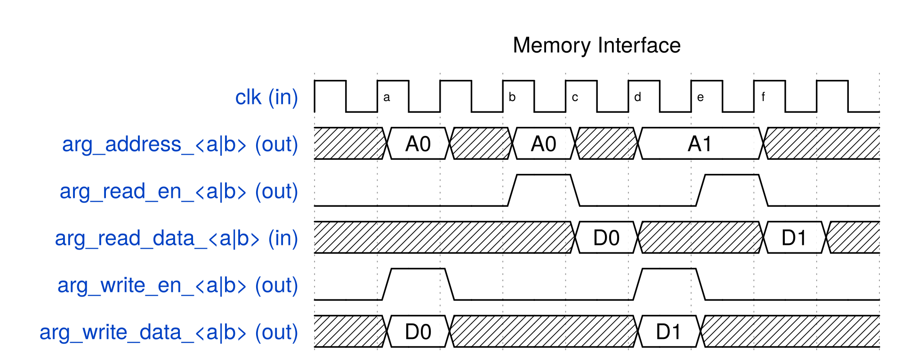
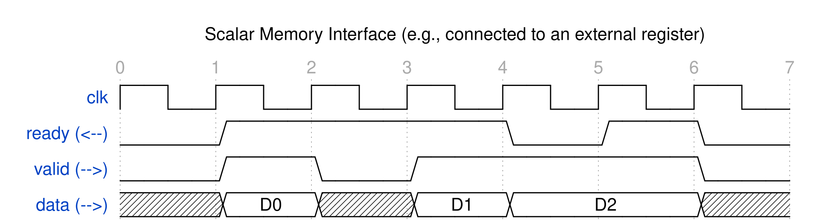
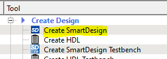

User Guide¶
Introduction to High-Level Synthesis¶
High-level synthesis (HLS) refers to the synthesis of a hardware circuit from a software program specified in a high-level language, where the hardware circuit performs the same functionality as the software program. For SmartHLS, the input is a C/C++-language program, and the output is a circuit specification in the Verilog hardware description language. The SmartHLS-generated Verilog can be given to Libero to be programmed on a Microchip FPGA. The underlying motivation for HLS is to raise the level of abstraction for hardware design, by allowing software methodologies to be used to design hardware. This can help to shorten design cycles, improve design productivity and reduce time-to-market.
While a detailed knowledge of HLS is not required to use SmartHLS, it is worthwhile to highlight the key steps involved in converting software to hardware. The four main steps involved in HLS are allocation, scheduling, binding, and RTL generation, which runs one after another (i.e., binding runs after scheduling is done).
- Allocation: The allocation step defines the constraints on the generated hardware, including the number of hardware resources of a given type that may be used (e.g. how many divider units may be used, the number of RAM ports, etc.), as well as the target clock period for the hardware, and other user-supplied constraints.
- Scheduling: Software programs are written without any notion of a clock or finite state machine (FSM). The scheduling step of HLS bridges this gap, by assigning the computations in the software to occur in specific clock cycles in hardware. With the user-provided target clock period constraint (e.g. 10 ns), scheduling will assign operations into clock cycles such that the operations in each cycle does not exceed the target clock period, in order to meet the user constraint. In addition, the scheduling step will ensure that the data-dependencies between the operations are met.
- Binding: While a software program may contain an arbitrary number of operations of a given type (e.g. multiplications), the hardware may contain only a limited number of units capable of performing such a computation. The binding step of HLS is to associate (bind) each computation in the software with a specific unit in the hardware.
- RTL generation: Using the analysis from the previous steps, the final step of HLS is to generate a description of the circuit in a hardware description language (Verilog).
Executing computations in hardware brings speed and energy advantages over performing the same computations in software running on a processor. The underlying reason for this is that the hardware is dedicated to the computational work being performed, whereas a processor is generic and has the inherent overheads of fetching/decoding instructions, loading/storing from/to memory, etc. Further acceleration is possible by exploiting hardware parallelism, where computations can concurrently. With SmartHLS, one can exploit four styles of hardware parallelism, which are instruction-level, loop-level, thread-level, and function-level parallelism.
Instruction-level Parallelism¶
Instruction-level parallelism refers to the ability to concurrently execute computations for instructions concurrently by analyzing data dependencies. Computations that do not depend on each other can be executed at the same time. Consider the following code snippet which performs three addition operations.
z = a + b;
x = c + d;
q = z + x;
...
Observe that the first and second additions do not depend on one another. These additions can therefore be executed concurrently, as long as there are two adder units available in the hardware. SmartHLS automatically analyzes the dependencies between computations in the software to exploit instruction-level parallelism in the generated hardware. The user does not need to do anything. In the above example, the third addition operation depends on the results of the first two, and hence, its execution cannot be done in parallel with the others. Instruction-level parallelism is referred to as fine-grained parallelism, as concurrency is achieved at a fine-grained level (instruction-level) of granularity.
Loop-level Parallelism¶
In software, the majority of runtime can be spent on loops, where loop iterations execute sequentially. That is, loop iteration i needs to finish before iteration i + 1 can start. With SmartHLS, it is possible to overlap the execution of a loop iteration with another iterations using a technique called loop pipelining (see Loop Pipelining). Now, imagine a loop with N iterations, where each iteration takes 100 clock cycles to complete. In software, this loop would take 100N clock cycles to execute. With loop pipelining in hardware, the idea is to execute a portion of a loop iteration i and then commence executing iteration i + 1 even before iteration i is complete. If loop pipelining can commence a new loop iteration every clock cycles, then the total number of clock cycles required to execute the entire loop be N + (N-1) cycles – a significant reduction relative to 100N. The (N-1) cycles is because each successive loop iteration start 1 cycle after the previous iteration, hence the last loop starts after (N-1) cycles.
A user can specify a loop to be pipelined with the use of the loop pipeline pragma. By default, a loop is not pipelined automatically.
Thread-level Parallelism¶
Modern CPUs have multiple cores that can be used to concurrently execute multiple threads in software. Threads are widely used in C/C++, where, parallelism is realized at the granularity of entire C/C++ functions. Hence thread-level parallelism is referred to as coarse-grained parallelism since one or more functions execute in parallel. SmartHLS supports hardware synthesis of hls::threads, where concurrently executing threads in software are synthesized into concurrently executing hardware units (see Multi-threading with SmartHLS Threads). This allows a software developer to take advantage of spatial parallelism in hardware using a familiar parallel programming paradigm in software. Moreover, the parallel execution behaviour of threads can be debugged in software, it is considerably easier than debugging in hardware.
In a multi-threaded software program, synchronization between the threads can be important, with the most commonly used synchronization constructs being mutexes and barriers. SmartHLS supports the synthesis of mutexes and barriers into hardware.
Data Flow (Streaming) Parallelism¶
The second style of coarse-grained parallelism is referred to as data flow parallelism. This form of parallelism arises frequently in streaming applications, and are commonly used for video/audio processing, machine learning, and computational finance. In such applications, there is a stream of input data that is fed into the application at regular intervals. For example, in an audio processing application, a digital audio sample may be given to the circuit every clock cycle. In streaming applications, a succession of computational tasks is executed on the stream of input data, producing a stream of output data. For example, the first task may be to filter the input audio to remove high-frequency components. Subsequently, a second task may receive the filtered audio, and boost the bass low-frequency components. Observe that, in such a scenario, the two tasks may be overlapped with one another. Input samples are continuously received by the first task and given to the second task.
SmartHLS provides a way for a developer to specify data flow parallelism through the use of function pipelining (see Function Pipelining) and/or threads (see Data Flow Parallelism with SmartHLS Threads) with SmartHLS’s FIFO library (see Streaming Library) used to connect the streaming modules.
SmartHLS Overview¶
SmartHLS accepts a C/C++ software program as input and automatically generates hardware described in Verilog HDL (hardware description language) that can be programmed onto a Microchip FPGA. The generated hardware can be imported as an HDL+ component into SmartDesign with a Tcl script that is also generated by SmartHLS. SmartHLS also generates a C++ accelerator driver API that can be used to control the generated hardware from an embedded processor. Optionally, SmartHLS can combine user code with the accelerator driver API and cross-compile it into a binary that can run on a RISC-V processor in an SoC design.
In a software program, user first needs to specify a top-level function (during project creation in the SmartHLS IDE or in the source code with our pragma, #pragma HLS function top ). Please refer to the Specifying the Top-level Function section for more details specifying the top-level function.
Then the following button, Compile Software to Hardware can be clicked to compile software to hardware:
This will compile the top-level function and all of its descendant functions into hardware. The rest of the program (outside the top-level function) is considered as the software testbench, to give inputs into the top-level function and verify outputs from the top-level function (and its descendants). The software testbench is used to automatically generate the RTL testbench and stimulus for SW/HW Co-Simulation.
Alongside the generated hardware, the Compile Software to Hardware button will also generate C++ driver functions, which can be combined with the software testbench and to produce code that can run
on the processor in an SoC system and control the generated hardware. There are also optional SoC-related features offered by SmartHLS, such as generation of a reference SoC and automatic combination and cross-compilation of
the software testbench and accelerator drivers for that reference SoC.
SmartHLS SoC Flow¶
SmartHLS can automatically generate a RISC-V processor/accelerator SoC for the PolarFire® SoC device on the Icicle Kit. For more information on the SoC features, see SoC Features.
SmartHLS Pragmas¶
Pragmas can be applied to the software code by the user to apply HLS optimization techniques and/or guide the compiler for hardware generation. They are applied directly on the applicable software construct (i.e., function, loop, argument, array) to specify a certain optimization for them. For example, to apply pipelining on a loop:
#pragma HLS loop pipeline
for (i = 1; i < N; i++) {
a[i] = a[i-1] + 2
}
For more details on the supported pragmas, please refer to SmartHLS Pragmas Manual. For more details on loop pipelining, please refer to Loop Pipelining.
SmartHLS Constraints¶
SmartHLS also supports user constraints to guide hardware generation.
Whereas pragmas are applied directly on the source code for optimizations that are specific and local to the software construct that it is being applied on (function, loop, memory, argument, etc),
constraints are used for settings that will be globally applied to the entire program (i.e., setting the target FPGA, target clock period).
Each project specifies its constraints in the config.tcl file in the project directory.
This file is automatically generated by the SmartHLS IDE. To modify the constraints, click the HLS Constraints button:
The following window will open:
{kind=link}
You can add, edit, or remove constraints from this window. Select a constraint type from the first drop-down menu. If you want more information about a constraint, click the Help button, which will open the corresponding Constraints Manual page.
An important constraint is the target clock period (shown as Set target clock period in the drop-down menu).
With this constraint, SmartHLS schedules the operations of a program to meet the specified clock period.
When this constraint is not given, SmartHLS uses the default clock period for each device, as shown below.
| FPGA Vendor | Device | Default Clock Frequency (MHz) | Default Clock Period (ns) |
|---|---|---|---|
| Microchip | PolarFire | 100 | 10 |
| Microchip | SmartFusion2 | 100 | 10 |
Details of all SmartHLS constraints are given in the Constraints Manual.
Specifying the Top-level Function¶
When compiling software to hardware with SmartHLS, you must specify the top-level function for your program.
Then SmartHLS will compile the specified top-level function and all of its descendant functions to hardware.
The remainder of the program (i.e., parent functions of the top-level function, typically the main function)
becomes a software testbench that is used for SW/HW Co-Simulation.
The top-level function is specified with the pragma, #pragma HLS function top, directly on the source code, below the function prototype, as shown below:
void hw_top(int a, int b) {
#pragma HLS function top
...
...
}
SW/HW Co-Simulation¶
The circuit generated by SmartHLS should be functionally equivalent to the input software. Users should not modify the generated Verilog, as it is overwritten every time SmartHLS runs.
SW/HW co-simulation can be used to verify that the generated hardware produces the same outputs for the same inputs as software. With SW/HW co-simulation, user does not have to write their own RTL testbench, as it is automatically generated. If user already has their own custom RTL testbench, one can optionally choose their custom RTL testbench (Specifying a Custom Test Bench) and not use SW/HW co-simulation.
To use SW/HW co-simulation, the input software program will be composed of two parts,
- A top-level function (and its descendant functions) to be synthesized to hardware by SmartHLS,
- A C/C++ testbench (the parent functions of the top-level function, typically
main()) that invokes the top-level function with test inputs and verifies outputs.
SW/HW co-simulation consists of the following automated steps:
- SmartHLS runs your software program and saves all the inputs passed to the top-level function.
- SmartHLS automatically creates an RTL testbench that reads in the inputs from step 1 and passes them into the SmartHLS-generated hardware module.
- ModelSim simulates the testbench and saves the SmartHLS-generated module outputs.
- SmartHLS runs your software program again, but uses the simulation outputs as the output of your top-level function.
You should write your C/C++ testbench such that the main() function returns a 0 when all outputs from the top-level function are as expected and otherwise return a non-zero value up to 255. We use this return value to determine whether the SW/HW co-simulation has passed.
In step 1, we verify that the program returns 0.
In step 4, we run the program using the outputs from simulation and if the SmartHLS-generated circuit matches the C program then main() should still return 0.
If the C/C++ program matches the RTL simulation then you should see: SW/HW co-simulation: PASS
Warning
The return value of the main() function must be within the range of 0 to 255. If the return value is greater than 255, only the lower 8 bits will be used as the return code. For example, a return value of 257 or 1025 will be considered as failed since their lower 8 bits equal to 1, but values such as 256, 512 and 1024 will be considered as passed since their lower 8 bits equal to 0.
For any values that are shared between software testbench and hardware functions (top-level and descendants), you can either pass in as arguments into the top-level function, or if it is a global variable, it can be directly accessed without being passed in as an argument.
Any variables that are accessed by both software testbench and hardware functions will create an interface at the top-level module.
For example, if there is an array that is initialized in the software testbench and is used as an input to the hardware function, you may pass the array as an argument into the top-level function, which will create a memory interface for the array in the hardware core generated by SmartHLS.
Arguments into the top-level function can be constants, pointers, arrays, and FIFO data types.
The top-level function can also have a return value.
Please refer to the included example in the SmartHLS IDE, C++ Canny Edge Detection (SW/HW Co-Simulation), as a reference.
If a top-level argument is coming from a dynamically allocated array (e.g., malloc), the size of the array (in bytes) must be specified with our interface pragma (e.g., #pragma HLS interface argument(<arg_name>) depth(<int>)).
Please see the Memory Interface for Pointer Argument/Global Variable for more details. The sizes of arrays that are statically allocated do not need to be specified with the pragma, as SmartHLS will automatically determine them.
For debugging purposes, SmartHLS converts any C printf
statements into Verilog $write statements so that values printed during
software execution will also be printed during hardware simulation. This
allows easy verification of the correctness of the hardware circuit. Verilog
$write statements are unsynthesizable and will not affect the final FPGA
hardware.
To specify the arguments to be passed to the software testbench (i.e., int main(int argc, char *argv[])), a Makefile argument PROGRAM_ARGUMENTS can be defined in a makefile.user file (you need to create the file in the SmartHLS project folder).
For example, if a software testbench takes in two arguments, an input BMP file and a golden output BMP file, you would specify the following in the makefile.user file,
PROGRAM_ARGUMENTS = input_file.bmp golden_output_file.bmp
Note
Co-simulating multiple top-level modules:
- Co-simulation supports verifying multiple top-level modules simultaneously. Each top-level module is verified solely based on the corresponding top-level function’s input and expected output gathered from the software testbench. However the Co-simulation testbench will simulate all top-level modules simultaneously with the same clock.
- If the user wants to verify a single top-level module, the
toppragma should be only added for the desired function in the source code.
Note
Limitations:
- When function pipelining is used, the top-level function cannot have array interfaces (array arguments or global arrays that are accessed from both SW testbench and HW functions).
- When multi-threading is used (Multi-threading with SmartHLS Threads), Co-Simulation can only support the case when all threads are joined in the functions where the threads are forked. Free-running threads (that are continuously running and never joined) are not supported by SW/HW Co-Simulation.
Loop Pipelining¶
Loop pipelining is an optimization that can automatically extract loop-level parallelism to create an efficient hardware pipeline. It allows executing multiple loop iterations concurrently on the same pipelined hardware.
To use loop pipelining, the user needs to specify the loop pipeline pragma above the applicable loop:
#pragma HLS loop pipeline
for (i = 1; i < N; i++) {
a[i] = a[i-1] + 2
}
An important concept in loop pipelining is the initiation interval (II), which is the cycle interval between starting successive iterations of the loop. The best performance and hardware utilization is achieved when II=1, which means that successive iterations of the loop can begin every clock cycle. A pipelined loop with an II=2 means that successive iterations of the loop can begin every two clock cycles, corresponding to half of the throughput of an II=1 loop.
By default, SmartHLS always attempts to create a pipeline with an II=1. However, this is not possible in some cases due to resource constraints or cross-iteration dependencies. Please refer to Optimization Guide on more examples and details on loop pipelining. When II=1 cannot be met, SmartHLS’s pipeline scheduling algorithm will try to find the smallest possible II that satisfies the constraints and dependencies.
Function Pipelining¶
Loop pipelining is one way to exploit pipeline parallelism in a circuit.
An alternative way is to use Function Pipelining.
When a function is marked to be pipelined (by using the Pipeline Function pragma), SmartHLS will implement the function as a pipelined circuit that can start a new invocation every II cycles.
That is, the circuit can execute again while its previous invocation is still executing, allowing it to continuously process incoming data in a pipelined fashion.
Typically a pipelined function is called together with other pipelined functions, and these are called from within a parent “dataflow function”, specified via the Dataflow pragma described below.
Data Flow Parallelism¶
Data Flow or “dataflow” parallelism is another commonly used technique to improve hardware throughput. In dataflow parallelism, a succession of computational tasks which process continuous streams of data can execute in parallel.
These tasks are called dataflow sub-functions.
A function is declared as a dataflow function using the pragma #pragma HLS function dataflow (see Dataflow).
Within this dataflow function, the called functions, or sub-functions, will execute with dataflow parallelism.
If the dataflow function contains loops or control-flow, each top-level loop nest or control-flow region will be extracted into a new sub-function.
In a dataflow circuit, synchronization will be required for passing intermediate data between the sub-functions that can run in parallel. For instance, a producer sub-function can write to an array for another consumer sub-function to read. In this case, the consumer sub-function needs to “know” that the producer has finished writing the array in order to start. SmartHLS can convert such intermediate data into double/shared buffer or FIFOs. By default, intermediate data is converted into double buffer. This can be configured via the Dataflow Channel pragma.
Note
Dataflow functions and sub-functions have the following restrictions or properties:
- The dataflow function and all its sub-functions must have
voidreturn type, with output data passed by pointer or by reference. - Nested dataflow functions must have the parent dataflow function directly calling the child dataflow function. That is, it is supported for a dataflow function to call another dataflow function; however it is not allowed to have a dataflow function, calling a non-dataflow function, which further calls a dataflow function.
- Sub-functions cannot contain SmartHLS Threads (to use SmartHLS Threads, see Multi-threading with SmartHLS Threads).
- When a dataflow function is called from within a loop, the loop body can only contain that call in order for SmartHLS to overlap the invocations of the dataflow function; otherwise the dataflow function will still run in a non-overlapped manner.
- Data external to the dataflow function (declared outside of the dataflow function and its sub-functions) can only be accessed by 1 sub-function, unless the data is of FIFO type.
- All intermediate data should have exactly one producer and one consumer sub-function.
- When configuring an intermediate data variable (i.e., an array or single-element memory) to be implemented as a FIFO channel using the Dataflow Channel pragma, it is only correct to use the
fifotype when: 1) the producer function only writes to the variable in a sequential manner, and 2) the consumer function only reads from the variable in a sequential manner. - If a sub-function calls another synthesizable sub-sub-function, the sub-sub-function will be automatically inlined by SmartHLS.
- If a sub-function is called in more than one location inside a dataflow function, the sub-function will be automatically replicated by SmartHLS.
Note
If a dataflow function contains conditionally executed tasks, the generated circuit may mismatch with the software and may need to be free-running on hardware for the circuit to work properly. To make the generated circuit free-running, tie the start signal to 1. For CoSimulation, see COSIM_FREE_RUNNING_DATAFLOW_TOP for how to keep the start signal at 1 during simulation.
Dataflow parallelism can be used to overlap sub-functions which run in sequence, or to run independent sub-functions in parallel.
Dataflow Example: Canny with FIFOs¶
To see this complete code example, please refer to the C++ Canny Edge Detection (SW/HW Co-Simulation) example included in the SmartHLS IDE.
An example of overlapping sequential sub-functions is an image processing pipeline, such as Canny edge detection. Canny edge detection runs 4 image processing algorithms sequentially.
void canny(unsigned char *input_frame,
unsigned char *output_frame) {
#pragma HLS function dataflow
#pragma HLS dataflow_channel variable(output_gf) type(double_buffer)
unsigned char output_gf [HEIGHT * WIDTH];
#pragma HLS dataflow_channel variable(output_sf) type(double_buffer)
unsigned short output_sf [HEIGHT * WIDTH];
#pragma HLS dataflow_channel variable(output_nm) type(double_buffer)
unsigned char output_nm [HEIGHT * WIDTH];
gaussian_filter(input_frame, output_gf);
sobel_filter(output_gf, output_sf);
nonmaximum_suppression(output_sf, output_nm);
hysteresis_filter(output_nm, output_frame);
}
These can overlap using dataflow parallelism to operate as a single pipeline.
Each time the canny function is called, one new piece of data will enter the pipeline.
In the example above, the granularity of data is an entire image, of size HEIGHT * WIDTH pixels.
After the fourth call, the pipeline will be in steady-state, and all 4 sub-functions will be executing in parallel on 4 separate images.
The intermediate data arrays are double-buffered as specified by the Dataflow Channel pragma.
{kind=link}
Because the Canny pipeline processes the image data in sequential order, however, the granularity of data entering the pipeline each function call does not need to be an entire image. Instead, it can be a single pixel. The intermediate channels could then be FIFOs.
void canny_fifo(hls::FIFO<unsigned char> &input_fifo,
hls::FIFO<unsigned char> &output_fifo) {
#pragma HLS function dataflow
#pragma HLS dataflow_channel variable(output_gf) type(fifo)
unsigned char output_gf [HEIGHT * WIDTH];
#pragma HLS dataflow_channel variable(output_sf) type(fifo)
unsigned short output_sf [HEIGHT * WIDTH];
#pragma HLS dataflow_channel variable(output_nm) type(fifo)
unsigned char output_nm [HEIGHT * WIDTH];
gaussian_filter(input_fifo, output_gf);
sobel_filter(output_gf, output_sf);
nonmaximum_suppression(output_sf, output_nm);
hysteresis_filter(output_nm, output_fifo);
}
In this case, the FIFO only needs to be as deep as 2 elements to accommodate the dataflow. By using FIFO rather than double/shared buffer, we can significantly save resource usage as well as achieve better performance by allowing the pipeline to be in steady state faster.
{kind=link}
Another way to implement these as fifo channels would be to use the hls::FIFO library. This final version is included as a complete code example. Please refer to the C++ Canny Edge Detection (SW/HW Co-Simulation) example in the SmartHLS IDE.
void canny_fifo(hls::FIFO<unsigned char> &input_fifo,
hls::FIFO<unsigned char> &output_fifo) {
#pragma HLS function top
#pragma HLS function dataflow
hls::FIFO<unsigned char> output_fifo_gf(/* depth = */ 2);
hls::FIFO<unsigned short> output_fifo_sf(/* depth = */ 2);
hls::FIFO<unsigned char> output_fifo_nm(/* depth = */ 2);
gaussian_filter(input_fifo, output_fifo_gf);
sobel_filter(output_fifo_gf, output_fifo_sf);
nonmaximum_suppression(output_fifo_sf, output_fifo_nm);
hysteresis_filter(output_fifo_nm, output_fifo);
}
The top-level function has been specified with #pragma HLS function top. The top-level function calls the four sub-functions, gaussian_filter, sobel_filter, nonmaximum_suppression, and hysteresis_filter, each of which are specified to be function pipelined with #pragma HLS function pipeline.
The top-level arguments are input_fifo and output_fifo. The input_fifo is given as an argument into the first sub-function, gaussian_filter, and gives the inputs into the overall circuit.
The output_fifo is given as an argument into the last sub-function, hysteresis_filter, and receives the outputs of the overall circuit.
There are also intermediate FIFOs, output_fifo_gf, output_fifo_sf, and output_fifo_nm, which are given as arguments into the sub-function and thus connect them (i.e., outputs of gaussian_filter is given as inputs to sobel_filter).
When synthesizing a function with multiple pipelined sub-functions, specifying
#pragma HLS function dataflow causes SmartHLS to parallelize the execution of all
sub-functions, forming a streaming circuit with dataflow parallelism.
In this case gaussian_filter executes as soon as there is data in the input_fifo, and sobel_filter starts running as soon as there is data in the output_fifo_sf.
In other words, a sub-function does not wait for its previous sub-function to completely finish running before it starts to execute, but rather, it starts running as early as possible.
Each sub-function also starts working on the next data while the previous data is being processed (in a pipelined fashion).
If the initiation interval (II) is 1, a sub-function starts processing new data every clock cycle.
Once the sub-functions reach steady-state, all sub-functions execute concurrently.
This example showcases the synthesis of a streaming circuit that consists of a succession of concurrently executing dataflow sub-functions.
Dataflow Example: Diamond¶
Next, consider an example in which there are sub-functions without dependencies.
{kind=link}
The sub-functions B and C can execute in parallel, starting when A is finished. Once both B and C are finished, D will begin. An implementation of the dataflow function is shown below.
void diamond(int in1[128], int in2[128], int out[128]) {
#pragma HLS function top
#pragma HLS function dataflow
#pragma HLS dataflow_channel variable(tmp1_0) type(double_buffer)
#pragma HLS dataflow_channel variable(tmp2_0) type(double_buffer)
#pragma HLS dataflow_channel variable(tmp1_1) type(double_buffer)
#pragma HLS dataflow_channel variable(tmp2_1) type(double_buffer)
int tmp1_0[128], tmp2_0[128], tmp1_1[128], tmp2_1[128];
subfunction_A(in1, in2, tmp1_0, tmp2_0);
subfunction_B(tmp1_0, tmp1_1);
subfunction_C(tmp2_0, tmp2_1);
subfunction_D(tmp1_1, tmp2_1, out);
}
Multi-threading with SmartHLS Threads¶
In an FPGA hardware system, the same module can be instantiated multiple times to exploit spatial parallelism, where all module instances execute in parallel to achieve higher throughput.
SmartHLS allows easily inferring such parallelism with the use of SmartHLS Threads which is a simplified API of std::thread commonly used in software.
Parallelism described in software with SmartHLS threads is automatically compiled to parallel hardware with SmartHLS.
Each thread in software becomes an independent module that concurrently executes in hardware.
For example, the code snippet below creates N threads running the Foo function in software.
SmartHLS will correspondingly create N hardware instances all implementing the Foo function, and parallelize their executions.
SmartHLS also supports mutex and barrier APIs so that synchronization between threads can be specified using locks and barriers.
void Foo (int* arg);
for (i = 0; i < N; i++) {
thread[i] = hls::thread<void>(Foo, &args[i]);
}
SmartHLS supports hls::thread APIs, which are listed below in
Supported SmartHLS Thread APIs.
Note that for a hls::thread kernel, SmartHLS will automatically inline any of its descendant functions.
The inlining cannot be overridden with the noinline pragma (see SmartHLS Pragmas Manual).
Supported SmartHLS Thread APIs¶
You can use SmartHLS thread library by including the header file:
#include "hls/thread.hpp"
The thread library is provided as a C++ template class.
The template argument of hls::thread<T> object specifies the return type T of the threaded function.
For example, hls::thread<int> is a thread that can invoke a function with int return type,
and hls::thread<void> is a thread that can invoke a function that returns void.
To start the parallel execution of a function, we will pass the function and function call arguments to the constructor of a new thread instance,
// f1 is a function that we would like to execute concurrently.
void f1(int a);
// Create a new thread 't1' with the function 'f1' and argument 'm'.
// - <void> corresponds to the return type of 'f1'.
// - Argument 'm' corresponds to the parameter 'a' of 'f1'.
// - In software, this line creates a parallel thread to run the f1 function.
// - In hardware, this line means a dedicated hardware module for f1 should
// be created for this specific thread call, and the dedicated hardware
// module will start the execution right here.
hls::thread<void> t1(f1, m);
// Another way to create a parallel thread:
int f2(); // f2 has no argument and the return type is <int>.
hls::thread<int> t2; // Create a thread 't2' instance first.
t2 = hls::thread<int>(f2); // Assign 't2' later with the function and arguments.
The code below shows how to join a thread (i.e., wait for the thread completion), and optionally retrieve a non-void return value. Note that joining a thread will block the execution until the threaded function finishes.
hls::thread<void> t1(f1, m);
t1.join(); // The program will block here until thread 't1' finishes running 'f1'.
hls::thread<int> t2 = hls::thread<int>(f2);
int ret = t2.join(); // The program will wait for t2 to finish and retrieve the return value.
If you have used std::thread, you may know passing an argument by reference requires a std::ref wrapper around the argument.
Similarly, hls::ref is used to wrap the passed-in by reference argument when the hls::thread is created:
int f(int &a);
int x;
hls::thread<int> t = hls::thread<int>(f, hls::ref(x));
Note
SmartHLS threads differs from std::thread in a few aspects:
- SmartHLS threads support retrieving the return value from the threaded function (this functionality is only supported using
std::futurein the standard threading library). - SmartHLS threads use templates to specify the return type of the threaded function.
- SmartHLS threads are auto-detaching, which means if the function where the thread is created is exited without using
join, the thread will be detached when destructed. But the threaded function can continue executing.
SmartHLS thread library also supports mutex and barrier as synchronization primitives.
mutex can be used to protect shared data from being simultaneously accessed by multiple threads.
hls::mutex has lock() and unlock() methods.
barrier provides a thread-coordination mechanism that allows at most an expected number of threads to block until the expected number of threads arrive at the barrier.
hls::barrier has init() and wait() methods.
The following example illustrates the use of hls::mutex and hls::barrier:
#define ARRAY_SIZE 20
#include <hls/thread.hpp>
#include <stdio.h>
volatile int input[ARRAY_SIZE] = {1, 2, 3, 4, 5, 6, 7, 8, 9, 10,
11, 12, 13, 14, 15, 16, 17, 18, 19, 20};
hls::mutex mutex;
hls::barrier barr;
int add(int &final_result, int thread_no) {
int result = 0;
for (int i = 0; i < ARRAY_SIZE; i++)
result += input[i];
// Use mutex so that only 1 thread can write at any time
mutex.lock();
final_result += result;
mutex.unlock();
// Wait for all threads to reach this point
barr.wait();
// Print the result after all threads update final_result
printf("thread %d: final_result = %d\n", thread_no, final_result);
return result;
}
int main() {
#pragma HLS function top
// Initialize the barrier.
barr.init(2);
// Start the threads.
int final_result = 0;
hls::thread<int> thread1(add, hls::ref<int>(final_result), /*thread_no*/ 1);
hls::thread<int> thread2(add, hls::ref<int>(final_result), /*thread_no*/ 2);
// Join the threads.
int result[2] = {0, 0};
result[0] = thread1.join();
result[1] = thread2.join();
// Check result.
int result_matches = 0;
for (int i = 0; i < 2; i++) {
printf("result[%d] = %d\n", i, result[i]);
result_matches += (result[i] == 210);
}
// Check final_result is correct
result_matches += (result[0] + result[1]) == final_result;
printf("MATCHES: %d\n", result_matches);
if (result_matches == 3) {
printf("PASS\n");
return 0;
}
printf("FAIL\n");
return 1;
}
Data Flow Parallelism with SmartHLS Threads¶
Most of the time a dataflow design can be implemented with the Dataflow pragma that requires minimal code change. However, for more complex parallelism, e.g., with feedback/cycles between sub-functions, multi-threading APIs may be needed to explicitly describe the parallelism between the functions.
The concurrent execution of computational tasks can also be accurately described in software using hls::thread APIs.
In addition, the continuous streams of data flowing through the tasks can be inferred using SmartHLS’s built-in FIFO data structure (see Streaming Library).
Note
Also see Using DoubleBuffer and SharedBuffer in a multi-threaded dataflow design for another example that uses data buffer instead of FIFO to pass data between threads.
Let’s take a look at the code snippet below, which is from the example project, “Fir Filter (Loop Pipelining with hls::thread)”, included in the SmartHLS IDE.
In the example, the main function contains the following code snippet:
// Create input and output FIFOs
hls::FIFO<int> input_fifo(/*depth*/ 2);
hls::FIFO<int> output_fifo(/*depth*/ 2);
// Launch thread kernels.
hls::thread<void> thread_var_fir(FIRFilterStreaming, &input_fifo, &output_fifo);
hls::thread<void> thread_var_injector(test_input_injector, &input_fifo);
hls::thread<void> thread_var_checker(test_output_checker, &output_fifo);
// Join threads.
thread_var_injector.join()
thread_var_checker.join();
The corresponding hardware is illustrated in the figure below.
The two hls::FIFO<int>s in the C++ code corresponds to the creation of the two FIFOs, where the bit-width is set according to the type shown in the constructor argument <int>.
The three hls::thread<void> calls initiate and parallelize the executions of three computational tasks, where each task is passed in a FIFO (or a pointer to a struct containing more than one FIFO pointers) as its argument.
The FIFO connections and data flow directions are implied by the uses of FIFO read() and write() APIs.
For example, the test_input_injector function has a write() call writing data into the input_fifo, and the FIRFilterStreaming function uses a read() call to read data out from the input_fifo.
This means that the data flows through the input_fifo from test_input_injector to FIRFilterStreaming.
The join() API is called to wait for the completion of test_input_injector and test_output_checker.
We do not “join” the FIRFilterStreaming thread since it contains an
infinite loop (see code below) that is always active and processes incoming
data from input_fifo whenever the FIFO is not empty.
This closely matches the always running behaviour of streaming hardware, where hardware is constantly running and processing data..
Now let’s take a look at the implementation of the main computational task (i.e., the FIRFilterStreaming threading function).
void FIRFilterStreaming(hls::FIFO<int> *input_fifo,
hls::FIFO<int> *output_fifo) {
// This loop is pipelined and will be "always running", just like how a
// streaming module always runs when new input is available.
#pragma HLS loop pipeline
while (1) {
// Read from input FIFO.
int in = input_fifo->read();
printf("FIRFilterStreaming input: %d - %d\n", i, in);
static int previous[TAPS] = {0}; // Need to store the last TAPS -1 samples.
const int coefficients[TAPS] = {0, 1, 2, 3, 4, 5, 6, 7,
8, 9, 10, 11, 12, 13, 14, 15};
int j = 0, temp = 0;
for (j = (TAPS - 1); j >= 1; j -= 1)
previous[j] = previous[j - 1];
previous[0] = in;
for (j = 0; j < TAPS; j++)
temp += previous[TAPS - j - 1] * coefficients[j];
int output = (previous[TAPS - 1] == 0) ? 0 : temp;
// Write to output FIFO.
output_fifo->write(output);
}
}
In the code shown in the example project, you will notice that all three threading functions contain a loop, which repeatedly reads and/or writes data from/to FIFOs to perform processing. In SmartHLS, this is how one can specify that functions are continuously processing data streams that are flowing through FIFOs.
Further Throughput Enhancement with Loop Pipelining¶
In this example, the throughput of the streaming circuit will be limited by how frequently the functions can start processing new data (i.e., how frequently the new loop iterations can be started).
For instance, if the slowest function among the three functions can only start a new loop iteration every 4 cycles, then the throughput of the entire streaming circuit will be limited to processing one piece of data every 4 cycles.
Therefore, as you may have guessed, we can further improve the circuit throughput by pipelining the loops in the three functions.
If you run SmartHLS synthesis for the example (Compile Software to Hardware), you should see in the Pipeline Result section of our report file, summary.hls.<top_level>.rpt, that all loops can be pipelined with an initiation interval of 1.
That means all functions can start a new iteration every clock cycle, and hence the entire streaming circuit can process one piece of data every clock cycle.
Now run the simulation (Simulate Hardware) to confirm our expected throughput. The reported cycle latency should be just slightly more than the number of data samples to be processed
(INPUTSIZE is set to 128; the extra cycles are spent on activating the parallel accelerators, flushing out the pipelines, and verifying the results).
Memory Partitioning¶
Memory Partitioning is an optimization where aggregate types such as arrays and structs are partitioned into smaller pieces allowing for a greater number of reads and writes (accesses) per cycle. SmartHLS instantiates a RAM for each aggregate type where each RAM has up to two ports (allowing up to two reads/writes per cycle). Partitioning aggregate types into smaller memories or into its individual elements allows for more accesses per cycle and improves memory bandwidth.
There are two flavors of memory partitioning, access-based partitioning and user-specified partitioning.
Note
Accessing memory outside of an array dimension is not supported by memory partitioning and will sometimes cause incorrect circuit behavior. An example of this is casting a 2-d array to a pointer and iterating through the size of the 2-d array.
Pointers that alias to different memories (e.g. a function called with different memories) or different sections of the same memory (e.g. a pointer that is assigned to multiple memories based on a condition) can be partitioned if the aliased memories/sections have the same partitions. Otherwise, access-based partitioning will not partition the aliased memories, or a warning will be displayed for user-specified partitioning. The following example shows an unsupported aliasing case:
int sum_array(int *z) { #pragma HLS function noinline int sum = 0; for (int i = 0; i < 100; i++) sum += z[i]; return sum; } int main() { #pragma HLS function top #pragma HLS memory partition variable(x) type(block) dim(1) factor(2) int x[100]; // x should be partitioned into 2 partitions #pragma HLS memory partition variable(x) type(cyclic) dim(1) factor(4) int y[100]; // x should be partitioned into 4 partitions // ... int sum_x = sum_array(x); int sum_y = sum_array(y); // ... }
SmartHLS will output a warning:
Warning: The user specified memory "x" on line 80 of test.cpp could not be partitioned because the memory aliases with another memory at line 71 of test.cpp that has a different partitioning. Warning: The user specified memory "y" on line 82 of test.cpp could not be partitioned because the memory aliases with another memory at line 71 of test.cpp that has a different partitioning.
Partitions with no accesses are discarded.
Access-Based Memory Partitioning¶
Access-based partitioning is automatically applied to all memories except for those at the top-level interfaces (I/O Memory). This flavor of memory partitioning will analyze the ranges of all accesses to a memory and create partitions based on these accesses. After analyzing all memory accesses, independent partitions will be implemented in independent memories. If two partitions overlap in what they access, they will be merged into one partition. If there are any sections of the memory that is not accessed, it will be discarded to reduce memory usage. For example, if there are two loops, where one loop accesses the first half of an array and the second loop accesses the second half of the array, the accesses to the array from the two loops are completely independent. In this case the array will be partitioned into two and be implemented in two memories, one that holds the first half of the array and another that holds the second half of the array. However, if both loops access the entire array, their accesses overlap, hence the two partitions will be merged into one and the array will just be implemented in a single memory (without being partitioned). Access-based partitioning is done automatically without needing any memory partition pragmas, in order to automatically improve memory bandwidth and reduce memory usage whenever possible.
Example
Access-based partitioning is automatically applied to all memories by SmartHLS except for interface memories (top-level function arguments and global variables accessed by both software testbench and hardware functions) to the top-level function. Interface memories need to be partitioned with the memory partition pragma. See the code snippet below that illustrate an example of accessed-based partitioning.
int array[1000];
int result = 0;
//...
#pragma HLS loop unroll
for (i = 0; i < 1000; i++) {
result += array[i];
}
In the example above, each iteration of the loop access an element of array and adds it to result. The unroll pragma is applied to completely unroll the loop.
Without partitioning, SmartHLS will implement this array in a RAM (with 1000 elements), where an FPGA RAM can have up to two read/write ports.
In this case, the loop will take 500 cycles, as 1000 reads are needed from the RAM and up to two reads can be performed per cycle with a two ported memory.
With access-based partitioning, the accesses to the above array will be analyzed. With unrolling, there will be 1000 load instructions, each of which will access a single array element, with no overlaps in accesses between the load instructions (i.e., the accesses of each load instruction are independent). This creates 1000 partitions, with one array element in each partition. After partitioning, all 1000 reads can occur in the same clock cycle, as each memory will only need one memory access. Hence the entire loop can finish in a single cycle. With this example, we can see that memory partitioning can help to improve memory bandwidth and improve performance.
With access-based partitioning, SmartHLS outputs messages to the console specifying which memory has been partitioned into how many partitions, as shown below:
Info: Partitioning memory: array into 1000 partitions.
Please refer to the Optimization Guide for more examples and details.
User-Specified Memory Partitioning¶
The user can explicitly specify a memory to be partitioned via the memory partition pragma (#pragma HLS memory partition variable, #pragma HLS memory partition argument). See Partition Top-Level Interface and Partition Memory for more details.
User-specified partitioning also analyzes accesses but partitions based on a predefined structure and array dimension.
SmartHLS supports block, cyclic and complete types for arrays, and struct_fields and complete partitioning for struct. Specifying the type to be none prevents partitioning the specified memory.
The memory partition pragma has optional arguments type and dim that specifies the partition type and dimension to partition, respectively.
The default type is complete which means to partition the array into individual elements, and the default dimension is 0 which means to partition all dimensions.
The factor argument is required for block and cyclic types to specify the partitioning factor, i.e. the number of partitions. Note that the pragma will be ignored if the factor <= 1.
Note
Lower numbered dimensions correspond to left-ward dimensions of the array and higher numbered dimensions correspond to right-ward dimensions of the array. For an a 2d array A[N][M], dim(1) refers to the dimension with N elements, and dim(2) refers to the dimension with M elements.
With user-specified partitioning, SmartHLS outputs messages to the console stating the variable set to be partitioned and its settings. SmartHLS also outputs messages specifying if a memory has been partitioned and into how many partitions. If a memory is specified to be partitioned but cannot be partitioned, SmartHLS will output a warning.
Info: Found user-specified memory: "array" on line 6 of test.c, with partition type: Complete, partition dimension: 0.
Info: Found user-specified memory: "array3d" on line 27 of test.c, with partition type: Block, partition dimension: 1, partition factor 2.
Warning: The user-specified memory "array3d" on line 27 of test.c could not be partitioned because a loop variable indexing into a multi-dimenional array comes from a loop variable and goes out of the array dimension bounds. Going outside of array dimension bounds is not supported for memory partitioning.
Info: Partitioning memory: array into 8 partitions.
Please refer to the Optimization Guide for more examples and details.
Block Partitioning¶
Block partitioning aggregates consecutive elements of the original array into partitions. The number of partitions (blocks) is defined by the factor argument.
#pragma HLS memory partition variable(array2d) type(block) dim(1) factor(2)
int array2d[10][20];
For example, in the above code snippet array2d is specified to partition dimension 1 with factor 2. The result is two int[5][20] partitions where the first partitions has elements 0, 1, 2, 3, 4, and the second has elements 5, 6, 7, 8, 9 of dimension 1.
Note
If the number of elements N in the specified dimension is not divisible by factor, all the partitions will have the same size B = ceil(N/factor), except the last partition which will have the remaining elements N - (factor - 1) * B. For example, if N = 10 and factor = 3, the resulting partitions will have 4, 4 and 2 elements respectively.
Cyclic Partitioning¶
Cyclic partitioning interleaves elements from the original array into partitions. The number of interleaved partitions is defined by the factor argument.
The array is partitioned cyclically by arbitrating the elements between the partitions, putting one element into each partition before coming back to the first one until the array is fully partitioned.
#pragma HLS memory partition variable(array2d) type(cyclic) dim(2) factor(2)
int array2d[10][10];
For example, in the above code snippet array2d is specified to partition dimension 2 with factor 2. The result is two int[10][5] partitions where the first partition has elements 0, 2, 4, 6, 8, and the second has elements 1, 3, 5, 7, 9 of dimension 2.
Note
If the number of elements N in the specified dimension is not divisible by factor, the number of complete partitions with B = ceil(N/factor) elements will be M = N % factor, and the rest of partitions will have B-1 elements. For example, if N = 10 and factor = 3, the resulting partitions will have 4, 3 and 3 elements respectively.
Complete Partitioning¶
Complete partitioning deconstructs the array into individual elements along the specified dimension. For a multi-dimensional array, each element of the specified dimension will correspond to a partition with the rest of the dimensions preserved. For a one-dimensional array, individual elements are mapped to registers. If dim(0) is specified, complete partitioning is applied across all dimensions resulting in scalar elements.
Note
Applying complete partitioning on a (array of) struct, partitions all struct fields (including nested struct elements) and array dimensions.
Example
#pragma HLS memory partition variable(_array)
int _array[8];
int _result = 0;
//...
for (i = 0; i < 8; i++) {
_result += _array[i];
}
The example above shows the same example that was shown for access-based partitioning, however, the loop is not unrolled in this case. Access-based partitioning will try to partition the array but will only find one load instruction in the loop that accesses the entire array. This preventing access-based partitioning as all eight accesses come from the same load instruction.
User-specified partitioning can be used to force partitioning of this array with a predefined structure. In the example above, the memory partition pragma specifies the array to be partitioned completely into eight individual elements.
Info: Partitioning memory: _array into 8 partitions.
The benefit in this case is that the loop does not have to be unrolled, which can be useful in cases like when the loop is pipelined and cannot be unrolled (see Loop Pipelining).
Struct-Fields Partitioning¶
Struct-fields partitioning partitions a (array of) struct argument / variable into its individual fields such that each field is a partition. Unlike complete partitioning, if a field in the partitioned struct is an aggregate type (struct or array), the field is not further partitioned to its elements. Note that applying Struct-fields partitioning to an array-of-struct creates an array for each field in the struct. Unaccessed partitions (fields) are discarded, but the unaccessed elements in an aggreagte partition (field) are not discarded.
Example
struct Ty {
struct SubTy {
int a;
int b;
};
char x;
short y[2];
SubTy z;
};
int sum(Ty array[8]) {
#pragma HLS function top
#pragma HLS memory partition argument(array) type(struct_fields)
int result = 0;
for (int i = 0; i < 8; i++) {
result += array[i].x + array[i].y[0] + array[i].z.a;
}
return result;
}
The example above shows array, an array of struct of type Ty, is
partitioned using Struct-fields partitioning.
With the user-specified partitioning, SmartHLS outputs messages to the console stating that the argument
set to be partitioned and how many partitions are created.
The three partitions are array.x[8], array.y[8][2], and array.z[8], where the 8-element dimensions are inherited from the original array size.
Info: Found user specified memory: "array" on line 15 of struct_sum.cpp, with partition type: Fields, partition dimension: 0.
Info: Partitioning memory: array into 3 partitions.
The summary report from SmartHLS lists the 3 partitions created from the fields of the struct. Note that the array field Ty.y has one partition, and similarly the struct field Ty.z.
+---------------------------------------------------------------------------+
| I/O Memories |
+---------+-----------------------+------+-------------+------------+-------+
| Name | Accessing Function(s) | Type | Size [Bits] | Data Width | Depth |
+---------+-----------------------+------+-------------+------------+-------+
| array_x | sum | ROM | 0 | 8 | 0 |
| array_y | sum | ROM | 0 | 16 | 0 |
| array_z | sum | ROM | 0 | 64 | 0 |
+---------+-----------------------+------+-------------+------------+-------+
Struct Support¶
A C++ struct is a user-defined data type that is used to group several fields, possibly with different data types.
Using struct allows passing a set of variables around the design together while retaining the readability and accessibility of each of these variables.
In this section, we will discuss how interfaces and memories with struct types are handled in SmartHLS including partitioning, packing, and returning by value.
Example
This example will be used in the following sub-sections to show the different interfaces. There are three struct types in the code below:
Account: represents a bank account with checking and savings balances.Client: represents a bank client with an IDidand an accountacc. Note thatidhas a 6-bit unsigned integer type to demonstratestructpacking.UpdateResult: used as a return type for the top-level functionupdateto report if the update was completed and the final account balance.
The top-level function update of the example takes a clients’ list clients , an ID id and an account balance acc to be added to the client’s balance.
It returns UpdateResult with updated = 1 and the final balance acc if an account with ID id is found in the client’s list clients , otherwise it returns updated = 0.
To demonstrate another advantage of using struct, Account has a member function add that is used to update the balances which makes the code more readable in update function.
Another function find is used to search for an account with ID id in the clients’ list. Notice that this function has noinline attribute. This is intended to demonstrate how struct types are passed through RTL modules after synthesizing the design.
#include <hls/ap_int.hpp>
#include <stdint.h>
#include <stdio.h>
#include <string.h>
#define N 4
using namespace hls;
struct Account {
uint64_t checking;
uint64_t savings;
void add(const Account &acc) {
checking += acc.checking;
savings += acc.savings;
}
};
struct Client {
ap_uint<6> id;
Account acc;
};
struct UpdateResult {
ap_uint<1> updated;
Account acc;
};
int find(Client clients[N], ap_uint<6> id) {
#pragma HLS function noinline
for (int i = 0; i < N; i++)
if (clients[i].id == id)
return i;
return -1;
}
UpdateResult update(Client clients[N], ap_uint<6> id, Account acc) {
#pragma HLS function top
UpdateResult ret{};
int idx = find(clients, id);
if (idx != -1) {
clients[idx].acc.add(acc);
ret.acc = clients[idx].acc;
ret.updated = 1;
}
return ret;
}
Client clients[N];
int main() {
for (int i = 0; i < N; i++) {
clients[i].id = i;
clients[i].acc.checking = 0;
clients[i].acc.savings = 0;
}
Account test_acc{100, 100};
int passes = 0;
UpdateResult test_ret{};
for (int j = 0; j < N; j++) {
test_ret = update(clients, j, test_acc);
if (test_ret.updated == 1) {
if (clients[j].acc.checking == 100 && clients[j].acc.savings == 100)
passes++;
}
}
// Should return 0 if passes == N
return (passes != N);
}
Struct Packing¶
Packing a struct creates a single scalar with a wide word width.
All the struct members are placed in the scalar with their order in the struct definition such that the first element is the least significant part of the vector and the last element is the most significant part of the vector.
Packing allows all the struct elements to be read and written simultaneously.
There are two packing options in SmartHLS: bit-packing and byte-packing. A pragma is specified for the argument / variable to be packed with the packing option.
Note that packing an array of struct results in an array with each element as a wide-vector representing the packed struct.
Note
Struct packing supports casting a struct to another type only if the packed type is the same as the cast type.
For example, the following code shows a supproted cast for struct s because packing the two uint8_t members is the same as uint16_t:
struct S { uint8_t a; uint8_t b }; #pragma HLS memory impl variable(s) pack(bit) S s; uint16_t &cast = (uint16_t &)s;
Bit-Packing
Bit-packing uses the bit-width of each of element of the struct. In our example, clients argument can be bit-packed as following:
int find(Client clients[N], ap_uint<6> id) {
#pragma HLS function noinline
//...
}
UpdateResult update(Client clients[N], ap_uint<6> id, Account acc) {
#pragma HLS function top
#pragma HLS memory impl argument(clients) pack(bit)
//...
}
In the HLS summary report, the interface for clients has a data width of 134, which is the sum of the id (6-bits), acc.checking (64-bits), and acc.savings (64-bits). The following layout of packed struct follows the order of the fields such that the first field is the least significant part of the layout.
|133 .......... 70|69 .......... 6|5 .. 0|
|-----------------|---------------|------|
| acc.savings | acc.checking | id |
+----------------------------------------------------------------------------------------------------+
| RTL Interface Generated by SmartHLS |
+----------+-----------------+---------------------------------+------------------+------------------+
| C++ Name | Interface Type | Signal Name | Signal Bit-width | Signal Direction |
+----------+-----------------+---------------------------------+------------------+------------------+
| clients | Memory | clients_address_a | 2 | output |
| | | clients_address_b | 2 | output |
| | | clients_clken | 1 | output |
| | | clients_read_data_a | 134 | input |
| | | clients_read_data_b | 134 | input |
| | | clients_read_en_a | 1 | output |
| | | clients_read_en_b | 1 | output |
| | | clients_write_data_a | 134 | output |
| | | clients_write_data_b | 134 | output |
| | | clients_write_en_a | 1 | output |
| | | clients_write_en_b | 1 | output |
+----------+-----------------+---------------------------------+------------------+------------------+
Byte-Packing
Byte-packing is similar to bit-packing except that each element of the struct is aligned to 8-bits. In our example, clients can be byte-packed as following:
int find(Client clients[N], ap_uint<6> id) {
#pragma HLS function noinline
//...
}
UpdateResult update(Client clients[N], ap_uint<6> id, Account acc) {
#pragma HLS function top
#pragma HLS memory impl argument(clients) pack(byte)
//...
}
In the HLS summary report, the interface for clients has a data width of 136, which is the sum of the id (8-bits), acc.checking (64-bits), and acc.savings (64-bits). The following layout of packed struct follows the order of the fields such that the first field is the least significant part of the layout.
|135 .......... 72|71 .......... 8|7 .. 0|
|-----------------|---------------|------|
| acc.savings | acc.checking | id |
+----------------------------------------------------------------------------------------------------+
| RTL Interface Generated by SmartHLS |
+----------+-----------------+---------------------------------+------------------+------------------+
| C++ Name | Interface Type | Signal Name | Signal Bit-width | Signal Direction |
+----------+-----------------+---------------------------------+------------------+------------------+
| clients | Memory | clients_address_a | 2 | output |
| | | clients_address_b | 2 | output |
| | | clients_clken | 1 | output |
| | | clients_read_data_a | 136 | input |
| | | clients_read_data_b | 136 | input |
| | | clients_read_en_a | 1 | output |
| | | clients_read_en_b | 1 | output |
| | | clients_write_data_a | 136 | output |
| | | clients_write_data_b | 136 | output |
| | | clients_write_en_a | 1 | output |
| | | clients_write_en_b | 1 | output |
+----------+-----------------+---------------------------------+------------------+------------------+
For byte-packing, the interface can either use byte-enable to write individual fields or it can be a wide scalar as shown before.
To use byte-enable signals, byte_enable parameter should be set to true in the packing pragma:
int find(Client clients[N], ap_uint<6> id) {
#pragma HLS function noinline
//...
}
UpdateResult update(Client clients[N], ap_uint<6> id, Account acc) {
#pragma HLS function top
#pragma HLS memory impl argument(clients) pack(byte) byte_enable(true)
//...
}
The HLS summary report will show clients_byte_en_a and clients_byte_en_b signals that are added to the interface.
Note
byte_enable parameter is default to false and can only be specified with pack(byte), i.e. using it with pack(bit) will error during compilation.
+----------------------------------------------------------------------------------------------------+
| RTL Interface Generated by SmartHLS |
+----------+-----------------+---------------------------------+------------------+------------------+
| C++ Name | Interface Type | Signal Name | Signal Bit-width | Signal Direction |
+----------+-----------------+---------------------------------+------------------+------------------+
| clients | Memory | clients_address_a | 2 | output |
| | | clients_address_b | 2 | output |
| | | clients_byte_en_a | 17 | output |
| | | clients_byte_en_b | 17 | output |
| | | clients_clken | 1 | output |
| | | clients_read_data_a | 136 | input |
| | | clients_read_data_b | 136 | input |
| | | clients_read_en_a | 1 | output |
| | | clients_read_en_b | 1 | output |
| | | clients_write_data_a | 136 | output |
| | | clients_write_data_b | 136 | output |
| | | clients_write_en_a | 1 | output |
| | | clients_write_en_b | 1 | output |
+----------+-----------------+---------------------------------+------------------+------------------+
Struct Partitioning¶
Partitioning a struct creates a separate interface / memory for each field in the struct. Two partitioning types are supported for struct types: fields and complete.
Fields Partitioning
Fields partitioning acts on 1-level of nested struct types, i.e. only the fields in the top struct type are disaggregated.
In our example, to partition clients into its fields, partition pragma with struct_fields type is used:
UpdateResult update(Client clients[N], ap_uint<6> id, Account acc) {
#pragma HLS function top
#pragma HLS memory partition argument(clients) type(struct_fields)
//...
}
In the HLS summary report, clients result in 2 memory interfaces acc and id. Notice that the inner struct member acc is not partitioned into its members and kept as a single interface.
+----------------------------------------------------------------------------------------------------+
| RTL Interface Generated by SmartHLS |
+----------+-----------------+---------------------------------+------------------+------------------+
| C++ Name | Interface Type | Signal Name | Signal Bit-width | Signal Direction |
+----------+-----------------+---------------------------------+------------------+------------------+
| clients | Memory | clients_a0_acc_address_a | 2 | output |
| | | clients_a0_acc_address_b | 2 | output |
| | | clients_a0_acc_clken | 1 | output |
| | | clients_a0_acc_read_data_a | 128 | input |
| | | clients_a0_acc_read_data_b | 128 | input |
| | | clients_a0_acc_read_en_a | 1 | output |
| | | clients_a0_acc_read_en_b | 1 | output |
| | | clients_a0_acc_write_data_a | 128 | output |
| | | clients_a0_acc_write_data_b | 128 | output |
| | | clients_a0_acc_write_en_a | 1 | output |
| | | clients_a0_acc_write_en_b | 1 | output |
| | | clients_a0_id_address_a | 2 | output |
| | | clients_a0_id_address_b | 2 | output |
| | | clients_a0_id_clken | 1 | output |
| | | clients_a0_id_read_data_a | 6 | input |
| | | clients_a0_id_read_data_b | 6 | input |
| | | clients_a0_id_read_en_a | 1 | output |
| | | clients_a0_id_read_en_b | 1 | output |
+----------+-----------------+---------------------------------+------------------+------------------+
Note
- Fields partitioning keeps the inner aggregate types (arrays and structs) without partitioning.
- Fields partitioning an array of
structresults in an array for each field in thestruct.
Complete Partitioning
Complete partitioning of a struct type creates a separate interface / memory for each primitive element in the struct. This implies that partitioning is applied recursively on the struct or a array of struct.
In our example, to partition clients into its fields, partition pragma with complete type is used:
UpdateResult update(Client clients[N], ap_uint<6> id, Account acc) {
#pragma HLS function top
#pragma HLS memory partition argument(clients) type(complete)
//...
}
In the HLS summary report, clients result in 12 interfaces which is 4 array elements with 3 fields for each element.
+-------------------------------------------------------------------------------------------------------+
| RTL Interface Generated by SmartHLS |
+----------+-----------------+------------------------------------+------------------+------------------+
| C++ Name | Interface Type | Signal Name | Signal Bit-width | Signal Direction |
+----------+-----------------+------------------------------------+------------------+------------------+
| clients | Scalar Memory | clients_a0_acc_checking_read_data | 64 | input |
| | | clients_a0_acc_checking_write_data | 64 | output |
| | | clients_a0_acc_checking_write_en | 1 | output |
| | | clients_a0_acc_savings_read_data | 64 | input |
| | | clients_a0_acc_savings_write_data | 64 | output |
| | | clients_a0_acc_savings_write_en | 1 | output |
| | | clients_a0_id_read_data | 6 | input |
| | | clients_a1_acc_checking_read_data | 64 | input |
| | | clients_a1_acc_checking_write_data | 64 | output |
| | | clients_a1_acc_checking_write_en | 1 | output |
| | | clients_a1_acc_savings_read_data | 64 | input |
| | | clients_a1_acc_savings_write_data | 64 | output |
| | | clients_a1_acc_savings_write_en | 1 | output |
| | | clients_a1_id_read_data | 6 | input |
| | | clients_a2_acc_checking_read_data | 64 | input |
| | | clients_a2_acc_checking_write_data | 64 | output |
| | | clients_a2_acc_checking_write_en | 1 | output |
| | | clients_a2_acc_savings_read_data | 64 | input |
| | | clients_a2_acc_savings_write_data | 64 | output |
| | | clients_a2_acc_savings_write_en | 1 | output |
| | | clients_a2_id_read_data | 6 | input |
| | | clients_a3_acc_checking_read_data | 64 | input |
| | | clients_a3_acc_checking_write_data | 64 | output |
| | | clients_a3_acc_checking_write_en | 1 | output |
| | | clients_a3_acc_savings_read_data | 64 | input |
| | | clients_a3_acc_savings_write_data | 64 | output |
| | | clients_a3_acc_savings_write_en | 1 | output |
| | | clients_a3_id_read_data | 6 | input |
+----------+-----------------+------------------------------------+------------------+------------------+
Return Struct By Value¶
SmartHLS supports returning a struct by value from the top-level function. In this case, the return value is always bit-packed resulting in a scalar interface.
In our example, the RTL module will have a return_val port with 129 bit width (updated = 1-bit, acc = 128-bits):
module update_top
(
clk,
reset,
start,
ready,
finish,
return_val,
...
)
input clk;
input reset;
input start;
output reg ready;
output reg finish;
output reg [128:0] return_val;
...
Default Struct Modes¶
The default struct mode in SmartHLS is applied when no pragma is specified for the argument / variable. The default mode differs between interfaces and local memories:
- For interfaces (top-level argument / global variable interface), bit-packing is the default.
- For local memories, automatic partitioning is applied to optimize the design. If partitioning is not possible, bit-packing is applied.
Limitations¶
There are some limitations for struct support that can prevent partitioning / packing. The unsupported cases are generally not used in HLS designs:
structinterfaces with pointer fields.
struct S {
int a;
char *b;
};
- Casting a
structto another type.
struct S {
char a;
int b;
};
S s;
char *t = (char *)(&s);
char c = t[0];
- Storing the address of a
structfield.
struct S {
char a;
int b;
};
S s;
int *t = (int *)(&s.b);
foo(t);
SmartHLS C/C++ Library¶
SmartHLS includes a number of C/C++ libraries that allow creation of efficient hardware.
Streaming Library¶
The streaming library includes the FIFO (first-in first-out) data structure along with its associated API functions. The library can be compiled in software to run on the host machine (e.g., x86). Each FIFO instance in software is implemented as a First Word Fall Through (FWFT) FIFO in hardware.
The FIFO library is provided as a C++ template class. The FIFO data type can be flexibly defined and specified as a template argument of the FIFO object. For example, the FIFO data type could be defined as a struct containing multiple integers:
struct AxisWord { ap_uint<64> data; ap_uint<8> keep; ap_uint<1> last; };
hls::FIFO<AxisWord> my_axi_stream_interface_fifo;
Note
A valid data type could be any of the 1) C/C++ primitive integer types, 2) SmartHLS’s C++ Arbitrary Precision Data Types Library (ap_int, ap_uint, ap_fixpt, ap_ufixpt), or 3) a struct containing primitive integer types or SmartHLS’s C++ arbitrary Precision Data Types. In the case of a struct type, it is prohibited to use ‘ready’ or ‘valid’ as the name of a struct field. This is because in the generated Verilog, a FIFO object will introduce an AXI-stream interface associated with valid/ready handshaking signals and the names will overlap.
You can use the C++ streaming library by including the header file:
#include "hls/streaming.hpp"
Note
Users should always use the APIs below to create and access FIFOs. Any other uses of FIFOs are not supported in SmartHLS.
| Class Method | Description |
|---|---|
FIFO<T> () |
Create a new FIFO. |
FIFO<T> (unsigned depth) |
Create a new FIFO with the specified depth. |
void write(T data) |
Write data to the FIFO. |
T read() |
Read an element from the FIFO. |
bool empty() |
Returns 1 if the FIFO is empty. |
bool full() |
Returns 1 if the FIFO is full. |
void setDepth(unsigned depth) |
Set the FIFO’s depth. |
An example code for using the streaming library is shown below.
#include <hls/streaming.hpp>
void write(hls::FIFO<unsigned> *my_fifo, unsigned data) {
// write to the fifo
my_fifo->write(data);
}
void read_write(hls::FIFO<unsigned> *my_fifo, hls::FIFO<unsigned> *out_fifo) {
#pragma HLS function top
// read from the fifo
unsigned data = my_fifo->read();
out_fifo->write(data);
}
int main() {
// declare a 32-bit wide fifo
hls::FIFO<unsigned> my_fifo;
// set the fifo's depth to 10
my_fifo.setDepth(10);
// declare a 32-bit wide fifo with a depth of 10
hls::FIFO<unsigned> my_fifo_depth_10(10);
write(&my_fifo, 10);
read_write(&my_fifo, &my_fifo_depth_10);
// check if my_fifo is empty - should be empty since we read from it in
// read_write (is_empty = 1)
bool is_empty = my_fifo.empty();
// check if my_fifo_depth_10 is empty - should not be empty since we write
// to it in read_write (is_empty = 0)
bool is_second_empty = my_fifo_depth_10.empty();
// We will use the fail variable to check for any failures. fail will become
// 1 if is_empty != 1 and is_second_empty != 0
int fail = (is_empty == 1) ? ((is_second_empty == 0) ? 0 : 1) : 1;
// If fail is 1, test will fail.
return fail;
}
As shown above, there are two ways of creating a FIFO (hls::FIFO<unsigned> my_fifo and hls::FIFO<unsigned> my_fifo_depth_10(10)).
The width of the FIFO is determined based on the templated data type of the FIFO.
For example, FIFO<unsigned> my_fifo creates a FIFO that is 32 bits wide.
The FIFO’s data type can be any primitive type or arbitrary bitwidth types (ap_int/ap_uint/ap_fixpt/ap_ufixpt),
or a struct of primitive/arbitrary bitwidth types (or nested structs of those types) but
cannot be a pointer or an array (or a struct with a pointer/array).
An array or a struct of FIFOs is supported.
The depth of the FIFO can be provided by the user as a constructor argument
when the FIFO is declared, or it can also be set afterwards with the setDepth(unsigned depth) function.
If the depth is not provided by the user, SmartHLS uses a default FIFO depth of 2.
The depth of a FIFO can also be set to 0, in which case SmartHLS will create direct ready/valid/data wire connections (without a FIFO) between the source and the sink.
Streaming Library - Blocking Behaviour¶
Note that the fifo read() and write() calls are blocking.
Hence if a module attempts to read from a FIFO that is empty, it will be stalled.
Similarly, if it attempts to write to a FIFO that is full, it will be stalled.
If you want non-blocking behaviour, you can check if the FIFO is
empty (with empty()) before calling read(), and likewise, check
if the FIFO is full (with full()) before calling write() (see Streaming Library - Non-Blocking Behaviour).
With the blocking behaviour, if the depths of FIFOs are not sized properly, it can cause a deadlock. SmartHLS prints out messages to alert the user that a FIFO is causing stalls.
In hardware simulation, the following messages are shown.
Warning: fifo_write() has been stalled for 1000000 cycles due to FIFO being full.
Warning: fifo_read() has been stalled for 1000000 cycles due to FIFO being empty.
Warning: fifo_read() has been stalled for 1000000 cycles due to FIFO being empty.
Warning: fifo_write() has been stalled for 1000000 cycles due to FIFO being full.
Warning: fifo_read() has been stalled for 1000000 cycles due to FIFO being empty.
Warning: fifo_read() has been stalled for 1000000 cycles due to FIFO being empty.
If you continue to see these messages, you can suspect that there may be a deadlock. In this case, we recommend making sure there is no blocking read from an empty FIFO or blocking write to a full FIFO, and potentially increasing the depth of the FIFOs.
Note
We recommend the minimum depth of a FIFO to be 2, as a depth of 1 FIFO can cause excessive stalls.
Streaming Library - Non-Blocking Behaviour¶
As mentioned above, non-blocking FIFO behaviour can be created with the use of empty() and full() functions.
Non-blocking FIFO read and write can be achieved as shown below.
if (!fifo_a.empty())
unsigned data_in = fifo_a.read();
if (!fifo_b.full())
fifo_b.write(data_out);
Note
A deadlock may occur if a fifo with a depth of 0 uses non-blocking write on its source and non-block read on its sink.
C++ Arbitrary Precision Data Types Library¶
The C++ Arbitrary Precision Data Types Library provides numeric types ap_[u]int and ap_[u]fixpt, which can be used to specify data types of arbitrary bitwidths in software (e.g., ap_int<9> for a 9-bit integer variable).
These data types will be efficiently translated to create hardware with the exact widths. The data types also come with bit manipulation utilities, such as bit range selection and concatenation.
C++ Arbitrary Precision Integer Library¶
The C++ ap_[u]int type allows specifying signed and unsigned data types of any bitwidth.
They can be used for arithmetic, concatenation, and bit level operations. You can use the ap_[u]int type
by including the following header file.
#include "hls/ap_int.hpp"
The desired width of the ap_[u]int can be specified as a template parameter, ap_[u]int<W>,
allowing for wider types than the existing C arbitrary bit-width library.
An example using the C++ library is shown below.
#include "hls/ap_int.hpp"
#include <iostream>
using namespace hls;
int main() {
ap_uint<128> data("0123456789ABCDEF0123456789ABCDEF");
ap_int<4> res(0);
for (ap_uint<8> i = 0; i < data.length(); i += 4) {
// If this four bit range of data is <= 7
if (data(i + 3, i) <= 7) {
res -= 1;
} else {
res += 1;
}
}
// iostream doesn't synthesize to hardware, so only include this
// line in software compilation. Any block surrounded by this ifdef
// will be ignored when compiling to hardware.
#ifndef __SYNTHESIS__
std::cout << res << std::endl;
#endif
}
In the above code we iterate through a 128 bit unsigned integer in four bit segments, and track the difference between how many segments are above and below 7. All variables have been reduced to their specified minimum widths.
Printing Arbitrary Precision integers¶
The C++ Arbitrary Precision Integer Library provides some utilities for printing ap_[u]int types. The to_string(base, signedness) function
takes an optional base argument (one of 2, 10, and 16) which defaults to 16, as well as an optional signedness argument which determines if the data
should be printed as signed or unsigned, which defaults to false. The output stream operator << is also overloaded to put arbitrary precision integer
types in the output stream as if they were called with the default to_string arguments.
Some example code using these utilities is shown below.
#include "hls/ap_int.hpp"
#include <iostream>
#include <stdio.h>
using namespace hls;
//...
ap_uint<8> ap_u = 21;
ap_int<8> ap = -22;
// prints: 0x15
std::cout << "ap_u = 0x" << ap_u << std::endl;
// prints: -22
std::cout << "ap.to_string(10,true) = " << ap.to_string(10, true)
<< std::endl;
// prints: 234
std::cout << "ap.to_string(10) = " << ap.to_string(10) << std::endl;
// prints 00010101
printf("ap_u.to_string(2) = %s\n", ap_u.to_string(2).c_str());
Initializing Arbitrary Precision integers¶
The ap_[u]int types can be constructed and assigned to from other arbitrary precision integers, C++ integral
types, ap_[u]fixpt types, as well as concatenations and bit selections. They can also be initialized from a hexadecimal
string describing the exact bits.
Some examples of initializing arbitrary precision integer types are show below.
#include "hls/ap_fixpt.hpp"
#include "hls/ap_int.hpp"
#include <iostream>
#include <stdio.h>
using namespace hls;
//...
// Initialized to -7
ap_int<4> int1 = -7;
std::cout << "int1 = " << int1 << std::endl;
// Initialized to 15
// The bits below the decimal are truncated.
ap_uint<4> int2 = ap_ufixpt<5, 4, AP_RND, AP_SAT>(15.5);
std::cout << "int2 = " << int2 << std::endl;
// Initialized to 132
// Could also write "0x84"
// The 0x is optional
ap_uint<8> int3("84");
std::cout << "int3 = " << int3 << std::endl;
// Initialized to 4
// Bit selections are zero extended to match widths
ap_int<4> int4 = int3(2, 0);
std::cout << "int4 = " << int4 << std::endl;
// Initialized to 128
// ap_uint types are zero extended to match widths
// ap_int types are sign extended to match widths
ap_int<16> int5 = ap_uint<8>("80");
std::cout << "int5 = " << int5 << std::endl;
// Initialized to 2
// The value 4098 (= 4096 + 2) is wrapped to 2
ap_uint<12> int6 = 4098;
std::cout << "int6 = " << int6 << std::endl;
C++ Arbitrary Precision Integer Arithmetic¶
The C++ Arbitrary Precision Integer library supports all standard arithmetic, logical bitwise, shifts, and comparison operations. Note that for shifting that >> and << are logical, and the .ashr(x) function implements arithmetic right shift. The output types of an operation are wider than their operands as necessary to hold the result. Operands of ap_int, and ap_uint type, as well as operands of different widths can be mixed freely. By default ap_int will be sign extended to the appropriate width for an operation, while ap_uint will be zero extended. When mixing ap_int and ap_uint in an arithmetic operation the resulting type will always be ap_int. Some of this behaviour is demonstrated in the example below.
#include "hls/ap_fixpt.hpp"
#include "hls/ap_int.hpp"
#include <iostream>
#include <stdio.h>
using namespace hls;
//...
ap_int<8> a = 7;
ap_int<12> b = 100;
ap_uint<7> c = 3;
// Multiply expands to the sum of a and b's width
ap_int<20> d = a * b;
std::cout << "d = " << d << std::endl;
// Add result in max of widths + 1
ap_int<13> e = a + b;
std::cout << "e = " << e << std::endl;
// Logical bitwise ops result in max of widths
ap_int<12> f = a & b;
std::cout << "f = " << f << std::endl;
// Mixing ap_int and ap_uint results in ap_int
ap_int<9> g = a + c;
std::cout << "g = " << g << std::endl;
// ap_(u)int types can be mixed freely with integral types
ap_int<33> h = -1 - a;
std::cout << "h = " << h << std::endl;
C++ Arbitrary Precision Integer Explicit Conversions¶
The ap_[u]int types support several explicit conversion functions which allow the value to be interpreted in different ways.
The to_uint64() function will return a 64 bit unsigned long long with the same bits as the original ap_[u]int, zero extending
and wrapping as necessary. Assigning an ap_[u]int wider than 64 bits to an unsigned long long would also wrap to match widths,
without needing to call to_uint64(). The to_int64() function will return a 64 bit signed long long and will sign extend as necessary.
An arbitrary precision integer data type can be casted to an arbitrary precision fixed-point data type with the to_fixpt<I_W>() and to_ufixpt<I_W>() functions (returns ap_fixpt<W, I_W> and ap_ufixpt<W, I_W> types respectively), with the same bits as the original ap_[u]int<W>.
For more on the ap_[u]fixpt template, please refer to the C++ Arbitrary Precision Fixed Point Library section.
An example demonstrating these functions is shown below.
#include "hls/ap_int.hpp"
#include <iostream>
#include <stdio.h>
using namespace hls;
//...
// zero extend 16 bit -32768 to 64 bit 32768
unsigned long long A = ap_int<16>(-32768).to_uint64();
std::cout << "A = " << A << std::endl;
// wrap from 65 bit 2**64 + 1 to 64 bit 1
unsigned long long B = ap_uint<65>("10000000000000001").to_uint64();
std::cout << "B = " << B << std::endl;
// interpret 8 bit uint as 8 bit ufixpt with four bits above decimal
// by value 248 becomes 15.5 (== 248 / 2**4)
ap_ufixpt<8, 4> C = ap_uint<8>(248).to_ufixpt<4>();
std::cout << "C = " << C << std::endl;
// interpret 4 bit int as 4 bit fixpt with leading bit 8 bits above decimal
// by value -8 becomes -128 (== -8 * 2**4)
ap_fixpt<4, 8> D = ap_int<4>(-8).to_fixpt<8>();
std::cout << "D = " << D << std::endl;
// interpret 6 bit int as 6 bit ufixpt with 6 bits above decimal
// by value 8 becomes 8
ap_ufixpt<6, 6> E = ap_int<6>(8).to_ufixpt<6>();
std::cout << "E = " << E << std::endl;
C++ Arbitrary Precision Bit-level Operations¶
The C++ Arbitrary Precision Library provides utilities to select, and update ranges of arbitrary precision data, as well as perform concatenation.
Bit selection and updating is defined for all C++ arbitrary precision numeric types. Concatenation is defined on all C++ Arbitrary Precision Library constructs including arbitrary precision numeric types, as well as bit selections, and other concatenations.
Selecting and Assigning to a Range of Bits¶
#include "hls/ap_int.hpp"
#include <iostream>
#include <stdio.h>
using namespace hls;
//...
ap_uint<8> Aa(0xBC);
std::cout << "Aa = " << Aa << std::endl;
ap_int<4> Bb = Aa(7, 4); // Bb initialized as 0xB; "Aa(7, 4)" is equivalent
// to "Aa.range(7, 4)"
std::cout << "Bb = " << Bb << std::endl;
ap_int<4> Cc = Aa[2]; // Cc initialized as 0x1
// Aa[2] is zero extended to match widths
std::cout << "Cc = " << Cc << std::endl;
Aa(3, 0) =
0xA; // Aa becomes 0xBA; "Aa(3, 0) is equivalent to "Aa.range(3, 0)"
std::cout << "Aa = " << Aa << std::endl;
Aa.byte(1, 4) = 0xC; // Aa becomes 0xCA;
std::cout << "Aa = " << Aa << std::endl;
Aa.bytes(3, 2, 2) = 0xD; // AA becomes 0xDA
std::cout << "Aa = " << Aa << std::endl;
On C++ arbitrary precision types num(a, b) (or num.range(a, b)) will select and create a reference to the underlying arbitrary precision value.
The operator num[a] selects and creates a reference to a single bit.
This reference can be assigned to, and used to access the underlying data.
The arbitrary precision num.byte(n, s = 8) function selects and creates a
reference to the n-th byte of the number which can be assigned to and used
to access the underlying data. Similarly, the num.bytes(m, n, s = 8)
function selects and creates a reference to a range of bytes from the
m-th to the n-th byte (inclusive) of the number. In both functions, the
last argument is an optional argument which defines the number of bits per byte,
and defaults to 8.
Bit Concatenation¶
#include "hls/ap_int.hpp"
#include <iostream>
#include <stdio.h>
using namespace hls;
//...
ap_uint<4> AA(0xA);
std::cout << "AA = " << AA << std::endl;
ap_uint<8> BB(0xCB);
std::cout << "BB = " << BB << std::endl;
ap_uint<8> AB((AA, BB(3, 0))); // AB initialized as 0xAB
std::cout << "AB = " << AB << std::endl;
ap_uint<12> ABC(
(AA, ap_uint<4>(0xB), BB(7, 4))); // ABC initialized as 0xABC
std::cout << "ABC = " << ABC << std::endl;
Putting any C++ arbitrary precision types in a comma separated list will generate a concatenation. The concatenation can currently be used to create arbitrary precision types (zero extending or truncating to match widths), but can not be assigned to.
C++ Arbitrary Precision Fixed Point Library¶
The C++ Arbitrary Precision Fixed Point library provides fast bit accurate software simulation, and efficient equivalent
hardware generation. The C++ ap_[u]fixpt types allow specifying signed and unsigned fixed point numbers of arbitrary width,
and arbitrary fixed position relative to the decimal. They can be used
for arithmetic, concatenation, and bit level operations. You can use the ap_[u]fixpt type by including the
following header file.
#include "hls/ap_fixpt.hpp"
The ap_[u]fixpt template allows specifying the width of the type, how far the most significant bit is above the decimal,
as well as several quantization and overflow modes.
Quantization and overflow handling is triggered during assignment and construction. The policies used for quantization and overflow are based on the quantization and overflow modes of the left hand side of an assignment, or of the value being constructed.
The template ap_[u]fixpt<W, I_W, Q_M, O_M> is described in the following table. The last two template parameters are optional.
| Parameter | Description | |
|---|---|---|
| W | The width of the word in bits. | |
| I_W | How far the most significant bit is above the decimal. I_W can be negative. I_W > 0 implies the MSB is above the decimal. I_W <= 0 implies the MSB is below the decimal. If W >= I_W >= 0, then I_W is the number of bits used for the integer portion. |
|
| Q_M | The Quantization(rounding) mode used when a result has precision below the least significant bit. Defaults to AP_TRN. |
|
| AP_TRN | Truncate bits below the LSB bringing the result closer to -∞. | |
| AP_TRN_ZERO | Truncate bits below the LSB bringing the result closer to zero. | |
| AP_RND | Round to the nearest representable value with the midpoint going towards +∞. | |
| AP_RND_INF | Round to the nearest representable value with the midpoint going towards -∞ for negative numbers, and +∞ for positive numbers. | |
| AP_RND_MIN_INF | Round to the nearest representable value with the midpoint going towards -∞. | |
| AP_RND_ZERO | Round to the nearest representable value with the midpoint going towards 0. | |
| AP_RND_CONV | Round to the nearest representable value with the midpoint going towards the nearest even multiple of the quantum. (This helps to remove bias in rounding). | |
| O_M | The Overflow mode used when a result exceeds the maximum or minimum representable value. Defaults to AP_WRAP. |
|
| AP_WRAP | Wraparound between the minimum and maximum representable values in the range. | |
| AP_SAT | On positive and negative overflow saturate the result to the maximum or minimum value in the range respectively. | |
| AP_SAT_ZERO | On any overflow set the result to zero. | |
| AP_SAT_SYM | On positive and negative overflow saturate the result to the maximum or minimum value in the range symmetrically about zero. For ap_ufixpt this is the same as AP_SAT. |
|
An ap_[u]fixpt is a W bit wide integer, in 2’s complement for the signed case, which
has some fixed position relative to the decimal. This means that arithmetic is efficiently
implemented as integer operations with some shifting to line up decimals. Generally a
fixed point number can be thought of as a signed or unsigned integer word multiplied by 2^(I_W - W).
The range of values that an ap_[u]fixpt can take on, as well as the quantum that
separates those values is determined by the W, and I_W template parameters. The AP_SAT_SYM
overflow mode forces the range to be symmetrical about zero for signed fixed point types.
This information is described in the following table. Q here represents the quantum.
| Type | Quantum | Range | AP_SAT_SYM Range |
| ap_ufixpt | 2^(I_W - W) | 0 to 2^(I_W) - Q |
0 to 2^(I_W) - Q |
| ap_fixpt | 2^(I_W - W) | -2^(I_W - 1) to 2^(I_W - 1) - Q |
-2^(I_W - 1) + Q to 2^(I_W - 1) - Q |
Some ap_[u]fixpt ranges are demonstrated in the following table.
| Type | Quantum | Range |
| ap_fixpt<8, 4> | 0.0625 | -8 to 7.9375 |
| ap_ufixpt<4, 12> | 256 | 0 to 3840 |
| ap_ufixpt<4, -2> | 0.015625 | 0 to 0.234375 |
An example using ap_fixpt is show below.
#include "hls/ap_fixpt.hpp"
#include "hls/streaming.hpp"
#define TAPS 8
// A signed fixed point type with 10 integer bits and 6 fractional bits
// It employs convergent rounding for quantization, and saturation for overflow.
typedef hls::ap_fixpt<16, 10, hls::AP_RND_CONV, hls::AP_SAT> fixpt_t;
// A signed fixed point type with 3 integer bits and 1 fractional bit
// It uses the default truncation, and wrapping modes.
typedef hls::ap_fixpt<4, 3> fixpt_s_t;
void fir(hls::FIFO<fixpt_t> &input_fifo, hls::FIFO<fixpt_t> &output_fifo) {
#pragma HLS function top
#pragma HLS function pipeline
fixpt_t in = input_fifo.read();
static fixpt_t previous[TAPS] = {0};
const fixpt_s_t coefficients[TAPS] = {-2, -1.5, -1, -0.5, 0.5, 1, 1.5, 2};
for (unsigned i = (TAPS - 1); i > 0; --i) {
previous[i] = previous[i - 1];
}
previous[0] = in;
fixpt_t accumulate[TAPS];
for (unsigned i = 0; i < TAPS; ++i) {
accumulate[i] = previous[i] * coefficients[i];
}
// Accumulate results, doing adds and saturation in
// a binary tree to reduce the number of serial saturation
// checks. This significantly improves pipelining results
// over serially adding results together when saturation
// is required.
for (unsigned i = TAPS >> 1; i > 0; i >>= 1) {
for (unsigned j = 0; j < i; ++j) {
accumulate[j] += accumulate[j + i];
}
}
output_fifo.write(accumulate[0]);
}
This example implements a streaming FIR filter with 8 taps. Using the minimum width ap_fixpt to represent
the constant coefficients allows the multiply to happen at a smaller width than if they were the same (wider)
type as the inputs. This example ensures that no overflows occur by always assigning to an ap_fixpt that uses the AP_SAT
overflow mode. This does incur a performance penalty, but this is minimized here by accumulating the results in a binary
fashion, such that there are only log(TAPS) = 3 saturating operations that depend on each other. If the results were
accumulated in a single variable in one loop then there would be TAPS = 8 saturating operations depending on each other.
Having more saturating operations in a row is slower because at each step overflow needs to be checked before the next
operation can occur.
Printing ap_[u]fixpt Types¶
The Arbitrary Precision Fixed Point Library provides some utilities for printing ap_[u]fixpt types in software, demonstrated below.
The to_fixpt_string(base, signedness) function takes an optional base argument which is one of 2, 10, or 16, and defaults to 10,
as well as an optional signedness argument which determines if the data should be treated as signed or unsigned. The signedness argument defaults to false
for ap_ufixpt, and true for ap_fixpt.
The output stream operator << can be used to put a fixed point number into an output stream
as if it were called with the default to_fixpt_string arguments.
The to_double() function can be useful for printing, but it can lose precision over a wide fixed point. It can be used
in hardware, but this is expensive, and should be avoided when possible.
#include "hls/ap_fixpt.hpp"
#include <iostream>
#include <stdio.h>
using namespace hls;
//...
ap_ufixpt<8, 4> fixed = 12.75;
ap_fixpt<8, 4> s_fixed("CC");
// prints: -52 * 2^-4
// Read -52 * 0.0625 = -3.25
std::cout << s_fixed << std::endl;
// prints: 11001100 * 2^-4
// Read unsigned 11001100 * 2^-4 = 204 * 0.0625
// = 12.75
printf("%s\n", fixed.to_fixpt_string(2).c_str());
// prints: CC * 2^-4
// Read signed CC * 2^-4 = -52 * 0.0625
// = -3.25
std::cout << s_fixed.to_fixpt_string(16, false) << std::endl;
// prints: -3.25
printf("%.2f\n", s_fixed.to_double());
Initializing ap_[u]fixpt Types¶
The ap_[u]fixpt types can be constructed and assigned from other fixed points, the ap_[u]int types, C++ integer and floating
point types, as well as concatenations and bit selections. They can also be initialized from a hexadecimal string describing the exact
bits. Note that construction and assignment will always trigger the quantization and overflow handling of the ap_[u]fixpt being constructed or assigned to,
except when copying from the exact same type, or initializing from a hexadecimal string. For logical assignments of bits, bit selection assignments can be used, as well as
the from_raw_bits function, or the ap_[u]int to_fixpt<I_W>() functions in the case of ap_[u]int types.
Note
Initializing ap_[u]fixpt types from floating point types in hardware is expensive, and should be avoided when possible. However, initializing
ap_[u]fixpt from floating point literals is free, and happens at compile time.
Some examples of initializing fixed point types are shown in the following code snippet.
#include "hls/ap_int.hpp"
#include "hls/ap_fixpt.hpp"
#include <iostream>
#include <stdio.h>
using namespace hls;
//...
// Initialized to -13.75
ap_fixpt<8, 4> fixed1 = -13.75;
std::cout << "fixed1 = " << fixed1 << std::endl;
// Initialized to 135
ap_ufixpt<8, 8> fixed2 = 135;
std::cout << "fixed2 = " << fixed2 << std::endl;
// Initialized to -112
// Could also write "0x9"
// 0x is optional
ap_fixpt<4, 8> fixed3("9");
std::cout << "fixed3 = " << fixed3 << std::endl;
// Initialized to 14
ap_ufixpt<10, 4> fixed4 = ap_uint<16>(14);
std::cout << "fixed4 = " << fixed4 << std::endl;
// Initialized to -1 (AP_SAT triggered)
ap_fixpt<4, 1, AP_TRN, AP_SAT> fixed5 = -4;
std::cout << "fixed5 = " << fixed5 << std::endl;
// Initialized to 1.5 (AP_RND triggered)
ap_ufixpt<4, 3, AP_RND> fixed6 = 1.25;
std::cout << "fixed6 = " << fixed6 << std::endl;
// Initialized to 15.75 from a logical string of bits
ap_ufixpt<8, 4> fixed7;
fixed7(7, 0) = ap_uint<8>("FC");
std::cout << "fixed7 = " << fixed7 << std::endl;
// Assign an existing ap_uint variable to an ap_ufixpt variable
ap_uint<8> ap_uint_var = 15;
ap_ufixpt<8, 4> fixed8;
fixed8(7, 0) = ap_uint_var;
std::cout << "fixed8 = " << fixed8 << std::endl;
// Initialize to 13 from a logical string of bits
ap_fixpt<6, 5> fixed9;
fixed9.from_raw_bits(ap_uint<6>(26));
std::cout << "fixed9 = " << fixed9 << std::endl;
// Initialize to -32 from a logical string of bits
// (First convert ap_uint<4> to ap_fixpt<4, 6> logically,
// then perform fixed point assignment)
ap_fixpt<1, 6> fixed10 = ap_uint<4>("8").to_fixpt<6>();
std::cout << "fixed10 = " << fixed10 << std::endl;
// Initialize to 32 from a logical string of bits
// (First convert ap_int<4> to ap_ufixpt<4, 6> logically,
// then perform fixed point assignment)
ap_ufixpt<1, 6> fixed11 = ap_int<4>("8").to_ufixpt<6>();
std::cout << "fixed11 = " << fixed1 << std::endl;
Arithmetic With ap_[u]fixpt Types¶
The Arbitrary Precision Fixed Point library supports all standard arithmetic, logical bitwise, shifts, and comparison
operations. During arithmetic intermediate results are kept in a wide enough type to hold all of the possible resulting values. Operands
are shifted to line up decimal points, and sign or zero extended to match widths before an operation is performed. For fixed
point arithmetic, whenever the result of a calculation can be negative the intermediate type is an ap_fixpt instead of ap_ufixpt
regardless of whether any of the operands were ap_fixpt.
Overflow and quantization handling only happen when the result is assigned to a fixed point type.
Note
Overflow and quantization handling is not performed for any assigning shifting operations (<<=, >>=) on ap_[u]fixpt types.
Also, non-assigning shifts (<<, >>, .ashr(x)) do not change the width or type of the fixed point they are applied to. This means that bits can be shifted out of
range.
Fixed point types can be mixed freely with other arbitrary precision and c++ numeric types for arithmetic, logical bitwise, and comparison operations, with some caveats for floating point types.
Note
For arithmetic and logical bitwise operations floating point types must be explicitly cast to an ap_[u]fixpt type before
being used, because of the wide range of possible values the floating point type could represent. It is also a good idea, but not required, to
use ap_[u]int types in place of C++ integers when less width is required.
Note
For convenience floating point types can be used directly in fixed point comparisons, however floating points are truncated
and wrapped as if they were assigned to a signed ap_fixpt just big enough to hold all values of the ap_[u]fixpt
type being compared against, with the AP_TRN and AP_WRAP modes on.
An example demonstrating some of this behaviour is show below.
#include "hls/ap_fixpt.hpp"
#include <iostream>
#include <stdio.h>
using namespace hls;
//...
ap_ufixpt<65, 14> a = 32.5714285713620483875274658203125;
ap_ufixpt<15, 15> b = 7;
ap_fixpt<8, 4> c = -3.125;
// the resulting type is wide enough to hold all
// 51 fractional bits of a, and 15 integer bits of b
// the width, and integer width are increased by 1 to hold
// all possible results of the addition
ap_ufixpt<67, 16> d = a + b; // 39.5714285713620483875274658203125
std::cout << "d = " << d << std::endl;
// the resulting type is a signed fixed point
// with width, and integer width that are the sum
// of the two operands' widths
ap_fixpt<23, 19> e = b * c; // -21.875
std::cout << "e = " << e << std::endl;
// Assignment triggers the AP_TRN_ZERO quantization mode
ap_fixpt<8, 7, AP_TRN_ZERO> f = e; // -21.5
std::cout << "f = " << f << std::endl;
// Mask out bits above the decimal
f &= 0xFF; // -22
std::cout << "f = " << f << std::endl;
// Assignment triggers the AP_SAT overflow mode,
// and saturates the negative result to 0
ap_ufixpt<8, 4, AP_TRN, AP_SAT> g = b * d; // 0
std::cout << "g = " << g << std::endl;
Explicit Conversions of ap_[u]fixpt¶
There are several functions to explicitly convert ap_[u]fixpt types into other types, besides value based assignments. The raw_bits function produces a uint of
the same width as the ap_[u]fixpt with the same raw data, and to_double returns a double representing the value of the ap_[u]fixpt. Note that
for wide enough ap_[u]fixpt to_double can lose precision, and can be inefficient in hardware. These are demonstrated in the
following code snippet.
#include "hls/ap_fixpt.hpp"
#include <iostream>
#include <stdio.h>
using namespace hls;
//...
ap_fixpt<12, 5> ffixed("898");
ap_uint<12> logical_fixed = ffixed.raw_bits();
logical_fixed == 0x898; // true
double double_fixed = ffixed.to_double();
double_fixed == -14.8125; // true
Supported Operations in ap_[u]int, ap_[u]fixpt, and floating-point¶
The table below shows all the standard arithmetic operations that are supported in our Arbitrary Precision Integer and Fixed Point Libraries as well as for floating-point data types. It also shows some useful APIs that can be used to convert from one type to another or to convert to standard integral types or strings.
| Type | Operator | Description | ap_[u]int | ap_[u]fixpt | floating |
| Arithmetic | + | Addition | Y | Y | Y |
| - | Subtraction | Y | Y | Y | |
| * | Multiplication | Y | Y | Y | |
| / | Division | Y | Y | Y | |
| % | Modulo | Y | Y | Note Below | |
| ++ | Increment | Y | Y | Y | |
| – | Decrement | Y | Y | Y | |
| Assignment | = | Assignment | Y | Y | Y |
| += | Add and assign | Y | Y | Y | |
| -= | Sub and assign | Y | Y | Y | |
| *= | Mult and assign | Y | Y | Y | |
| /= | Div and assign | Y | Y | Y | |
| %= | Mod and assign | Y | Y | Note Below | |
| &= | bitwise AND and assign | Y | Y | N/A | |
| |= | Bitwise OR and assign | Y | Y | N/A | |
| ^= | Bitwise XOR and assign | Y | Y | N/A | |
| >>= | SHR and assign | Y | Y | N/A | |
| <<= | SHL and assign | Y | Y | N/A | |
| Comparison | == | Equal to | Y | Y | Y |
| != | Not equal to | Y | Y | Y | |
| > | Greater than | Y | Y | Y | |
| < | Less than | Y | Y | Y | |
| >= | Greater than or equal to | Y | Y | Y | |
| <= | Less than or equal to | Y | Y | Y | |
| Bitwise | & | Bitwise AND | Y | Y | N/A |
| ^ | Bitwise XOR | Y | Y | N/A | |
| | | Bitwise OR | Y | Y | N/A | |
| ~ | Bitwise Not | Y | Y | N/A | |
| .or_reduce() | Bitwise OR reduction | Y | Y | N/A | |
| Shift | << | Shift left | Y | Y | N/A |
| >> | Shift right | Y | Y | N/A | |
| .ashr(ap_uint numbits) | Arithmetic shift right | Y | Y | N/A | |
| Bit level access | num(a, b) | Range selection | Y | Y | N/A |
| num.range(a, b) | Range selection | Y | Y | N/A | |
| num[a] | Bit selection | Y | Y | N/A | |
| num.byte(n, s = 8) | Select n-th
byte with
s bits per
byte |
Y | Y | N/A | |
| num.bytes(m, n, s = 8) | Select m-th
to n-th
byte
(inclusive)
with s
bits per byte |
Y | Y | N/A | |
| (numa, numb, numc) | Concat | Y | Y | N/A | |
| Explicit Conversion | .to_ufixpt() | Convert to ap_ufixpt | Y | N/A | N/A |
| .to_fixpt() | Convert to ap_fixt | Y | N/A | N/A | |
| .to_uint64() | Convert to uint64 | Y | N/A | N/A | |
| .to_int64() | Convert to int64 | Y | N/A | N/A | |
| .raw_bits() | Convert to raw bits | N/A | Y | N/A | |
| .from_raw_bits() | Convert from raw bits | N/A | Y | N/A | |
| .to_double() | Convert to double | N/A | Y | N/A | |
| String Conversion | .to_fixpt_string() | Convert to fixpt string | N/A | Y | N/A |
| .to_string() | Convert to int string | Y | Y | N/A |
Note
To use floating point remainder, call the fmod or fmodf function from the <math.h> header.
Note that the floating-point remainder core can be very large when used in a pipeline, so it should be used with care. For the same reason, floating point remainder is only directly supported for the float type. For double, the inputs to the core will be cast down to float, and the result will be cast back to double. This can result in a loss of precision, or incorrect results when the double input is not representable in the range of float.
{kind=link}
{kind=link}
{kind=link}
Image Processing Library¶
The SmartHLS image processing library provides C++ class/function APIs for a number of commonly used image processing operations. You can use these class/function APIs by including the following header file,
#include "hls/image_processing.hpp"
Line Buffer¶
The LineBuffer class implements the line buffer structure that is commonly
seen in image convolution (filtering) operations, where a filter kernel is
“slided” over an input image and is applied on a local window (e.g., a square)
of pixels at every sliding location. As the filter is slided across the image,
the line buffer is fed with a new pixel at every new sliding location while
retaining the pixels of the previous image rows that can be covered for the
sliding window.
The public interface of the LineBuffer class is shown below,
template <typename PixelType, unsigned ImageWidth, unsigned WindowSize>
class LineBuffer {
public:
PixelType window[WindowSize][WindowSize];
void ShiftInPixel(PixelType input_pixel);
};
Below shows an example usage of the LineBuffer class:
- Instantiate the line buffer in your C++ code, with template
arguments being the pixel data type, input image width, and sliding window
size. The window maintained by the line buffer assumes a square
WindowSize x WindowSizewindow. If you are instantiating the line buffer inside a pipelined function (accepting a new pixel in every function call), you will need to add ‘static’ to make the line buffer static.
static hls::LineBuffer<unsigned char, ImageWidth, WindowSize> line_buffer;
- Shift in a new pixel by calling the
ShiftInPixelmethod:
line_buffer.ShiftInPixel(input_pixel);
- Then your filter can access any pixels in the
windowby:
line_buffer.window[i][j]
The figure below illustrates how the line buffer window is being updated
after each call of ShiftInPixel. You will notice that the window can
contain out-of-bound pixels at certain sliding locations.
{kind=link}
For more details about when/why to use the LineBuffer class, see
Inferring a Line Buffer in the Optimization Guide.
Math Library (math.h)¶
SmartHLS supports a subset of the C Math Library. These functions are supported for functionality, however, may not lead to an efficient hardware implementation. If you require high performance, we recommend restructuring your software code to not call these math functions. The table below shows supported math functions.
| Function Types | Function Names | |
|---|---|---|
| Trigonometric functions | cos, cosf, sin, sinf, tan, tanf, acos, acosf, asin, asinf, atan, atanf, atan2 | |
| Hyperbolic functions | cosh, coshf, sinh, sinhf, tanh, tanhf, acosh, acoshf, asinh, asinhf, atanh, atanhf | |
| Exponential and logarithmic functions | exp, expf, frexp, log, logf, log10, modf, exp2, expm1, ilogb, log1p, log2, logb, scalbn, scalbln | |
| Power functions | pow, powf, sqrt, hypot, cbrt | |
| Error and gamma functions | erf, erfc, tgamma | |
| Rounding and remainder functions | ceil, floor, fmod, fmodf, trunc, round, lround, llround, rint, lrint, llrint, nearbyint, remainder, remquo | |
| Floating-point manipulation functions | copysign, nan, nextafter | |
| Minimum, maximum, difference functions | fdim, fmax, fmin | |
| Other functions | fabs, fabsf, fma | |
| Implemented as macros in C and as functions in C++ | Classification macros or functions | isinf, isnan |
| Comparison macros or functions | isgreater, isgreaterequal, isless, islessequal, islessgreater | |
Memory Allocation Library¶
For SoC designs on platforms running Linux, the SmartHLS Memory Allocation Library can be used to allocate memory in special areas outside of the areas normally used by the operating system. Memory in these areas is guaranteed to be physically contiguous and free from the virtual-physical mapping that is normally imposed by the operating system. Having contiguous, physically pinned down memory is required for efficient memory transfers between DDR and components on the FPGA fabric, since it avoids issues such as paging and virtual-to-physical address translation. The SmartHLS memory allocation library should be used for any accelerator arguments that use DMA Copy or Accelerator Direct Access SoC Data Transfer Methods. An Example of how to use the library is shown below:
#include "hls/hls_alloc.h"
// Allocate enough memory for an array of 8 32-bit numbers in the default memory
// region using hls_malloc. This call has the same function signature as
// standard C malloc().
uint32_t array_size = 8 * sizeof(uint32_t);
uint32_t *array_ptr = (uint32_t *)hls_malloc(array_size);
// Allocate the same amount of memory in the non-cached DDR region. The second
// optional argument is used to specify which memory region to use.
uint32_t *noncached_array_ptr =
(uint32_t *)hls_malloc(array_size, HLS_ALLOC_NONCACHED);
// Use hls_memcpy to move data from one array to another. This call has the same
// signature as standard C memcpy(), with additional arguments to specify where
// the transfer is going and what method to use. In this example, we move data
// from one array in MSS DDR to another array in MSS DDR, using the hard DMA
// controller in the MSS.
hls_memcpy(noncached_array_ptr, array_ptr, array_size, HLS_ALLOC_MSS_TO_MSS,
HLS_ALLOC_PDMA);
// Free the allocated buffers using hls_free, has the same function signuture as
// standard C free().
hls_free(array_ptr);
hls_free(noncached_array_ptr);
The optional second argument in hls_malloc defines what memory region memory should be allocated in, and is of type hls_alloc_memory_type_t, defined in the hls_alloc.h.
Using the SmartHLS reference SoC linux image, there are three memory regions available for use with the Memory Allocation Library, oulined in the table below.
The address and size of each region can be modified to fit other Linux images by changing the hls_alloc_buffer_regions struct in hls_alloc.h and recompiling the library.
| Region | Address | Size (bytes) | Description |
|---|---|---|---|
| HLS_ALLOC_CACHED | 0xae000000 | 0x02000000 | Cached DDR. Default if region unspecified. Recommended for best overall transfer times. |
| HLS_ALLOC_NONCACHED_WCB | 0xd8000000 | 0x08000000 | Non-cached DDR with write-combine buffer. Slightly better performance than Cached DDR for writes, but worse for reads. |
| HLS_ALLOC_NONCACHED | 0xc0000000 | 0x08000000 | Non-cached DDR. Not recommended (lower performance than other options). |
There are two extra arguments in hls_memcpy compared to the standard C memcpy. The first extra argument is of type hls_alloc_direction_t, and describes
the direction in which data is moving, which is required by the underlying library to properly move data between the MSS DDR and buffers on the FPGA fabric.
The second extra argument is of type hls_alloc_transfer_type_t, and allows the user to choose between two transfer methods. Selecting HLS_ALLOC_MEMCPY
will invoke memcpy under the hood, and let the OS choose the best way to move the data. Selecting HLS_ALLOC_PDMA will use the platform DMA engine
in the MSS to move the data. Argument types are defined as enums in hls_alloc.h.
Note
The hls_memcpy function is automatically used as part of the accelerator driver generated by SmartHLS. Users are not expected to have to invoke this function to use SmartHLS accelerators.
Top-Level RTL Interface¶
The SmartHLS-generated top-level RTL module can be instantiated and integrated with other HDL blocks, by following the protocols used by the SmartHLS’s RTL interface. This section describes the types of interfaces that are supported by SmartHLS, the default interface for each data type in C/C++, and how to customize the interface.
Module Control Interface¶
The top-level Verilog module generated by SmartHLS is always associated with a
module control interface to start the HLS module, read completion status and
retrieve return data.
Two interface protocols are available for module control, simple and
axi_target. The default interface is simple. The module control
interface can be explicitly specified via an interface pragma at the
beginning of the top-level function’s definition body:
// Add at the beginning of the function definition
#pragma HLS interface control type(<simple|axi_target>)
Simple Module Control Interface¶
The table below shows the interface ports of the simple module control interface.
| Port Name | Direction | Description |
|---|---|---|
| clock | IN | The input clock signal to the RTL module. |
| reset | IN | The input reset signal to the RTL module. |
| ready | OUT | Indicates the readiness of the RTL module. ready is set to 1 when the RTL module is ready to start a new iteration (invocation) with a new set of inputs. |
| start | IN | When ready is 1, setting start to 1 will start the execution of the RTL module; When ready is 0, the start signal is ignored by the RTL module. |
| finish | OUT | finish is set to 1 for one clock cycle when the RTL module finishes. |
| return_val | OUT | Holds the valid return value when finish is asserted. This signal does not exist if the top-level function has a void return type. |
Note
- The top-level module starts a new iteration of execution upon the handshaking when both ready and start are high at a positive edge clock.
- For a circuit containing pipelined functions, the ready signal can be high before the previous invocations have finished, allowing multiple invocations to overlap and run in parallel.
- For circuits without pipelined functions, the ready signal is only asserted when the last invocation has finished.
- The scalar arguments (described in the next section) should be provided at the same time when the start signal is set to high.
Timing Diagram (No Pipeline Functions)¶

The timing diagram above illustrates the behaviour of the module control interface when the generated circuit contains no pipelined circuits.
- First, the ready signal comes out high after reset (label 0).
- When the start signal becomes high at the next cycle (label a), the
handshaking between ready and start (label 1 & a) occurs and the
top-level module starts running.
- Notice that at the same time as the start signal is asserted (label a), the argument inputs (i.e., arg_X and arg_Y) should also be provided to the top-level module. The scalar argument inputs are sampled by the top-level module when the handshaking occurs and will be used as the input for the current invocation.
- Then the ready signal goes to low at the next cycle (label 2) to indicate the top-level module cannot accept a new invocation.
- When the ready signal is low, the start signal is ignored by the top-level module. For example, the start signal becomes high at label b. The ready signal from the top-level module is still low at this cycle and hence a new function invocation won’t be started yet.
- At label x, when the previous invocation finishes, the top-level module sets finish signal high for one clock cycle. In this clock cycle, the return value of the top-level function is available on the return_val port.
- Meanwhile, the ready signal becomes high as the previous invocation finishes (label 3). A new handshaking with start occurs (label 3 & c), then the top-level function starts the second invocation and finishes at label y.
Timing Diagram (Pipeline Functions)¶

The timing diagram above illustrates the module control interface when the generated circuit contains pipelined function(s). In this case, the SmartHLS circuit can overlap the execution of multiple invocations, by starting a new invocation with a new set of inputs before previous invocations have finished.
- There are a total of five invocations (or five ready & start handshakings, label 0-4 & a-e). As shown in the diagram, the new invocations can start without waiting for the prior invocations to finish.
- Although the SmartHLS circuit can process multiple invocations in parallel,
there are times when the SmartHLS circuit cannot start a new invocation.
Such case can happen when the pipeline initiation internal is not 1 (i.e.,
the SmartHLS circuit cannot start a new invocation every clock cycle),
or when the circuit is stalled waiting for resource/data to become available
(e.g., waiting to read from an input FIFO).
When the SmartHLS circuit can not start a new invocation, the ready signal
will be set to low.
- For example, the ready signal is low for one cycle before label 2, postponing the start of the third invocation until the ready signal is back to high at label 2 & c.
- The external logic of the SmartHLS circuit can also lower the start signal to delay the start of a new invocation, as shown in the cycle before label d.
- The invocations are always finished in the same order as they started. That is, the handshakings at label 0 & a, 1 & b, 2 & c, 3 & d, 4 & e, are corresponding to the completion at label o, p, q, r, s, respectively.
AXI4 Target for Module Control¶
The HLS module can also be controlled via an AXI4 target interface in a
memory-mapped manner.
When axi_target interface type is specified in the pragma, a module
control register and a return value register will be created and made
accessible behind the HLS module’s AXI4 target interface.
The AXI4 target interface’s associated ports are named as axi4target_*.
Writing a value of 1 to the module control register will start the HLS module.
When reading from the module control register, a value of 1 means the HLS
module is still running; a value of 0 means the HLS module is idle (or has
finished running).
When the HLS module finishes, the return value of the top-level function (if
not void type) can be retrieved by reading the return value register.
The memory-mapped address offsets of these registers can be found in the
AXI4 Target Interface Address Map section of the SmartHLS Report.
In addition, driver functions are generated for convenient module control from
an attached processor (see Module Control Driver Functions).
Note that to use AXI4 target interface for module control, the top-level
function’s return type must be a C primitive data type (e.g., char, unsigned
int, double, and etc; cannot be a struct or ap_int type).
Using AXI4 target interface for module control is not suitable for designs with
pipeline functions.
Scalar Argument¶
Scalar arguments of the top-level function (e.g., void MyTopFunc(int
MyScalarArg);) can also be configured via an interface pragma, with the two
supported interface types, simple (default) or axi_target.
// Add at the beginning of the function definition
// Note that the stable option is only available for simple type.
#pragma HLS interface argument(<SCALAR_ARGUMENT_NAME>) type(<simple|axi_target>) stable(<false|true>)
Simple Scalar Interface¶
A scalar argument with a simple interface type becomes an input port of the
top-level RTL module. Valid argument values should be provided on these input
ports when the HLS module starts (i.e., when start signal is asserted, or
when the MyTopFunc_start() driver function is called).
If the input port can be held valid and unchanged throughout the whole
iteration of the execution, a stable option can be specified using the
following pragma to inform SmartHLS and potentially save register usage in the
generated module.
As shown in the table below, each scalar argument corresponds to an input port of the top-level module,
| Port Name | Direction | Description |
|---|---|---|
| <ARGUMENT_NAME> | IN | The input value of the scalar argument. This input port is sampled by the SmartHLS module when both start and ready signals are 1. |
AXI4 Target for Scalar Argument¶
When a scalar argument’s interface type is configured to axi_target, a
register corresponding to the scalar argument will be made accessible behind
the HLS module’s AXI4 target interface.
Typically, a write operation to the AXI4 target interface is performed to
update the scalar argument value before starting the HLS module.
The register value stays unchanged until next write to the register, so no need
to update the scalar argument register again if a new invocation of the HLS
module uses the same value for the scalar argument as the last invocation.
The scalar argument registers are also readable via the AXI4 target interface.
The corresponding memory-mapped address offset of the scalar argument register
can be found in the AXI4 Target Interface Address Map section of the
SmartHLS Report.
In addition, SmartHLS generates driver functions for convenient write and read
to the scalar argument (see Scalar Argument Driver Functions).
Note that to use AXI4 target interface for a scalar argument, the argument type
needs to be a C primitive data type (e.g., char, unsigned int, double, and etc;
cannot be a struct or ap_int type).
Pointer Argument and Shared Global Variable¶
Pointer arguments and global variables are considered as “memories” that maintain states in the circuit. The “memories” may be implemented inside or outside of the SmartHLS-generated circuit, depending on the specified interface type. For a global variable, a top-level RTL interface is only created if the variable is shared/accessed by both the software testbench and the HLS function. If the global variable is only accessed by the HLS function, the “memory” will be implemented inside the generated circuit and has no top-level interface.
There are four interface types for pointer arguments and shared global variables: memory, AXI4 initiator, AXI4 target and legacy AXI4 slave. As shown in the table below, the available interface types vary depending on the data type of the pointer or global variable. We will explain each interface type in the sections below.
| Data Type | Interface Type | |||
|---|---|---|---|---|
| Memory (default) | AXI4 Initiator | AXI4 Target | Legacy AXI4 Slave | |
| Array | Pointer arguments and global variables of these data types are supported. | Pointer arguments of these data types are supported, but not for global variables. | n/a | |
| Struct | Supports global struct only. | |||
| Scalar | n/a | |||
Memory Interface¶
The memory interface can be used for any pointer arguments or global variables (including array and struct types). The memory interface can be connected to an external RAM module that stores the corresponding data so that the HLS module can access the data in the external RAM. The pragma below specifies the memory interface type for a given argument or global variable,
// For top-level function arguments:
// Add at the beginning of the function definition
#pragma HLS interface argument(<ARGUMENT_NAME>) type(memory) num_elements(<NUM_ARRAY_ELEMENTS>)
// For shared global variables:
// Add before the variable definition
#pragma HLS interface variable(<ARGUMENT_NAME>) type(memory) num_elements(<NUM_ARRAY_ELEMENTS>)
The num_elements option is only available for array type arguments. The array size can be specified or overridden (over the declared size in C++) by specifying the num_elements option.
Note
The specified num_elements will represent the total number of elements of the array. In the case of multi-dimensional array, the size of the outermost dimension will be overrided to (num_elements / COMBINE_DEPTH_OF_INNER_DIMENSIONS), and the sizes of inner dimensions will remain the same. For multi-dimensional arrays, the specified num_elements has to be a multiple of the combined number of elements of all inner dimensions (except the outermost dimension). Meaning only the outermost dimension’s size can be overrided.
Aggregate Memory Type (array, struct, or class)¶
When the memory has more than 1 elements (not a scalar type memory), SmartHLS creates an interface with two RAM ports. Each RAM port can do both read and write to the external RAM. A one cycle read latency is expected. Typically an external true dual-port RAM can be connected to the interface, allowing both ports to perform independent reads/writes simultaneously. The same port will not perform read and write at the same cycle. Simultaneous writes from both ports are guaranteed to be with different write addresses.
The table below lists the signals of each RAM port, with “_a” and “_b” suffixes respectively. Some signals are not available when the memory is read-only or write-only, i.e., when the top-level function (and its descendant functions) never write to or read from the memory.
| Port Name | Direction | Description |
|---|---|---|
| <ARG_NAME>_address_<a|b> | OUT | The address pointing to the RAM entry that SmartHLS module wants to access. |
| <ARG_NAME>_read_en_<a|b> | OUT | Read enable port (n/a for write-only memory). |
| <ARG_NAME>_read_data_<a|b> | IN | Read data port (n/a for write-only memory). |
| <ARG_NAME>_write_en_<a|b> | OUT | Write enable port (n/a for read-only memory). |
| <ARG_NAME>_byte_en_<a|b> | OUT | Byte-enable port. Only available if the memory requires writes to partial bytes of a memory word. (n/a for read-only memory, or when all write operations update the whole memory words). |
| <ARG_NAME>_write_data_<a|b> | OUT | Write data port (n/a for read-only memory). |
The timing diagram shows the memory interface behaviour expected by the SmartHLS-generated module.
- At Cycle a, the top-level module performs a write operation to the connected external memory, by setting the arg_write_en port to high and providing the address “A0” and write data “D0” on the arg_address and arg_write_data ports respectively.
- At Cycle b, the top-level module issues a read from the connected external memory by setting arg_address to the read address “A0” and arg_read_en to high. SmartHLS module expects the read data “D0” to be available on the arg_read_data port in the subsequent cycle (i.e., Cycle c).
- At Cycle d, the top-level module writes “D1” to address “A1”
- Keeping the address port the same and setting arg_read_en high at the next cycle, the top-level module reads from address “A1” at Cycle e, and expects to receive “D1” at the right next cycle at Cycle f.
Scalar Memory Type¶
When the pointer argument is referencing a single element scalar, or the global variable is of a scalar type, this means the external memory has only one element. In these cases, the HLS module uses the scalar memory interface, which can be thought of as a special memory interface that has no address port and expects a 0-cycle read latency.
Note that specifying an array / struct data type to be partitioned into individual elements using #pragma HLS memory partition (See Memory Partitioning for details) can create scalar interfaces. The following example has an array interface array that is partitioned completely into 10 elements, each element is a scalar memory.
int kernel(int array[10]) {
#pragma HLS function top
#pragma HLS memory partition argument(array) type(complete)
...
}
The table below lists the associated RTL module ports for each scalar memory interface. Some signals are not available when the memory is read-only or write-only, i.e., when the top-level function (and its descendant functions) never write to or read from the memory.
| Port Name | Direction | Description |
|---|---|---|
| <ARG_NAME>_read_data | IN | The input value of the argument (n/a for write-only memory). The signal is not sampled at the start of circuit execution. The external logic needs to keep the signal stable and valid at any given time during the circuit execution. |
| <ARG_NAME>_write_data | OUT | The output value of the argument (n/a for read-only memory). The write_data port has valid value only when the write_en signal is high. This port is not available if the SmartHLS circuit never writes to the pointer argument (or global variable). |
| <ARG_NAME>_write_en | OUT | Indicates the write_data is valid (n/a for read-only memory). This port is not available if the SmartHLS circuit never writes to the pointer argument (or global variable). |
Note that SmartHLS circuit expects a 0-cycle read latency. This is, the <ARG_NAME>_read_data port is expected to always hold the valid data for the pointer argument such that the SmartHLS circuit can use its value at any time.
One way of using the scalar memory interface is to connect the scalar memory interface to a register outside of the SmartHLS module. The read_data port can be connected to the register itself. The write_en and write_data ports will be used to update the register.

The timing diagram gives an example of how the scalar memory interface would behave when it is connected to an external register. Initially the external register is holding a value of “D0” and providing the value to the arg_read_data port. At Cycle a, the top-level module writes to the register by asserting arg_write_en and setting arg_write_data to “D1”. Then at the next cycle, Cycle b, the register value is updated, and the arg_read_data is also immediately updated to the new value.
Note that the scalar memory interface does not always have to be connected to an external register. One use case of the scalar memory interface could be to connect the arg_read_data port to an input signal that is changing while the SmartHLS circuit runs, allowing the SmartHLS circuit to read the up-to-date value from the input. Typically, the pointer argument is read-only by the SmartHLS circuit in such case.
Similarly, the arg_write_data can be connected to an output that needs to be updated in real-time. In this case, the pointer argument is normally only written to by the SmartHLS circuit (with no read access).
AXI4 Initiator Interface¶
When AXI4 initiator is used for a pointer argument (not available for global
variable), the HLS module will include an AXI4 initiator interface, with the
associated ports named as axi4initiator_*.
The “memory” referenced by the pointer argument is considered external to the
HLS module.
All memory accesses to the pointer argument will be translated into read or
write AXI4 transactions through the AXI4 initiator interface.
The pragma below specifies the AXI4 initiator interface type for a pointer
argument (including array, struct, class types),
#pragma HLS interface argument(<ARGUMENT_NAME>) type(axi_initiator) \
ptr_addr_interface(<simple|axi_target>) \
num_elements(<NUM_ARRAY_ELEMENTS>) \
max_burst_len(<AXI4I_MAX_BURST_LENGTH>) \
max_outstanding_reads(<AXI4I_MAX_OUTSTANDING_READS>) \
max_outstanding_writes(<AXI4I_MAX_OUTSTANDING_WRITE>)
Typically the AXI4 initiator interface is connected to the AXI4 target (or AXI4
slave) interface of a memory block like DDR.
The external logic would need to inform the HLS module where in the memory block
to access the data referenced by the pointer argument.
This is the same concept as a pointer argument of a software function that runs
on a processor — consider invoking a function void foo(int *ptr_arg) in
software, the ptr_arg is essentially the address in processor memory for
function foo to access.
Hence each argument using AXI4 initiator interface is associated with a
pointer address interface for specifying the base address in the connected
memory block that the HLS module will access.
The pointer address interface can be configured via the
ptr_addr_interface option with two modes, simple and axi_target.
- For
simple: the HLS module will have a simple input port with the same name as the pointer argument. The external logic should set the base pointer address on the input port before the HLS module starts. - For
axi_target: the HLS module will create a register behind the AXI4 target interface. The external logic should use AXI4 write transaction to set the base pointer address via the AXI4 target interface. The address offset of the register can be found in the AXI4 Target Interface Address Map section of the SmartHLS Report. A driver function will be generated to set the register (see AXI4 Initiator Argument’s Pointer Address Driver Functions). - The default
ptr_addr_interfaceissimple; but when the default-to-axi_targetinterface pragma (see Default All Interfaces to Use AXI4 Target) is used, the defaultptr_addr_interfacebecomesaxi_target.
To illustrate further about pointer address, consider the following example,
void incr(char *ptr) {
#pragma HLS interface argument(ptr) type(axi_initiator) ptr_addr_interface(axi_target)
for (int i = 0; i < 10; i++) {
*ptr = *ptr + 3;
ptr++; // Increment the pointer by 1 byte.
}
}
In this example, when we start the incr hardware block, we need to pass the base pointer address using the AXI4 target interface, as specified by the ptr_addr_interface(axi_target).
Assuming we write a base address of 0xFFFF0000 to the AXI4 target interface, then this module will read the data, increment by 3, and write back new data, for each of the ten char from memory address 0xFFFF0000 to 0xFFFF0009.
The num_elements option is only available for array type arguments. The array size can be specified or overridden (over the declared size in C++) by specifying the num_elements option. This option is needed by the SW/HW Co-Simulation feature to know the size of the external memory to be modelled in the simulation testbench; this option does not affect the HLS-generated RTL/circuit.
Note
AXI4 initiator burst support is currently a beta feature in SmartHLS, and is under active development. Data transfer throughput will be improved and additional features will be added in subsequent SmartHLS releases.
By default, each read or write to an AXI4 initiator pointer argument in the C++ will become a non-burst AXI4 transaction. However, when the read or write is inside a loop, SmartHLS can detect when a burst transaction can be used instead, and SmartHLS will combine the reads or writes that occur over multiple loop iterations into an AXI4 burst transaction. In order to use a loop to infer an AXI4 burst transfer, the loop should have the following properties:
- The loop should be pipelined (see Loop Pipelining).
- The loop bound should be known before the loop executes.
- The loop should have no more than 1 read and no more than 1 write to AXI4 initiator pointer arguments.
- The addressing for the reads and writes should be incrementing by 1 word per loop iteration.
- The reads and writes should not be inside conditional statements.
If the user expects a burst read or write to an AXI4 initiator pointer argument, they can use the max_burst_len option in the interface pragma to specify the burst length to use when doing a burst read or write transaction for that argument. If the max_burst_len is unspecified, SmartHLS will use a default value of 16. An example of using a loop that meets all the criteria to infer an AXI4 initiator burst is shown below:
#define NUM_ELEMENTS 1000
void init_array(int *out_array) {
#pragma HLS function top
// In the interface argument, set the max burst length to 64
#pragma HLS interface argument(out_array) type(axi_initiator) \
ptr_addr_interface(axi_target) num_elements(NUM_ELEMENTS) \
max_burst_len(64)
// Burstable
#pragma HLS loop pipeline
for (unsigned idx = 0; idx < NUM_ELEMENTS; ++idx) {
out_array[idx] = idx;
}
}
An example of loops that do not meet the burst criteria (and will produce warnings if pipelined) is shown below:
#define NUM_ELEMENTS 1000
void init_array(int *out_array) {
#pragma HLS function top
// In the interface argument, set the max burst length to 64
#pragma HLS interface argument(out_array) type(axi_initiator) \
ptr_addr_interface(axi_target) num_elements(NUM_ELEMENTS) \
max_burst_len(64)
// Not burstable - two writes per iteration
#pragma HLS loop pipeline
for (unsigned idx = 0; idx < NUM_ELEMENTS / 2; ++idx) {
out_array[idx] = idx;
out_array[idx * 2] = idx + 1;
}
// Not burstable - address is not incrementing by one
#pragma HLS loop pipeline
for (unsigned idx = 0; idx < NUM_ELEMENTS / 2; ++idx) {
out_array[idx * 2] = idx + 1;
}
// Not burstable - write is inside conditional code
#pragma HLS loop pipeline
for (unsigned idx = 0; idx < NUM_ELEMENTS; ++idx) {
if (idx % 10)
out_array[idx] = idx;
}
}
SmartHLS also supports allowing multiple AXI4 Initiator burst requests to be left outstanding without stalling the accelerator. By sending more burst requests in advance, the AXI4 target can have more time to respond, potentially reducing the time the SmartHLS accelerator needs to wait.
Using this feature infers internal FIFOs in the design, of size max_ouststanding_<reads/writes> * addr_size for the ARADDR and AWADDR channels and max_outstanding_<reads/writes> * max_burst_len * word_size for RDATA and WDATA channels.
The max_burst_len and max_outstanding_<reads/writes> can be set separately for input and output AXI4 Initiator arguments, allowing the user to optimize their read and write burst transactions separately. An example of how to use the interface pragmas to specify this behaviour is shown below.
In this example, addr_size depends on the AXI4 interface address width (SmartHLS will generate an interface with address width 64), and word_size depends on the argument type (in this case since the argument is an int pointer, the word size is 32.
#define NUM_ELEMENTS 10000
// Use AXI initiator to copy data from one cpu-side location to another
void cpy_array(int *in_array, int *out_array) {
#pragma HLS function top
#pragma HLS interface default type(axi_target)
#pragma HLS interface argument(in_array) type(axi_initiator) \
num_elements(NUM_ELEMENTS) max_burst_len(256) max_outstanding_reads(8)
#pragma HLS interface argument(out_array) type(axi_initiator) \
num_elements(NUM_ELEMENTS) max_burst_len(64) max_outstanding_writes(2)
// Burstable
#pragma HLS loop pipeline
for (unsigned idx = 0; idx < NUM_ELEMENTS; ++idx) {
out_array[idx] = in_array[idx];
}
}
The values specified for these interface pragmas can be tuned to optimize the throughput of the AXI4 Initiator interface. For more information on how to pick these values to improve performance, see Optimizing AXI4 Initiator Performance. For more information on the semantics of the interface pragmas themselves, see the relevant Pragma Guide section: AXI4 Initiator Interface for Pointer Argument. If finer control of the burst transfer is required, consider Implementing A Custom AXI4 Master/Slave Using hls::FIFO.
AXI4 Target Interface¶
In contrast to the memory interface and AXI4 initiator interface, when the AXI4
target (or the legacy AXI4 slave below) interface is used, the “memories” for
storing the data is inside the SmartHLS-generated RTL module rather than
outside. The logic outside of SmartHLS module is responsible for initializing
and/or retrieving the memory content before and/or after the execution of
SmartHLS module.
For example, when a int32_t array[128] argument is configured to use AXI4
target interface, the HLS module will include a 32-bit wide, 128-element deep
on-chip buffer for the array argument.
If the argument is an input to the top-level function, initialization of the
on-chip buffer should be performed before the HLS module starts execution.
If the argument is an output, the external logic can retrieve the output value
from the on-chip buffer after HLS module’s execution.
An argument can be both input and output to the top-level function, in which
case the data initialization and retrieval are done before and after the
execution.
The memory-mapped address offset and size of the on-chip buffer can be found in
the AXI4 Target Interface Address Map section of the SmartHLS Report.
Driver functions will be also generated to facilitate data transfer to/from the
on-chip buffer from software (see Pointer Argument Driver Functions)
The pragma below specifies an AXI4 target interface for a pointer argument (including array, struct, class types),
// The axi_target interface type can only be used for function arguments, not for global variables.
// Add at the beginning of the function definition
#pragma HLS interface argument(<ARGUMENT_NAME>) type(axi_target) \
num_elements(<NUM_ARRAY_ELEMENTS>) dma(true|false) requires_copy_in(true|false)
The num_elements option is only available for array type arguments. The array size can be specified or overridden (over the declared size in C++) by specifying the num_elements option.
The dma and requires_copy_in options are to configure the behaviour of the top-level driver function, and do not affect the HLS-generated hardware. See Top-level Driver Options in Pointer Arguments’ AXI4 Target Interface Pragma for details about how these two options affect the top-level driver functions.
When accessing the on-chip buffer via the AXI4 target interface, incremental burst transfer can be used for better transfer throughput. However, an AXI4 transaction can not cover addresses that belong to more than one on-chip buffers (i.e., access more than one arguments in one AXI4 transfer).
Note that the AXI4 target interface can not be applied to a global variable.
Legacy AXI4 Slave Interface¶
The legacy AXI4 slave interface is similar to the AXI4 target interface in hardware. The legacy AXI4 slave interface can only be applied to a global variable with a struct data type, where each struct element becomes a memory-mapped register or RAM that can be accessed via the AXI4 slave interface. The pragma below specifies an AXI4 slave interface,
// For shared global variables:
// Add before the variable definition
#pragma HLS interface variable(<GLOBAL_VARIABLE_NAME>) type(axi_slave) concurrent_access(true|false)
When the concurrent_access option is set to true (default to false), the external logic can read/write the AXI4 slave interface while the SmartHLS module is running. The concurrent access will however reduce the SmartHLS module’s throughput to access the memory.
After compilation, SmartHLS will generate a report file
(hls_output/reports/axi_slave_memory_map.hls.rpt) to specify the address map for
each struct element.
Here is an example struct and its corresponding memory map,
#ifndef __SLAVE_LAYOUT_H__
#define __SLAVE_LAYOUT_H__
#include <stdint.h>
// Define the AXI slave memory layout as a struct in a header file.
struct SlaveLayout {
uint16_t array[8];
uint32_t a, b;
uint64_t sum_result;
uint32_t xor_result, or_result;
};
#endif
// Declare a 'SlaveLayout' type global variable in C++ source file (.cpp).
// Use HLS interface pragma with axi_slave type to specify an AXI4 slave interface.
#pragma HLS interface variable(global_var) type(axi_slave) concurrent_access(true)
SlaveLayout global_var;
The corresponding address map report
(hls_output/reports/axi_slave_memory_map.hls.rpt) is shown below.
Address Map for AXI Slave Interface: global_var
+--------------+-----------+-------------------+----------+
| Word Address | Bit Range | Variables | Removed? |
+--------------+-----------+-------------------+----------+
| 0 | 15 : 0 | memory.array[0] | |
| | 31 : 16 | memory.array[1] | |
| | 47 : 32 | memory.array[2] | |
| | 63 : 48 | memory.array[3] | |
| 1 | 15 : 0 | memory.array[4] | |
| | 31 : 16 | memory.array[5] | |
| | 47 : 32 | memory.array[6] | |
| | 63 : 48 | memory.array[7] | |
| 2 | 31 : 0 | memory.a | |
| | 63 : 32 | memory.b | |
| 3 | 63 : 0 | memory.sum_result | |
| 4 | 31 : 0 | memory.xor_result | |
| | 63 : 32 | memory.or_result | |
| 5 | 0 : 0 | slave_memory_ctrl | |
+--------------+-----------+-------------------+----------+
- Note that the first column in the report shows the word-address – multiply by 8 to get the byte-address.
- The last column will indicate the struct elements that are optimized away from compilation because the SmartHLS module does not access them.
- Notice that the last element in the table,
slave_memory_ctrl, is not part of the struct definition. This is a special status control register for the SmartHLS module. Writing to the address ofslave_memory_ctrlwill start the SmartHLS module (if the module was not running), and reading the register can poll the status, a value of 1 indicates the SmartHLS module has finished running, and 0 otherwise. This memory-mapped control interface can be useful for an AXI4 master to control the SmartHLS-generated module’s execution (e.g., a processor controlling the SmartHLS-generated module).
Note
IMPORTANT: the legacy AXI4 slave has some restrictions,
- A SmartHLS module can have at most one AXI4 slave interface, and the AXI4
slave interface type can only be specified for a global variable with a
struct data type.
- If multiple data need to be placed behind the AXI4 slave interface, you can define a new struct type to include all the data, then instantiate a global variable with the struct type, and specify the above pragma for the global variable.
- AXI4 slave interface is incompatible with any top-level that has AXI4 Target for Module Control. If your design uses any AXI4 slave interface, you can’t use AXI4 Target for Module Control for any top-level.
- The AXI4 slave interface always uses 32-bit address and 64-bit data width.
- The AXI4 slave interface only supports the AXI4-lite protocol with additional support for incremental bursting.
- The AxBURST and AxSIZE input signals are ignored by the slave logic.
- Regardless of the actual input values of the AxBURST and AxSIZE signals, the AXI4 slave always uses the incremental burst type (AxBURST == 1) with a size of 8 bytes per transfer (AxSIZE == 3).
- Byte-enable write (via WSTRB port) must be aligned to the elements in the
struct.
- For the WSTRB bits corresponding to (different bytes of) a common struct element, these WSTRB bits must be all 1s or all 0s.
- For example, if we are writing to a word address that maps to two ‘int’ type integers (4 bytes each, packed together as one 64-bit AXI word), the upper 4 bits of the WSTRB port must be all 1s or 0s, and the same applies to the lower 4 bits of the WSTRB port. That is, we cannot update partial bytes of either ‘int’ type integers, but updating all bytes of one of the two ‘int’ type integers is allowed.
- The SW/HW Co-Simulation is only supported if the top level function is not pipelined.
- When AXI4 slave interface is used, the top-level function must use void return type.
hls::FIFO Argument¶
SmartHLS provides a Streaming Library which includes a FIFO
template class for inferring the AXI4-stream like, ready-valid-data (RVD)
interface. When a hls::FIFO type argument is used by the top-level
function, a corresponding RVD interface is always generated.
The RVD interface is useful to transfer data from an upstream producer to a downstream consumer. The upstream sends the data along with a valid signal to indicate the data validity, while the downstream controls a ready signal to indicate its readiness to consume the data. A data is only transferred when both valid and ready signals are high at a positive clock edge.
As shown in the above timing diagram, three sets of data are transferred at the 2rd, 4th, and 6th positive clock edges. No data transfer occurs at the 3rd positive clock edge because the upstream does not assert the valid signal. The data “D2” is also not transferred at the 5th positive clock edge because the downstream back-pressures the upstream by lowering the ready signal.
The hls::FIFO template class is declared as
template<class T, bool pack = false> class FIFO;
The template argument T defines the data type, which can be a scalar data
type or a struct of multiple scalar types. The template argument pack
defines whether the scalar elements inside the struct should be packed into a
single data port. When pack is false, each scalar element has its own data
port, and all scalar elements in the struct share the same pair of ready and
valid ports.
A hls::FIFO argument must be either write-only or read-only. The data and
valid ports always have the same direction (output if write-only, input if
read-only), while the ready port has the opposite direction. The following
table shows the interface ports of the hls::FIFO argument depending on
the template parameters.
| Template Parameter | Port Name | |
|---|---|---|
T is a scalar data type (pack is ignored) |
<ARG_NAME>
<ARG_NAME>_valid
<ARG_NAME>_ready
|
|
struct MyAxiStream { ap_uint<32> data; ap_uint<8> keep; ap_uint<1> last; }; |
pack = false |
<ARG_NAME>_data
<ARG_NAME>_keep
<ARG_NAME>_last
<ARG_NAME>_valid
<ARG_NAME>_ready
|
pack = true |
<ARG_NAME> // 41-bit wide.
<ARG_NAME>_valid
<ARG_NAME>_ready
|
|
In the struct type example above, the ap_uint template class is from
C++ Arbitrary Precision Data Types Library, which allows you
to define custom bit-width integers.
If you are familiar with the AXI4-stream interface, you may already notice that
the struct example (non-pack case) yields an AXI4-stream interface.
Indeed, this is how to infer AXI4-stream interface using hls::FIFO library.
Implementing A Custom AXI4 Master/Slave Using hls::FIFO¶
In addition to inferring an AXI4-stream interface as shown in the example
above, hls::FIFO can also be used to implement a custom AXI4 slave or
AXI4 master.
The AXI4 interface protocol has 5 channels, read address (AR), read data (R),
write address (AW), write data (W), and write response (B). Each channel is an
AXI4 stream interface and can be described in C++ as a hls::FIFO object.
For example, the read address channel has an address signal and a length
signal. The AXI4 channel can be implemented as following in C++ to get the
corresponding AR channel in the RTL interface.
struct RdAddrSignals { uint32_t addr; uint8_t len; };
void MyTopFunctoin (hls::FIFO<RdAddrSignals> ar) {
RdAddrSignals ar_sig;
ar_sig.addr = 0x2000;
ar_sig.len = 7; // 8-beat burst.
ar.write(ar_sig);
}
module MyTopFunction (
input clock,
input reset,
input ar_ready,
output ar_valid,
output [31:0] ar_addr,
output [7:0] ar_len
);
C++ Library for Custom AXI Master Interface¶
SmartHLS provides a C++ library for implementing the AXI4 master interfaces. The
library defines the AXI4 master interface in C++ and provides several API
functions for typical operations. For advanced users hoping to have more
fine-grained custom control, or additional AXI4 interface signals that are not
included in the library, the library can serve as a reference implementation
for customization (create your own AXI4 master library based on SmartHLS’s
axi_interface.hpp header file).
To create an AXI4 master interface using SmartHLS’s library, include the header file:
#include <hls/axi_interface.hpp>
To add an AXI4 master interface, you will need to
- Create an instance of the
AxiInterfaceclass and specify the address width, data width and wstrb width through template parameters. - Pass the created instance by reference to the top-level function.
E.g.,
void MyTop(AxiInterface</* ADDR: */ ap_uint<32>, /* DATA: */ ap_uint<64>, /* WSTRB: */ ap_uint<8>> &master); - Use the utility functions (APIs) defined in the header to control the AXI master interface.
Below are the API functions to access the AXI master interface.
/*
Send a read request starting from 'byte_addr' for 'burst_len' number of transfers.
- 'burst_len' can not be greater than 256 (max: 256) according to AXI4 specification.
- 'burst_type' is optional. The default value is 1 (incremental).
- 'transfer_size' is optional. The default value is automatically set to the full size matching T_DATA.
- The byte size per transfer equals to 2 to the power of transfer_size.
- e.g., if T_DATA is of an ap_uint<64> or uint64 type, the default transfer_size is 3.
*/
template <class T_ADDR, class T_DATA, class T_WSTRB>
void axi_m_read_req(AxiInterface<T_ADDR, T_DATA, T_WSTRB> &m,
T_ADDR byte_addr, ap_uint<9> burst_len,
ap_uint<2> burst_type = 1,
ap_uint<3> transfer_size = <SIZE_MATCHING_T_DATA>);
/*
Receive the read data (return value) for one read transfer.
- The function should be called after a read request is sent by 'axi_m_read_req'.
- For a read request with 'burst_len' number of transfers, this function
should be called for 'burst_len' number of times to receive all read data.
*/
template <class T_ADDR, class T_DATA, class T_WSTRB>
T_DATA axi_m_read_data(AxiInterface<T_ADDR, T_DATA, T_WSTRB> &m);
/*
Send a write request starting from 'byte_addr' for 'burst_len' number of transfers.
- 'burst_len' can not be greater than 256 (max: 256) according to AXI4 specification.
- 'burst_type' is optional. The default value is 1 (incremental).
- 'transfer_size' is optional. The default value is automatically set to the full size matching T_DATA.
- The byte size per transfer equals to 2 to the power of transfer_size.
- e.g., if T_DATA is of an ap_uint<64> or uint64 type, the default transfer_size is 3.
*/
template <class T_ADDR, class T_DATA, class T_WSTRB>
void axi_m_write_req(AxiInterface<T_ADDR, T_DATA, T_WSTRB> &m,
T_ADDR byte_addr, ap_uint<9> burst_len,
ap_uint<2> burst_type = 1,
ap_uint<3> transfer_size = <SIZE_MATCHING_T_DATA>);
/*
Send the write data 'val' for one write transfer.
- The function should be called after a write request is sent by 'axi_m_write_req'.
- For a write request with 'burst_len' number of transfers, this function
should be called for 'burst_len' number of times to send all write data.
- 'strb' acts as the byte-enable with each bit corresponds to a byte of the data.
- 'last' should be set to 1 if and only if the current function call
corresponds to the last transfer of the current write request.
*/
template <class T_ADDR, class T_DATA, class T_WSTRB>
void axi_m_write_data(AxiInterface<T_ADDR, T_DATA, T_WSTRB> &m,
T_DATA val, T_WSTRB strb, bool last);
/*
Receive the response acknowledgement for the last write request from the slave.
- The function should be called after all write data are sent by 'axi_m_write_data'.
- A return value of 0 means 'OK'; otherwise indicates an error.
*/
template <class T_ADDR, class T_DATA, class T_WSTRB>
ap_uint<2> axi_m_write_resp(AxiInterface<T_ADDR, T_DATA, T_WSTRB> &m);
The read and write operations are independent and therefore can be executed in parallel at the same time.
Same as the AXI4 slave interface, this AXI4 master interface library only supports the AXI4-lite protocol with additional support for bursting.
SW/HW Co-Simulation is supported for AXI master, but requires modeling the AXI slave’s responses to the AXI master in software before the kernel is called. An example of an AXI4 master interface tested with CoSim is shown below.
#include <hls/axi_interface.hpp>
#include <hls/ap_int.hpp>
#include <stdio.h>
using namespace hls;
void simple_master(AxiInterface<ap_uint<32>, ap_uint<64>, ap_uint<8>> &master) {
#pragma HLS function top
ap_uint<9> remaining = AXIM_MAX_BURST_LEN;
ap_uint<32> r_addr = 0;
ap_uint<32> w_addr = AXIM_MAX_BURST_LEN * 8;
#pragma HLS loop pipeline
for (; remaining != 0; --remaining) {
bool is_last = remaining == 1;
if (remaining == AXIM_MAX_BURST_LEN) {
// Request to read data in burst.
axi_m_read_req<ap_uint<32>, ap_uint<64>, ap_uint<8>>(
master, r_addr, AXIM_MAX_BURST_LEN);
// Request to write data in burst.
axi_m_write_req<ap_uint<32>, ap_uint<64>, ap_uint<8>>(
master, w_addr, AXIM_MAX_BURST_LEN);
}
// Write back the data we read + 1.
ap_uint<64> data = axi_m_read_data<ap_uint<32>, ap_uint<64>>(master);
axi_m_write_data<ap_uint<32>, ap_uint<64>, ap_uint<8>>(master, data + 1,
0xFF, is_last);
}
// After the last write, read the response code.
ap_uint<2> bresp = axi_m_write_resp(master);
}
int main() {
AxiInterface<ap_uint<32>, ap_uint<64>, ap_uint<8>> axi_if(
AXIM_MAX_BURST_LEN);
// Prepare the data to be read by the AXI master.
for (int i = 0; i < AXIM_MAX_BURST_LEN; i++) {
RdDataSignals<ap_uint<64>> r_sig;
r_sig.data = i;
r_sig.resp = 0;
r_sig.last = i == AXIM_MAX_BURST_LEN - 1;
axi_if.r.write(r_sig);
}
// Prepare the write response for the write from AXI master.
WrRespSignals b_sig;
axi_if.b.write(b_sig);
// Run the top-level function that will be synthesize to hardware.
simple_master(axi_if);
bool failed = false;
// Clear the write and read request.
ap_uint<32> r_addr = axi_if.ar.read().addr;
ap_uint<32> w_addr = axi_if.aw.read().addr;
// Check that the read and write addresses were as expected.
failed |= r_addr != 0;
failed |= w_addr != AXIM_MAX_BURST_LEN * 8;
// Read all of write data.
for (int i = 0; i < AXIM_MAX_BURST_LEN; ++i) {
// Check that write data is i + 1.
failed |= axi_if.w.read().data != i + 1;
}
// Now that all FIFOs have been cleared, the AXI interface could be prepared
// for more calls to the kernel..
if (!failed)
printf("PASS!\n");
else
printf("FAILED!\n");
return failed;
}
AXI4 Target Interface vs Legacy AXI4 Slave Interface¶
The AXI4 target interface and the legacy AXI4 slave interface are similar features — implement memories (in the form of RAMs or registers) behind the interfaces, and allow an AXI4 initiator (or called AXI4 master/manager) to access the memories in a memory-mapped manner. There are however some differences in their limitations and where the interface pragmas can be applied,
- The
axi_targetinterface pragma can be applied to module control, scalar arguments and pointer arguments, but cannot be applied to global variables. The legacyaxi_slaveinterface pragma can only be applied to at most one global struct variable (all memories that need to be made accessible through the legacy AXI4 slave interface must be “wrapped” in the same struct variable). - Both interfaces support incremental burst transfer (fixed burst and wrapping burst are not supported). For the AXI4 target interface, a burst transaction cannot access more than one argument. For the legacy AXI4 slave interface, a burst transaction can cover any continuous addresses within the address range of the interface.
- The AXI4 target interface is only accessible when the HLS module is not running. The legacy AXI4 slave interface’s
concurrent_accessoption can allow the external logic to read/write the AXI4 slave interface while the SmartHLS module is running. - Byte-enable writes (via the WSTRB port) are supported by both interfaces, however the legacy AXI4 slave interface requires the write strobe to be aligned to the struct elements (see Legacy AXI4 Slave Interface for more details).
- The legacy AXI4 slave interface ignores the AxSIZE signal and always assumes an AxSIZE value of 3 (8 bytes per transfer). The AXI4 target interface supports any AxSIZE that is not bigger than 3 (because the data bus width is 64-bit, or 8-bytes wide).
- When the AXI4 target interface is used, driver functions are generated to allow convenient accesses from an attached processor. There is no driver functions for the legacy AXI4 slave interface.
Driver Functions for AXI4 Target¶
SmartHLS generates C++ driver functions that can be used to control the
generated hardware from an attached processor. This accelerator driver code can
be found in the hls_output/accelerator_drivers output directory.
The header file (<PROJ_NAME>_accelerator_driver.h) in the directory lists
the user-callable functions that can be used to control each HLS accelerator,
while the <PROJ_NAME>_accelerator_driver.cpp file implements the driver
functions.
The driver functions are generated for arguments and module control if they are
configured to use AXI4 target interface.
The following sections will explain different categories of driver functions.
Module Control Driver Functions¶
When a top-level function is configured to use AXI4 target interface for module control (see Module Control Interface), SmartHLS generates the following driver functions,
// Returns 1 if the HLS module is idle (or has finished the last invocation).
int MyTopFunc_is_idle();
// Starts the HLS module. All other input arguments are expected to have been set when this function is called.
void MyTopFunc_start();
// A blocking function that waits for the completion of the HLS module, and returns the return value of the HLS module (if not void).
RETURN_TYPE MyTopFunc_join();
Scalar Argument Driver Functions¶
When a scalar argument is configured to use AXI4 target interface (see Scalar Argument), SmartHLS generates the following driver functions,
// Sets the scalar argument 'MyScalarArg' to 'val'.
void MyTopFunc_write_MyScalarArg(TYPE val);
// Retrieves the value of 'MyScalarArg', that was previously set by the write function above.
TYPE MyTopFunc_read_MyScalarArg();
Pointer Argument Driver Functions¶
For each pointer (including array, struct types) argument that is configured to use AXI4 target interface (see AXI4 Target Interface), the following driver functions will be provided:
// 'memcpy' driver functions:
// The processor performs memory-mapped write/read operations (using the standard memcpy function) to copy data between the memory at 'MyPtrArg' and the HLS accelerator.
// The total size to transfer is defined by the 'byte_size' argument.
void MyTopFunc_memcpy_write_MyPtrArg(void* MyPtrArg, uint64_t byte_size);
void MyTopFunc_memcpy_read_MyPtrArg (void* MyPtrArg, uint64_t byte_size);
// 'dma' driver functions:
// The processor offloads the data transfer to a DMA engine to move data between the memory at 'MyPtrArg' and the HLS accelerator.
// The total size to transfer is defined by the 'byte_size' argument.
void MyTopFunc_dma_write_MyPtrArg(void* MyPtrArg, uint64_t byte_size);
void MyTopFunc_dma_read_MyPtrArg (void* MyPtrArg, uint64_t byte_size);
The DMA driver functions can use one of two different DMA engines depending on
the target FPGA family and HLS project settings.
Note that when the HLS project’s target flow is set to Icicle_SoC (see
set_project), SmartHLS by default uses the harden platform DMA (PDMA)
engine in the Microprocessor Sub-System (MSS).
In this case, the DMA driver functions are expected to run on a Linux Operating
System (see Step 5: Flashing the Linux Image to the Board), and the processor memory referenced by the
pointer argument (MyPtrArg) must be allocated by the hls_malloc
function (see Memory Allocation Library).
On PolarFire® SoC devices, it is recommended to use the PDMA engine for data
transfer when the transfer size is equal to or bigger than 16KB, and use the memcpy driver
functions when the transfer size is smaller than 16KB.
When targeting other device families, SmartHLS assumes a soft
CoreAXI4DMAController
IP (implemented in FPGA Fabric) is connected with the processor memory and the
HLS accelerator’s AXI4 target interface.
In this case, the DMA_BASE_ADDR macro in the accelerator driver header file
(i.e., hls_output/accelerator_drivers/<PROJ_NAME>_accelerator_driver.h)
should be updated to the base address of the DMA IP’s AXI4-lite control
interface.
AXI4 Initiator Argument’s Pointer Address Driver Functions¶
As explained in AXI4 Initiator Interface, an argument using AXI4 initiator interface will have an associated interface for setting the base pointer address. The base pointer address is where the argument data can be found by the accelerator. Typically the pointer address is an address in the processor memory that the accelerator will directly access via the AXI4 initiator interface. When this pointer address interface is configured to AXI4 target, the driver function below is generated for setting the pointer address:
// Sets pointer address for 'MyPtrArg'.
void MyTopFunc_write_MyPtrArg_ptr_addr(void* offset);
Note that when the HLS project’s target flow is set to Icicle_SoC (see
set_project), the driver is assumed to run on a Linux Operating System
(see Step 5: Flashing the Linux Image to the Board), and the processor memory referenced by the
pointer argument (MyPtrArg) must be allocated by the hls_malloc
function (see Memory Allocation Library).
Top-level Driver Functions¶
When all interfaces of a HLS module are either AXI4 target or AXI4 initiator, that means an attached processor can initialize/retrieve all input/output data of the HLS module and control the HLS module’s execution. Then SmartHLS will also generate the following driver functions to make it convenient for replacing the original top-level function in a software program.
// Initializes all input argument data, starts the HLS module, waits for its completion, and retrieves output argument data and return value.
// Can be used as a direct replacement to the original top-level function.
// Has the same arguments and return type as the top-level function.
RETURN_TYPE MyTopFunc_hls_driver(...);
// Initializes all input argument data, starts the HLS module
// Can be used to start the HLS module and resume to execute other parts of the software while the HLS module is running, then later call the _join_and_read_output function below.
// The arguments are the input arguments of the top-level functions.
void MyTopFunc_write_input_and_start(...);
// Blocking function that waits for the HLS module to finish the execution, and retrieves output argument data and return value.
// The arguments are the output arguments of the top-level functions.
RETURN_TYPE MyTopFunc_join_and_read_output(...);
The above top-level driver functions use the individual argument or module control drivers (as described in above sections) under the hood.
To make all interfaces accessible by an attached processor, one can use the
default interface pragma to set the default interface to AXI4 target for all
arguments and module control (see Default All Interfaces to Use AXI4 Target), and then add
pragmas for axi_initiator interface or to configure non-default options.
Top-level Driver Options in Pointer Arguments’ AXI4 Target Interface Pragma¶
For a pointer argument, the top-level driver functions will use ‘memcpy’ or DMA
transfer functions based on the dma(<true|false>) option of the argument’s
interface pragma.
If the option is not specified, the top-level driver functions will use ‘memcpy’
transfer by default.
SmartHLS determines the input and/or output direction for a pointer argument based on the read and write accesses of the pointer argument in the C++ implementation. That is,
- If the pointer argument is only being read in the C++ code, then the direction is input and the top-level driver functions will only transfer the data into the HLS module’s corresponding buffer before starting the HLS module;
- If the pointer argument is write-only, then its direction is output and the top-level driver functions will only transfer the data back from the HLS module’s corresponding buffer after the HLS module finishes execution;
- If the pointer argument is both read and written by the C++ code, then its direction is inout and data transfer happens before and after the HLS module execution.
However, there can be cases where the direction analysis is not accurate and
requires user intervention to specify a requires_copy_in option in the
interface pragma,
Case 1: the C++ implementation only writes to a pointer argument, but doesn’t write to all elements (“partial update to a write-only memory”).
For example, say we have an
int array[100]argument configured to use AXI4 target interface, and the C++ implementation never reads from the array, and only writes to one element of the array (e.g.,array[k], imaginekis another argument that changes between invocations). SmartHLS will create a depth-100 buffer for the argument.Since the argument is write-only, by default SmartHLS considers the argument as an “output” and the top-level drivers will not initialize the buffer by transferring data from processor memory to the buffer before the HLS module starts. As only one element of the array is updated, the rest of the 99 elements are left uninitialized in the buffer. When HLS module finishes execution, the top-level drivers transfer all data in buffer back to processor memory for the “output” argument.
Now the problem is the 99 uninitialized elements are also copied and will overwrite the correct-yet-supposedly-unchanged elements in the processor memory.
To avoid this issue, it is required to add a
requires_copy_in(true)option to the pointer argument’s AXI4 target interface pragma. With this option specified, the top-level drivers will make sure to initialize the buffer by copying data from processor memory, before starting the HLS module’s execution. Here is an example pragma:#pragma HLS interface argument(array) type(axi_target) requires_copy_in(true)We will improve the direction analysis to detect such case in a future release.
Case 2: the C++ implementation reads and writes to a pointer argument, but only reads the elements that have first been written to.
For example, let’s consider this simple matrix multiple function:
void matrix_multiply(int in_A[M][K], int in_B[K][N], int out_C[M][N]) { for (int m = 0; m < M; m++) { for (int n = 0; n < N; n++) { out_C[m][n] = 0; for (int k = 0; k < K; k++) out_C[m][n] = out_C[m][n] + in_A[m][k] * in_B[k][n]; } } }
The
out_Cargument is both read and written by the algorithm as part of the accumulate operation. By default SmartHLS will considerout_Cas “inout” based on the read and write accesses. The top-level driver functions will therefore transfer data to/from the corresponding buffer before and after HLS module execution.However, we can observe that all writes to
out_C[m][n]happen afterout_C[m][n]have been first written with an initial value of 0. This means the initial copy-in transfer to the buffer is not necessary.In this case, user can explicitly add the
requires_copy_in(false)option to the interface pragma, such that the top-level driver functions will skip the copy-in transfer prior to HLS module’s execution:#pragma HLS interface argument(out_C) type(axi_target) requires_copy_in(false)
Example Usage of the Driver Functions¶
Let’s use the C++ code below as the example input for SmartHLS to synthesize,
// Top-level function that is to be synthesized into a hardware accelerator.
int test_function(uint8_t input_array[10], uint8_t output_array[10]) {
#pragma HLS function top
#pragma HLS interface default type(axi_target)
// Accelerator implementation
...
}
// Original user code that calls the top-level function.
uint8_t input_array[10] = ...
uint8_t output_array[10];
int result = test_function(input_array, output_array);
...
We will show below several ways to use the driver functions to invoke the HLS accelerator.
Invoke the HLS accelerator using a single top-level driver function that replaces the original call of the software implementation:
uint8_t input_array[10] = ... uint8_t output_array[10]; // Invoke the hardware accelerator in a single (blocking) call. int result = test_function_hls_driver(input_array, output_array);
If the software runs on the Icicle kit with a Linux Operating System, and an argument is configured to use DMA transfer in the top-level driver functions, by specifying
dma(true)option in the argument’s interface pragma, then the argument needs to be allocated by ahls_maloccall:#include "hls/hls_alloc.h" uint8_t input_array[10] = (uint8_t *) hls_malloc(10); uint8_t output_array[10] = (uint8_t *) hls_malloc(10); // Invoke the hardware accelerator in a single (blocking) call. int result = test_function_hls_driver(input_array, output_array); hls_free(input_array); hls_free(output_array);
Invoke and join the HLS accelerator in two steps. Each step is blocking, but other code can run between steps:
uint8_t input_array[10] = ... uint8_t output_array[10]; // Transfer input arguments and start the HLS accelerator. test_function_write_input_and_start(input_array); // Execute other software code on the processor here while the HLS accelerator is running. ... // Later, poll for HLS accelerator finish and read output/return value int result = test_function_join_and_read_output(output_array);
Use each input/output argument’s driver function to transfer input/output, and use module control functions to start and check finish for the HLS accelerator:
uint8_t input_array[10] = ... uint8_t output_array[10]; // Transfer input arguments, using memcpy transfer method for arrays. test_function_memcpy_write_input_array(input_array, 10); // Start the accelerator test_function_start(); // Execute other software code on the processor here while the HLS accelerator is running. ... // Poll for accelerator finish, read return value. int result = test_function_join(); // Transfer output arguments, using memcpy transfer method for arrays. test_function_memcpy_read_output_array(output_array, 10);
Same as above, but uses DMA transfer instead of memcpy, and assume the software runs on top of a Linux Operating System on the Icicle kit:
// Use DMA to transfer array arguments, need to be in a space allocated by a hls_maloc call. #include "hls/hls_alloc.h" uint8_t input_array[10] = (uint8_t *) hls_malloc(10); uint8_t output_array[10] = (uint8_t *) hls_malloc(10); // Transfer input arguments, using DMA transfer method for arrays. test_function_dma_write_input_array(input_array, 10); // Start the accelerator test_function_start(); // Execute other software code on the processor here while the HLS accelerator is running. ... // Poll for accelerator finish, read return value int result = test_function_join(); // Transfer output arguments, using DMA transfer method for arrays. test_function_dma_read_output_array(output_array, 10); ... hls_free(input_array); hls_free(output_array);
Specifying a Custom Test Bench¶
SmartHLS allows one to use a custom test bench to simulate the hardware generated by SmartHLS.
When a top-level function other than main is specified by the user, there are two options for simulation:
- Use SW/HW Co-Simulation.
- A custom test bench must be provided by the user.
A custom test bench can be specified to SmartHLS via the HLS Constraints window:

One must specify both the name of custom Verilog module as well as the name of the custom test bench file.
It can also be specified directly in the config.tcl file as the following:
set_custom_test_bench_module "testBenchModuleName"
set_custom_test_bench_file "testBenchFileName.v"
This constraint is also described in set_custom_test_bench_module and set_custom_test_bench_file.
Synthesize Hardware to FPGA¶
SmartHLS can run Libero to report FPGA resource and timing information.
There are two options for Synthesize Hardware to FPGA:
- RTL synthesis only for resource results (faster runtime).
- RTL synthesis, place and route, for resource and timing results (slower runtime).
The following synthesis settings are used by SmartHLS:
- Enable Retiming: Yes
- Map ROM components to: RAM
- Additional options for Synplify: set_option -maxfan 30
The following place and route settings are used by SmartHLS:
- High effort layout: Yes
The Libero project will use block flow (-block_mode 1) to compile the generated IP core in isolation.
For more details, see the following Tcl script that SmartHLS uses to run Libero synthesis, place and route:
<SMARTHLS_INSTALLATION_DIR>\SmartHLS\examples\synthesize_microsemi.tcl
SoC Features¶
SmartHLS can generate a RISC-V processor/accelerator reference SoC, where it generates hardware accelerators and automatically integrates into Microprocessor Sub-System (MSS). The SoC features are currently limited to targeting the PolarFire SoC Icicle Kit, and are described in the following sections.
Note
To use SmartHLS with the PolarFire® SoC Icicle Kit, certain setup steps are required. Specifically, variables BOARD_IP and PROGRAMMER_ID need to be
properly specified as environment variables (for command line projects) or as Makefile variable specified in makefile.user (for GUI projects), and the Icicle Kit must be properly configured. For more details on the setup steps, please see Icicle Kit Setup Instructions.
SoC Flow Overview¶
The high-level steps for SmartHLS to generate a RISC-V reference SoC is shown below.
It receives a C/C++ program as input, where user has specified one or more functions to accelerate in hardware with the pragma, #pragma HLS function top.
Clang, the frontend compiler, transforms the input program to call the generated software drivers functions. The software driver functions handle data transfers from DDR to hardware accelerators, invoke the hardware accelerators, and retrieve any computed results.
The transformed software and generated software driver functions form the software partition, which is compiled with the RISC-V compiler toolchain into a software binary to execute on the RISC-V MSS.
The hardware partition goes through a series of compiler optimizations that optimize the partition for hardware acceleration.
The hardware generation step generates hardware accelerators in Verilog.
It also generates Tcl scripts that contains commands for SmartDesign, which is run to integrate the hardware accelerators and any additional IPs to generate a complete SoC comprising the RISC-V MSS, interconnect, and hardware accelerators.
{kind=link}
SoC Data Transfer Methods¶
For the RISC-V SoC on the PolarFire SoC Icicle Kit, main memory resides in off-chip DDR memory. For each pointer argument of an accelerator, data can be copied from DDR memory to accelerator’s on-chip memory buffer, or it can be accessed directly in DDR by the accelerator. Any access to DDR, whether data is copied or accessed directly, goes through the MSS data cache to maintain cache coherency. There are three data transfer methods provided to transfer data between DDR memory and hardware accelerators.
CPU Copy:
The RISC-V CPU in the MSS handles the data transfer between DDR and accelerator’s on-chip memory buffer.
This transfer method is available for pointer arguments specified with the AXI4 target interface pragma (e.g., #pragma HLS interface argument(<ARGUMENT_NAME>) type(axi_target)).
The memcpy_write and memcpy_read driver functions are used to initiate the CPU Copy transfers in and out of the accelerator’s on-chip memory buffer (see Pointer Argument Driver Functions).
The CPU copy method is used when the dma option of the AXI4 target interface pragma is unspecified or is set to false, where the Top-level Driver Functions call the memcpy_write function for the RISC-V CPU to transfer argument data from DDR to accelerator’s on-chip memory buffer before accelerator starts execution (if data is used as an input to the accelerator), and call the memcpy_read function for the RISC-V CPU to copy data from accelerator’s on-chip memory buffer back to DDR after accelerator finishes execution (if data is used as an output from the accelerator).
If data is used as both input and output, both memcpy_read and memcpy_write are called (see Top-level Driver Options in Pointer Arguments’ AXI4 Target Interface Pragma).
The CPU Copy method is recommended for data transfer size of less than 16 KBs.
Since CPU is performing the data transfer, hls_alloc library does not need to be used to keep data in physically contiguous memory region.
DMA Copy:
The hardened DMA engine (PDMA) in the MSS transfers the data between DDR and accelerator’s on-chip memory buffer in bursts to achieve high bandwidth data transfer.
As in the CPU Copy method, this transfer method is available for pointer arguments specified with the AXI4 target interface pragma and is used when the dma option is set to true (e.g., #pragma HLS interface argument(<ARGUMENT_NAME>) type(axi_target) dma(true)).
The dma_write and dma_read driver functions are used to initiate DMA Copy transfers in and out of the accelerator’s on-chip memory buffer (see Pointer Argument Driver Functions).
When the DMA Copy method is used, the Top-level Driver Functions call the dma_write and dma_read functions to copy data in and out of the accelerator’s on-chip memory buffer depending on the argument’s direction (also see Top-level Driver Options in Pointer Arguments’ AXI4 Target Interface Pragma).
The DMA Copy method is recommended for data transfer size equal to or bigger than 16 KBs, as for small data tranfers, DMA Copy can be slower than CPU Copy.
To transfer data using DMA Copy, user must allocate data in physically contiguous regions with the hls_malloc function from the hls_alloc library (see Memory Allocation Library).
Note
For pointer arguments specified with AXI4 target interface pragma, both CPU and DMA Copy transfer methods can be used.
The generated accelerator architecture is the same for both transfer methods, with the difference being the driver functions that are used to perform the data tranfers.
Users can call the appropriate driver functions or simply change the dma option in the interface pragma to configure the transfer method used by the Top-level Driver Functions.
Accelerator Direct Access:
This method can only be used when an AXI4 Initiator interface is specified for a pointer argument with the #pragma HLS interface argument(<ARGUMENT_NAME>) type(axi_initiator) pragma (see AXI4 Initiator Interface for Pointer Argument).
In this case, the accelerator will directly access DDR memory through MSS cache. This method has the advantage that no on-chip memory buffer is required, as the accelerator accesses data directly without it being copied, resulting in lower on-chip memory usage.
This method is recommended when data is not accessed frequently, as the latency for the accelerator to access MSS cache/DDR will be higher than accessing accelerator’s on-chip memory buffer, and is not recommended when large amounts of data needs to be accessed.
As described above, the accelerator’s architecture will be different depending on which data transfer method is being used. Using CPU Copy and DMA Copy will result in on-chip memory buffer being created for AXI Target interface to store the copied data, and using Accelerator Direct Access will not create on-chip memory buffor for AXI Initiator interface. For more details on the generated accelerator architecture, see SmartHLS Reference SoC.
Running SoC Features¶
Base SoC Project Programming / Cross-Compilation¶
SmartHLS comes with a pre-built bitstream for PolarFire SoC Icicle Kit, containing a base SoC design. The base SoC design can be programmed to a board in order to cross-compile and test user software
on Linux running on the board.
To program this base SoC, navigate to the SmartHLS tab, and select RISC-V SoC Features -> Base SoC with no SoC Accelerators -> Program board with prebuilt bitstream.
In the same sub-menu, there is an option to cross-compile the project software into a binary for RISC-V (Cross-compile software for RISC-V), as well as an option to move this binary to an attached
Icicle Kit and run it (Run software without accelerators). In order to run software on an attached Icicle Kit, some preliminary setup steps are required, see Icicle Kit Setup Instructions.
Reference SoC Generation¶
SmartHLS is also capable of taking the hardware accelerators it generates, and integrating them with the Microprocessor Sub-System (MSS) on a PolarFire SoC FPGA (currently only supports
PolarFire SoC Icicle Kit) to create a reference SoC design in SmartDesign. This is done by taking the base SoC
project, adding hardware accelerators as SmartDesign HDL+ cores, and connecting the components using an AXI4 interconnect. To generate this reference SoC design, navigate to the SmartHLS tab, and select
RISC-V SoC Features -> Reference SoC with HLS Accelerator(s) -> Generate Libero Design. For more information on the architecture of this reference SoC, see SmartHLS Reference SoC.
Note
In order for accelerators to be automatically integrated into a reference SoC, they must have only AXI4 Target and AXI4 Initiator hardware interfaces. This can be accomplished by specifying the correct interface pragmas (see interface pragmas section in the SmartHLS Pragmas Manual). For more information on the accelerator hardware interface see Top-Level RTL Interface.
Running the Reference SoC¶
In the same sub-menu, there are also options to run synthesis and place and route for the reference SoC, which can be used to check timing and resource usage of each accelerator as well as the whole SoC.
There are also options to generate a bitstream and program it to an attached Icicle Kit. Finally, the Run software with accelerators option combines the input software with the generated accelerator drivers, and creates a software binary that can run on Linux in the Icicle MSS and drive the SmartHLS accelerators on the fabric.
In order to run software on an attached Icicle Kit, some preliminary steps are required, see Icicle Kit Setup Instructions.
SoC Profiler¶
SmartHLS includes a lightweight profiler that allows the measurement of the amount of time spent transferring data between the CPU and the generated hardware modules. Ideally we want to have a high computation-to-communication ratio to maximize the use of a hardware accelerator. In other words, minimize the amount of communication (time sending and receiving data), and maximize the amount of time the hardware modules are actively processing data.
The SmartHLS soc profiler allows a breakdown analysis of the application runtime to identify potential optimizations. For example, depending on the application, sometimes we can run concurrently multiple hardware modules instead of a sequential execution. Another example is we can try to overlap communication and computation time to make more efficient use of hardware resources.
SoC Profiler Overview¶
In general, when profiling an application there are overheads in the form of storage (for profiling timestamp samples) and runtime caused by timestamp acquisition. SmartHLS tries to minimize this by instantiating a simple 48-bit cycle counter in the FPGA fabric to read the timestamps from and store them in CPU memory. In this context a timestamp sample is the value read from the 48-bit cycle counter at a point in time. Obtaining a timestamp this way is as fast as a memory-mapped register read to the cycle counter and the timestamp samples do not use on-chip memory for storage. SmartHLS also automatically instruments the autogenerated driver API functions to read the timestamps. The figure below shows these three aspects of the profiler architecture: the storage, the instrumented software API driver and the cycle counter. In this case foo() and bar() are the functions to be profiled after being compiled to hardware modules.
{kind=link}
SoC Profiling process¶
The profiling process is very simple, it does not require the user to manually change the C++ code, just set a few configuration parameters for the profiler. The process has 3 steps:
- Enable hardware counter and software driver API instrumentation
- Run the application
- Collect and visualize the results
The first step is to tell SmartHLS that we need the soc cycle counter hardware module to be instantiated as part of the SmartHLS subsystem and to instrument the API software driver to collect the timestamps. This is done by adding the following line in the config.tcl file.
set_parameter SOC_PROFILER_COUNTER 1
This is an example of the instrumented code added to the software API driver:
void foo_start() {
#ifdef HLS_PROFILER_ENABLE
// Add the "start" event to the profiler
foo_prof.timestamp_start();
#endif
// Run accelerator
...
}
Note that the timestamp collection only happens if the HLS_PROFLIER_ENABLED
constant is defined during the software compilation process. This flag can be
defined in the Makefile (or Makefile.user for IDE projects) like this:
USER_CXX_FLAG+=-DHLS_PROFILER_ENABLE
USER_CXX_FLAG+=-DHLS_PROFILER_SAMPLES=500
HLS_PROFILER_SAMPLES is an optional software compile parameter used to specify the maximum number of samples to store - in this example we store up to 500 samples. If not specified the default value is set to 100 samples. If the hardware module runs for more than the maximum number of samples it will not cause a buffer overflow, the profiling would stop once the sample is full and some sample data would be lost. When this happens a warning message will be printed to the standard output suggesting to increase the sample buffer capacity.
After an application with profiling enabled completes its execution on the FPGA board, the profiler will generate one .prof file per top level module in the SmartHLS project, plus one more .prof file for the main() function. These files follow this naming convention: hls_<functionName>.prof. All the *.prof files must be copied from the board to the local host computer into the hls_output/files directory in order to analyze and visualize them. This copying will be done automatically if you use the shls command from the command line or the SmartHLS GUI to launch/run the application on the board, otherwise, those files will have to be copied over manually.
Compiling and running the profiled application¶
The second step is to compile the hardware and software, and then run the application on the board to collect the results. You can do this in the SmartHLS IDE by clicking RISC-V SoC Features -> Reference SoC with HLS Accelerator(s) -> Run software with Accelerators; or from the command line in a single command like this:
shls soc_accel_proj_run
This will go through RTL generation, synthesis, place and route, FPGA programming, compiling software and running the application on the board. After this you should see the .prof files under hls_output/files on the host machine.
After the FPGA has been configured, and assuming there are no changes to the hardware, you can change the software part, compile it and rerun the executable without having to reprogram the FPGA. In the IDE, you can click the same Run software with accelerators button as above, skip the hardware part (i.e. compile software to hardware, generate SoC, place-and-route, program board etc), and run the software part (transform C++ source to invoke accelerator, and cross-compile software with accelerator drivers). You can also explicitly click the Cross-compile software with accelerator drivers button, and then Run software with accelrators (and skip all steps). Alternatively, from command line, you could just run:
shls soc_sw_compile_accel
shls run_on_board
This will regenerate and copy again the *.prof files from the board to the host machine and visualize the results as described in the next section.
Visualizing the profiled data¶
Finally, the third step in the profiling process is to parse the generated .prof files and visualize them. This can be done from IDE by clicking RISC-V SoC Features -> Reference SoC with HLS Accelerator(s) -> Run SoC Profiler Viewer; or from the command line just type:
shls soc_profiler_view
This command will print on the terminal a table with the summary of the runtime execution per module displaying the number of samples captured (i.e. the number of times the hardware module was called) minimum, maximum, average and aggregate runtimes per hardware module. By default the units are in microseconds. In this example, the table shows the profiling summary for a project with four hardware functions: hw_const_add(), hw_const_mult(), hw_sum(), and hw_delay(). A copy of this summary will be stored in a file under this directory: hls_output/reports/hls_soc_profiler.summary.rpt.
Project: soc_profiler
---------------------------------
Statistics (units in [us]):
--------[ main ]--------
main start : 0.14 us
main finish : 32337.18 us
main Delta Time : 32337.04 us
--------[ hw_const_add ]--------
Number of samples: 10
+-------------+-------+--------+-------+-----------+
| | min | max | avg | aggregate |
+-------------+-------+--------+-------+-----------+
| Write | 28.43 | 173.54 | 46.22 | 462.21 |
| Accelerator | 20.15 | 21.76 | 20.32 | 203.22 |
| Total | | | | 665.43 |
+-------------+-------+--------+-------+-----------+
--------[ hw_const_mult ]--------
Number of samples: 10
+-------------+-------+-------+-------+-----------+
| | min | max | avg | aggregate |
+-------------+-------+-------+-------+-----------+
| Write | 3.72 | 10.02 | 4.56 | 45.63 |
| Accelerator | 3.23 | 3.58 | 3.32 | 33.18 |
| Read | 24.47 | 55.26 | 28.68 | 286.76 |
| Total | | | | 365.57 |
+-------------+-------+-------+-------+-----------+
--------[ hw_delay ]--------
Number of samples: 100
+-------------+------+---------+-------+-----------+
| | min | max | avg | aggregate |
+-------------+------+---------+-------+-----------+
| Write | 0.34 | 4.48 | 0.41 | 41.29 |
| Accelerator | 3.54 | 3000.98 | 33.54 | 3353.72 |
| Read | 0.36 | 0.8 | 0.39 | 39.2 |
| Total | | | | 3434.21 |
+-------------+------+---------+-------+-----------+
--------[ hw_sum ]--------
Number of samples: 10
+-------------+-------+-------+-------+-----------+
| | min | max | avg | aggregate |
+-------------+-------+-------+-------+-----------+
| Write | 3.2 | 10.26 | 4.12 | 41.16 |
| Accelerator | 17.97 | 18.26 | 18.02 | 180.25 |
| Read | 0.36 | 0.93 | 0.45 | 4.49 |
| Total | | | | 225.9 |
+-------------+-------+-------+-------+-----------+
In this context, the word Write refers to the time that the CPU spent writing data to the hardware module. The word Accelerator (or Acc in the plot below) refers to the time the hardware module was active. And finally, the word Read refers to the time that the CPU spent reading data from the hardware module’s on-chip buffers.
The command shls soc_profiler_view will also open up a GUI that shows a plot of the runtime. The GUI has a way to zoom-in to specific region of the plot. Also, the mouse pointer can hover over specific bar on the plot and the corresponding annotated data will be displayed.
{kind=link}
By default, the plot will display the timelines for all the hardware modules in the project by including all the *.prof files in the plot. However, a single timeline for a specific hardware module can be displayed using the SOC_PROFILER_FILENAME makefile variable and assign to it the specific .prof file to visualize. For example, to display only the time line for the hardware module hw_const_sum() you can type this:
shls soc_profiler_view SOC_PROFILER_FILENAME=./hls_output/files/hls_hw_const_sum.prof
Note the hls_ prefix in the filename. The plot will look like this:
{kind=link}
Note
Currently this feature to selectively show a single timeline is only available via the command line.
In some cases, such as in automated regression tests, an interactive GUI is not required or not even desired. The profiler can be run in non-interactive mode like this:
shls soc_profiler_view SOC_PROFILER_INTERACTIVE=0
In this case the summary file is still generated and printed to the terminal but the GUI plot will not be displayed. Instead an image file with .png format will be generated under hls_output/reports/hls_soc_profiler.png. Note that this non-interactive option is only available from the command line.
Note
At the moment, the SoC Profiler only measures the time for arguments declared as AXI Target, with or without DMA. Arguments defined as AXI Initiator will only show a small bar in the write timeline representing the CPU passing the pointer address from which the hardware module will initiate read or write requests. The AXI Initiator transfer time is implicitly considered as part of the hardware module runtime (i.e. Acc timeline). In the example above, the hw_const_add() module has no read time. That is because the CPU is not reading the on-chip buffer, the hardware module itself is transferring the data back to the CPU memory directly and therefore the time consumed is considered as part of the module execution runtime.
Report Files¶
SmartHLS Report¶
After compiling software to hardware, SmartHLS generates one summary report file
for each top-level function (hls_output/reports/summary.hls.<top_level>.rpt)
to show some insights about the generated RTL circuit, such as the top-level
module interface, scheduling information, memory usage, etc. The following will
explain each section of the report file.
RTL Interface Section¶
The RTL Interface section shows the interfaces used by the top-level module. Below is an example of the RTL interface report table:
+----------------------------------------------------------------------------------------------------------+
| RTL Interface Generated by SmartHLS |
+-------------+--------------------+---------------------------------+------------------+------------------+
| C++ Name | Interface Type | Signal Name | Signal Bit-width | Signal Direction |
+-------------+--------------------+---------------------------------+------------------+------------------+
| | Clock & Reset | clk (positive edge) | 1 | input |
| | | reset (synchronous active high) | 1 | input |
+-------------+--------------------+---------------------------------+------------------+------------------+
| | Control | finish | 1 | output |
| | | ready | 1 | output |
| | | start | 1 | input |
+-------------+--------------------+---------------------------------+------------------+------------------+
| input_fifo | Input AXI4 Stream | input_fifo_ready | 1 | output |
| | | input_fifo_valid | 1 | input |
| | | input_fifo | 8 | input |
+-------------+--------------------+---------------------------------+------------------+------------------+
The table shows the interface for each top-level function argument (or global variable accessed by both the SW testbench and the top-level function - see Shared Global Variable).
- The first column of the table shows the C++ source name of the argument or global variable.
- The second column shows the interface types used for this argument or global variable.
- The last three columns list the names, bit-widths, and directions for all the signals that are included in the interface. For example, the AXI4 Stream interface has three signals in this case, input_fifo for the 8-bit data, with associated valid and ready signals.
Note that the Clock & Reset and the Control interfaces are the standard module control interfaces that are always used by any SmartHLS-generated module, and hence there is no C++ name attached to them.
For more details about the RTL interface, please refer to Top-Level RTL Interface.
AXI4 Initiator/Target Interface in the RTL Interface Report¶
As described in Top-Level RTL Interface, AXI4 Initiator/Target can be used for many different types of interfaces. For example, let’s say we have the following top-level function:
#define SIZE 16
int top(int *arg1, int *arg2, int *arg3) {
#pragma HLS function top
#pragma HLS interface control type(axi_target)
#pragma HLS interface argument(arg1) type(axi_initiator) ptr_addr_interface(axi_target) num_elements(SIZE)
#pragma HLS interface argument(arg2) type(axi_initiator) ptr_addr_interface(simple) num_elements(SIZE)
#pragma HLS interface argument(arg3) type(axi_target) num_elements(SIZE)
...
}
The corresponding RTL interface report will be:
+------------------------------------------------------------------------------------------------------------------------+
| RTL Interface Generated by SmartHLS |
+----------+-------------------------------------+---------------------------------+------------------+------------------+
| C++ Name | Interface Type | Signal Name | Signal Bit-width | Signal Direction |
+----------+-------------------------------------+---------------------------------+------------------+------------------+
| | Clock & Reset | clk (positive edge) | 1 | input |
| | | reset (synchronous active high) | 1 | input |
+----------+-------------------------------------+---------------------------------+------------------+------------------+
| | Control via AXI4 Target | axi4target_* | | |
+----------+-------------------------------------+---------------------------------+------------------+------------------+
| arg1 | AXI4 Initiator | axi4initiator_* | | |
| | with ptr_addr_interface(axi_target) | axi4target_* | | |
+----------+-------------------------------------+---------------------------------+------------------+------------------+
| arg2 | AXI4 Initiator | axi4initiator_* | | |
| | with ptr_addr_interface(simple) | arg2 | 64 | input |
+----------+-------------------------------------+---------------------------------+------------------+------------------+
| arg3 | AXI4 Target | axi4target_* | | |
+----------+-------------------------------------+---------------------------------+------------------+------------------+
When the top-level module uses AXI4 Initiator/Target, it will have many
axi4initiator_*/axi4target_* ports respectively, with varying widths
and directions. As a result, the Signal Bit-width and the Signal
Direction columns for the ports are left blanked. These ports are commonly
used by all AXI4 Initiator/Target interfaces of the top-level module.
In the above example:
- AXI4 Target for Module Control is used. The
Signal Nameno longer showsfinish,ready, andstartas in the case of Simple Module Control Interface.arg1andarg2are AXI4 Initiator Interfaces for Pointer Argument, with the pointer address interface beingaxi_targetandsimplerespectively. These 2 arguments each corresponds to 2 lines in the report, one for the AXI4 Initiator argument itself and the other for the corresponding pointer address interface. Note that for the case ofptr_addr_interface(simple), the HLS module will have a simple input port with the same name as the pointer argument (in this example, the port isarg2) with a well-defined bit-width and direction (64andinputin this case).arg3is an AXI4 Target Interface for Pointer Argument, although an argument that’s AXI4 Target for Scalar Argument will also show a similar line.
Scheduling Result¶
The scheduling result section primarily shows the cycle latency of each basic block inside each function. A basic block is a collection of instructions that always run together. Below is an example table:
Basic Block Latencies:
+-------------------------------------------------------------------------------------------------+
| Function: sobel_filter (non-pipelined function) |
+-----------------------------------------------+---------------+---------------------------------+
| Basic Block | Cycle Latency | Location in Source Code |
+-----------------------------------------------+---------------+---------------------------------+
| entry | 1 | sobel.c:9-10,24 |
| for_cond1_preheader | 1 | sobel.c:24-25,28 |
| for_cond18_preheader | 2 | sobel.c:25,29,35 |
| for_cond18_preheader_cond_end43_2_2_crit_edge | 1 | sobel.c:25,35 |
| for_inc75 | 1 | sobel.c:24 |
| for_end77 | 1 | sobel.c:51 |
| cond_false32_2_2 | 6 | sobel.c:35,37 |
| cond_end43_2_2 | 4 | sobel.c:25,35,37,42-43,45-46,48 |
+-----------------------------------------------+---------------+---------------------------------+
SmartHLS’s Schedule Viewer is more helpful in this case to visualize the scheduling and the control-flow between basic blocks.
Pipeline Result¶
The pipeline result section reports the initiation interval, pipeline length, iteration count, and latency for each pipelined loop or function.
+--------------------+---------------------+-------------+--------------------------------+---------------------+-----------------+-----------------+---------+
| Label | Function | Basic Block | Location in Source Code | Initiation Interval | Pipeline Length | Iteration Count | Latency |
+--------------------+---------------------+-------------+--------------------------------+---------------------+-----------------+-----------------+---------+
| gaussian_loop | gaussian_filter | while_body | line 63 of gaussian_filter.cpp | 1 | 7 | n/a | n/a |
| loop_test_checker | test_output_checker | for_body | line 39 of test_util.cpp | 1 | 3 | 262144 | 262146 |
| loop_test_injector | test_input_injector | for_body | line 19 of test_util.cpp | 1 | 2 | 262144 | 262145 |
+--------------------+---------------------+-------------+--------------------------------+---------------------+-----------------+-----------------+---------+
The iteration count and latency may not be available for a pipelined function or a pipelined loop with non-deterministic loop bound. Please refer to Loop Pipelining and Function Pipelining for more details. SmartHLS’s Schedule Viewer also gives more details about how individual instructions are scheduled inside each pipeline.
Memory Usage¶
The memory usage section lists the memories used by the generated circuit, grouped by the type of memory architecture. Please refer to Memory Architecture section for more details about the memory architecture used by SmartHLS.
+-------------------------------------------------------------------------------------------------------------------------+
| Local Constant Memories |
+-------+--------------------------------------------------------+------+-------------+------------+-------+--------------+
| Name | Accessing Function(s) | Type | Size [Bits] | Data Width | Depth | Read Latency |
+-------+--------------------------------------------------------+------+-------------+------------+-------+--------------+
| gauss | blackscholes_hw (concurrent access through an arbiter) | ROM | 8192 | 32 | 256 | 1 |
+-------+--------------------------------------------------------+------+-------------+------------+-------+--------------+
+---------------------------------------------------------------------------------------------------------------------------------------------------------------------+
| Shared Local Memories |
+-------------+-------------------------------------------------------------------------------------+---------------+-------------+------------+-------+--------------+
| Name | Accessing Function(s) | Type | Size [Bits] | Data Width | Depth | Read Latency |
+-------------+-------------------------------------------------------------------------------------+---------------+-------------+------------+-------+--------------+
| bdata_0 | blackscholes_hw, option_pricing (concurrent access through an arbiter) | Register | 32 | 32 | 1 | 0 |
| bdata_1 | blackscholes_hw, option_pricing (concurrent access through an arbiter) | Register | 32 | 32 | 1 | 0 |
| idata_0 | mersenne_twister_init_hw, option_pricing (concurrent access through an arbiter) | Register | 1 | 1 | 1 | 0 |
| idata_1 | mersenne_twister_init_hw, option_pricing (concurrent access through an arbiter) | Register | 32 | 32 | 1 | 0 |
| init_fifo | mersenne_twister_generate_hw, mersenne_twister_init_hw | FIFO (LUTRAM) | 64 | 32 | 2 | 1 |
| random_fifo | blackscholes_hw, mersenne_twister_generate_hw | FIFO (LUTRAM) | 64 | 32 | 2 | 1 |
| tdata_0 | mersenne_twister_generate_hw, option_pricing (concurrent access through an arbiter) | Register | 32 | 32 | 1 | 0 |
| tdata_1 | mersenne_twister_generate_hw, option_pricing (concurrent access through an arbiter) | Register | 32 | 32 | 1 | 0 |
+-------------+-------------------------------------------------------------------------------------+---------------+-------------+------------+-------+--------------+
+-------------------------------------------------------------------------------------------------------------------------------+
| Aliased Memories |
+------------------------+---------------------+-----------------------+------+-------------+------------+-------+--------------+
| Name | Memory Controller | Accessing Function(s) | Type | Size [Bits] | Data Width | Depth | Read Latency |
+------------------------+---------------------+-----------------------+------+-------------+------------+-------+--------------+
| foo_entry_local_array1 | memory_controller_0 | foo, foo_sub | RAM | 160 | 32 | 5 | 1 |
| foo_entry_local_array2 | memory_controller_0 | foo, foo_sub | RAM | 160 | 32 | 5 | 1 |
+------------------------+---------------------+-----------------------+------+-------------+------------+-------+--------------+
+---------------------------------------------------------------------------------------------------------+
| I/O Memories |
+--------+-----------------------+----------------------+-------------+------------+-------+--------------+
| Name | Accessing Function(s) | Type | Size [Bits] | Data Width | Depth | Read Latency |
+--------+-----------------------+----------------------+-------------+------------+-------+--------------+
| rd_arr | kernel | ROM | 0 | 16 | 0 | 1 |
| rd_reg | kernel | Register (Read-Only) | 0 | 16 | 0 | 0 |
| wr_arr | kernel | RAM | 0 | 16 | 0 | 1 |
| wr_reg | kernel | Register | 0 | 16 | 0 | 0 |
+--------+-----------------------+----------------------+-------------+------------+-------+--------------+
The example tables above show the accessing functions and the hardware implementation of each “memory” in the software.
- The Type column shows how a memory is implemented in hardware, which could be in RAM, ROM (read-only), register or FIFO (only applicable to
hls::FIFOtype variables in C++).- The Size column reports the total size of the memory in bits, equals to Data Width * Depth.
- The Data Width refers to the bit-width of the data ports of a RAM/FIFO, or the bit-width of a register.
- The Depth field represents the depth of a RAM or FIFO, and it is always 1 for register.
- Aliased Memories have an additional column showing the name of the Memory Controller of which the memory is being placed behind. So you can see which memories are aliasing and being put behind the same memory controller to support aliased memory accesses.
- I/O Memories have Size and Depth to be 0. This is because I/O interface memories are not instantiated inside the SmartHLS-generated circuit.
AXI4 Target Interface Address Map¶
This section shows the memory-mapped address offsets, sizes, and directions of all AXI4 Target interfaces. We will use the same example as in the AXI4 Initiator/Target Interface in the RTL Interface Report section to demonstrate:
#define SIZE 16
int top(int *arg1, int *arg2, int *arg3) {
#pragma HLS function top
#pragma HLS interface control type(axi_target)
#pragma HLS interface argument(arg1) type(axi_initiator) ptr_addr_interface(axi_target) num_elements(SIZE)
#pragma HLS interface argument(arg2) type(axi_initiator) ptr_addr_interface(simple) num_elements(SIZE)
#pragma HLS interface argument(arg3) type(axi_target) num_elements(SIZE)
...
}
====== 5. AXI4 Target Interface Address Map ======
Compatibility of HLS accelerator with reference SoC features: No.
SoC feature is only supported for PolarFire SoC Icicle Kit, and all accelerator interfaces need to be either axi_target or axi_initiator:
- The interfaces of the following argument(s), global variable(s), and/or module control are not axi_target or axi_initiator:
arg2 (pointer address interface).
+-----------------------------------------------------------------------------+
| Accelerator Function: top (Address Space Range: 0x80) |
+---------------------------------+----------------+--------------+-----------+
| Argument | Address Offset | Size [Bytes] | Direction |
+---------------------------------+----------------+--------------+-----------+
| Return Value | 0x00 | 8 | output |
| Module Control | 0x08 | 4 | inout |
| arg1 (pointer address register) | 0x10 | 4 | input** |
| arg3 | 0x40 | 64* | output |
+---------------------------------+----------------+--------------+-----------+
* On PolarFire SoC devices, it is recommended to use the PDMA engine for data transfer when the transfer size is bigger than 16KB, and use the memcpy driver functions when the transfer size is smaller than 16KB.
See memcpy and dma transfer driver functions in hls_output/accelerator_drivers/vector_add_soc_accelerator_driver.[h|cpp]
** The base pointer address of axi_initiator interface argument is an input to the accelerator. The actual direction of the argument can be different, depending on the read/write accesses through the pointer (or array/struct) argument in the C++ implementation.
Firstly, this section prints whether the top-level module is compatible with the SmartHLS-generated reference SoC (see SoC Features). For a top-level module to be compatible and thus can be integrated into the reference SoC, it needs to satisfy the following conditions:
- The project has to be an
Icicle_SoCproject (see set_project in the Constraints Manual).- All interfaces of the top-level has to be either
type(axi_target), ortype(axi_initiator) ptr_addr_interface(axi_target). This includes the module control. This section will print out all the SoC incompatible interfaces. In this example, sincearg2has a simple pointer address interface, it is incompatible with the reference SoC.
If all interfaces are SoC-compatible, the report will print the default base address of the top-level module in the reference SoC instead e.g.
====== 5. AXI4 Target Interface Address Map ======
Compatibility of HLS accelerator with reference SoC features: Yes.
Default base address in reference SoC: 0x70000000.
Secondly, this section prints the table containing the memory-mapped address offset, size, and direction of all arguments using AXI4 Target.
- In this example, since
top()has anintreturn type which is non-void, the table will show a row forReturn Value, which is always at offset 0x0, of size 8, and withoutputdirection. For top-level functions that havevoidreturn type, there will be noReturn Valuerow in the table.- Since the Module Control uses AXI4 Target, there will be a row for
Module Controlwhich is always at offset 0x8 (regardless of whether the return type isvoidor not), of size 4, and withinoutdirection. For top-level functions that have simple module control, there will be noModule Controlrow in the table.arg1istype(axi_initiator) ptr_addr_interface(axi_target), so there will be a row for the AXI4 Target pointer address register.arg2istype(axi_initiator) ptr_addr_interface(simple), so there will NOT be a row for it in this table because it doesn’t use AXI4 Target pointer address register.arg3istype(axi_target)so there will be a row for the corresponding register/on-chip buffer.- Any arguments with other interface types will not appear in this table since they do not use AXI4 Target.
Simulation and RTL Synthesis, Place & Route Report¶
SmartHLS also generates a summary report (hls_output/reports/summary.results.rpt) to show
the results of simulation and RTL synthesis + Place & Route.
Below is an example report:
====== 1. Simulation Cycle Latency ======
Number of calls: 6,105
Cycle latency: 6,134
SW/HW co-simulation: PASS
====== 2. Timing Result ======
+--------------+---------------+-------------+-------------+----------+-------------+
| Clock Domain | Target Period | Target Fmax | Worst Slack | Period | Fmax |
+--------------+---------------+-------------+-------------+----------+-------------+
| clk | 10.000 ns | 100.000 MHz | 5.775 ns | 4.225 ns | 236.686 MHz |
+--------------+---------------+-------------+-------------+----------+-------------+
The reported Fmax is for the HLS core in isolation (from Libero's post-place-and-route timing analysis).
When the HLS core is integrated into a larger system, the system Fmax may be lower depending on the critical path of the system.
====== 3. Resource Usage ======
+--------------------------+----------+--------+------------+
| Resource Type | Used | Total | Percentage |
+--------------------------+----------+--------+------------+
| Fabric + Interface 4LUT* | 488 + 72 | 108600 | 0.52 |
| Fabric + Interface DFF* | 397 + 72 | 108600 | 0.43 |
| I/O Register | 0 | 852 | 0.00 |
| User I/O | 0 | 284 | 0.00 |
| uSRAM | 0 | 1008 | 0.00 |
| LSRAM | 2 | 352 | 0.57 |
| Math | 0 | 336 | 0.00 |
+--------------------------+----------+--------+------------+
* Interface 4LUTs and DFFs are occupied due to the uses of LSRAM, Math, and uSRAM.
Number of interface 4LUTs/DFFs = (36 * #.LSRAM) + (36 * #.Math) + (12 * #.uSRAM) = (36 * 2) + (36 * 0) + (12 * 0) = 72.
The first section shows the result of SW/HW co-simulation, including the number of calls of the top-level function, the total cycle latency for running the whole simulation, and whether the SW/HW co-simulation has passed.
Note that when Function Pipelining is used, the auto-generated RTL testbench for SW/HW co-simulation can inject a new set of inputs to the top-level module without waiting for the previous “function calls” to finish. And because of this overlapped execution, you could see the average cycle per call being close to the reported initiation interval of the pipelined function. For instance, the example report above is from a pipelined function with an initiation interval of 1, and we can see that the average cycle per call is very close to 1 (6,134/6,105).
Logic Level Distribution¶
The number of levels of logic (or logic levels) in a design is an indication of how much combinatorial logic (e.g. LUTs, carry-chains) there is between registers (Flip-Flops). The more pipelined the design is, the lower the number of logic levels will be and higher frequencies may be achieved. However, more registers will be required. In general, having lower logic levels is a good practice specially when a design needs to run at higher frequencies.
Different algorithm implementations, HLS #pragmas or even project settings will impact the number of logic levels differently. A logic level distribution plot can help you visualize the impact of those options and assess any tradeoffs. Considering the number of levels of logic early in the design flow allows easier modifications upfront rather than in later stages of the design during the more time-consuming place & route and timing closure processes.
The logic level distribution histogram can easily be generated from the IDE by
clicking on SmartHLS -> Plot Logic Level Distribution; or from the command
line by just typing this:
shls logic_level_histogram
This command will run RTL synthesis first, which is required before generating the logic level histogram. After synthesis this command will generate a timing analysis report from which the logic levels are extracted. As an example, for Part1 of the SmartHLS Sobel Tutorial the histogram looks like this:

- Two files are generated under the
hls_output/reports/directory: logic_level_hist.ta.hist- it is a plain text file that contains the raw histogram data. First column is the logic level, the second column is the number of paths in that level.logic_level_hist.ta.png- the plot file in.pngformat.
The plot shows a gradient from green (left) to red (right) indicating that it would be better for Place & Route and timing purposes to have as many paths towards the left much as possible and minimize those with higher logic levels.
The next two sections show the timing and resource usage results, parsed from Libero’s report files after running RTL Synthesis and Place & Route. The target period is what you set in SmartHLS Constraints. If the Clock Period is not set, SmartHLS uses a default clock period for the target FPGA family (see the table in SmartHLS Constraints).
Schedule Viewer¶
The Schedule Viewer shows information on how the top-level function was scheduled in hardware by SmartHLS. This includes information on the flow of control between different functions and blocks of execution, as well as the cycle by cycle schedule of the operations in hardware.
The Schedule Viewer can be launched by clicking the “Launch Schedule Viewer” button in the SmartHLS IDE.
{kind=link}
Alternatively, if using the Linux commandline, you can run the Schedule Viewer command.
$ shls scheduleviewer
The Schedule Viewer has the Explorer tab and four views: the Call Graph, Control Flow Graph, Schedule Chart and Pipeline Viewer. The Explorer tab lets you navigate between the functions and blocks within the design. The Call Graph contains the directed graph of which software functions are called by which other software functions within the top-level function. The Control Flow Graph shows the control flow of execution between the blocks within each function for if/else conditionals and loops. The Schedule Chart and Pipeline Viewer shows the scheduling of instructions within a block or a pipeline on a cycle-by-cycle basis.
{kind=link}
Background: LLVM Internal Representation used by SmartHLS¶
The instructions displayed in the Schedule Viewer are from the LLVM compiler that SmartHLS is built on. These assembly-like instructions are called LLVM intermediate representation (IR). Some understanding of the LLVM IR is beneficial when using the Schedule Viewer.
For example, given the 32-bit code:
result = a + b - 5
This C++ code could be represented as instructions in LLVM IR as:
%0 = add i32 %a, %b
%result = sub i32 %0, 5
In LLVM IR, intermediate variables are prefixed with a “%”. Each operation (add/sub) includes the bitwidth “i32” indicating 32-bit integer. The add operands are %a + %b and the result is stored in a temporary 32-bit variable %0. The subtract operands are %0 – 5 and the result is stored in the variable %result.
Basic blocks are also important concepts in LLVM IR.
A basic block is a group of instructions that always run together with a single entry point at the beginning and a single exit point at the end.
A basic block in LLVM IR always has a label at the beginning and a branching instruction at the end (br, ret, etc.).
Control flow occurs between basic blocks.
Here the body.0 basic block performs some operations and then branches unconditionally to another basic block labeled body.1.
body.0:
%0 = add i32 %a, %b
%result = sub i32 %0, 5
br label %body.1
All of the basic blocks and instructions shown in the Scheduler Viewer are directly from the LLVM IR optimized by SmartHLS before being compiled into Verilog.
Call Graph¶
When you open the Scheduler Viewer, the default view is of the Call Graph. You can also click on the “Call Graph” tab at the top. The Call Graph shows the top-level function and all of the sub-functions that are called.
For example the following code has a function main which calls top_level which in turn calls
helper_func_0 and helper_func_1.
The noinline attributes makes sure that SmartHLS does not inline these small functions into the
main function body, making sure we can see them in the Call Graph.
__attribute__((noinline))
void helper_func_0(int a) {
gv += a;
}
__attribute__((noinline))
void helper_func_1(int a) {
gv -= a;
}
__attribute__((noinline))
void top_level() {
helper_func_0(10);
helper_func_1(5);
}
int main() {
top_level();
return 0;
}
This will generate the Call Graph shown below.
The Call Graph shows that main calls top_level, which in turn calls helper_func_0 and helper_function_1.

Control Flow Graph¶
The Control Flow Graph can be brought up by clicking on any function in the Explorer tab. The Control Flow Graph shows the connections between basic blocks and shows which basic blocks can branch to which other basic blocks. Each basic block in graph is showed with the corresponding source location consists of the filename and line numbers. The cycle latency of the basic block is also showed in the graph.
For example the following code has an if/else statement and then a for-loop in the else body. This has multiple code blocks and branches to different sections of the code.
1 2 3 4 5 6 7 8 9 10 11 12 13 | volatile int gv = 1;
#define N 1000
int main() {
if (gv) {
return 0;
} else {
for (int i = 0; i < N; i++) {
gv++;
}
return 0;
}
}
|
This Control Flow Graph shows the two paths of the if statement on the right and the else statement on the left, and the for-loop in the left middle bubbles. Control flow is represented by an arrow, where a basic block will only branch into another basic block that it points to.
{kind=link}
Schedule Chart¶
If you click on a non-pipelined block, the Schedule Chart will open. This shows the scheduling of instructions within a block on a cycle-by-cycle basis.
For the following example, two multiplies are made then added and stored to a variable.
int mult1 = coeff1 * coeff1;
int mult2 = coeff2 * coeff2;
gv = mult1 + mult2;
In the Schedule Chart, we can see the instructions that these lines of code turn into and the cycles they are scheduled for. For example, we can see the add is scheduled for cycle 4 and takes 1 cycle. You can mouse over the scheduled instructions in the Schedule Chart and the selected instruction will be highlighted in yellow. Instructions that the highlighted instruction depend on will be outlined in red and the instructions that depend on the highlighted instruction will be outlined in orange. Here the add depends on the two multiplies highlighted in red. The store highlighted in orange depends on this add.

Pipeline Viewer¶
If you click on a pipelined block, the Pipeline Viewer will open. This shows the scheduling of instructions within a pipelined block on a cycle-by-cycle basis.
For the following example a value is loaded an array, added to a value, then it is stored back into the array. This is done repeatedly in a loop and the loop is pipelined.
#pragma HLS loop pipeline
for (int i = 0; i < N; i++) {
array[i] = array[i] + coeff1;
}
In the Pipeline Viewer, we find the name and initiation interval (II) for the pipeline at the top. The column headings in the first row show the clock cycle and pipeline stages for each column. The remaining rows show the instructions that run in the pipeline at each stage. The left-most column indicates the loop iteration for the instructions in the row starting from Iteration 0. For function pipelines, Iteration 0 corresponds to the first input. If you hold your mouse over an instruction you will see more details about the operation type. In the pipeline viewer, the right-most column highlighted in a thick black box shows the behavior of the pipeline in steady state. The last row shown in the pipeline viewer (Iteration 1) is the first iteration of the pipeline in steady state.

Instantiating SmartHLS IP Core in Libero SmartDesign¶
After we use SmartHLS to design a hardware IP component, we will want to
instantiate the component into Libero SmartDesign and integrate this core into
our larger system. When SmartHLS generates the hardware, SmartHLS will also
generate (under hls_output/scripts directory) a root create_hdl_plus.tcl
script and one create_hdl_plus_<top_level>_top.tcl script for each top-level
function in your C++ design. These scripts can be used to easily instantiate the
SmartHLS-generated IP core(s) into Libero SmartDesign. For example, let’s say we
have a design with 3 top-level functions foo, bar, and baz. The root
create_hdl_plus.tcl is used to source all top-level specific HDL+ scripts:
create_hdl_plus_foo_top.tclcreate_hdl_plus_bar_top.tclcreate_hdl_plus_baz_top.tcl
If you want to instantiate all 3 SmartHLS-generated IP cores in Libero
SmartDesign, you can run the root create_hdl_plus.tcl. Otherwise, if you
only want to instantiate a single IP core of a particular top-level e.g.
foo, you can run just run the create_hdl_plus_foo_top.tcl.
{kind=link}
Now, let’s consider a simple example with only one top-level sobel_filter()
to demonstrate how you can run the tcl script. Firstly, when SmartHLS finishes
generating the hardware, you will see the log message in the console which
includes the full path to the root create_hdl_plus.tcl like this:
Info: Generating HDL+ Tcl script to be imported in SmartDesign: C:\Users\<username>\hls_workspace\sobel_part3\create_hdl_plus.tcl.
Now we can use Libero to open a Libero project, create a new SmartDesign, and give the newly created SmartDesign a suitable name. Alternatively, we can also open an existing SmartDesign.
{kind=link}
We now go to the Libero Project menu and select Execute Script and give
the path to the generated create_hdl_plus.tcl script as shown in the figures
below. Then click Run. Running the Tcl script will add the
SmartHLS-generated HDL+ component (sobel_filter_top in this example), all
required Verilog files, memory initialization files, and other dependencies to
the Libero project. Alternatively, because this design only has 1 top-level,
running the top-level specific create_hdl_plus_sobel_filter_top.tcl will
achieve the same effect.

{kind=link}
As shown in the figures below, we can now instantiate the component in
SmartDesign by right-clicking on the HDL+ component (sobel_filter_top in
this example) in the Design Hiearchy panel on the left and selecting
Instantiate in system. In the SmartDesign system we will now see the new IP
component (sobel_filter_top_0 in this example).
{kind=link}

The generated create_hdl_plus_sobel_filter_top.tcl script will automatically
group ports as AXI4 Master, AXI4 Slave or AXI4 Stream interfaces if they match
the corresponding AXI4 specifications. In this example, since the
sobel_filter_top IP component used SmartHLS FIFOs as top-level arguments
and they match AXI4 Stream specifications, SmartHLS has automatically grouped
the output_fifo and input_fifo data/ready/valid ports as AXI4 Stream
interfaces.
Similarly, if your top-level uses either AXI4 Initiator or AXI4 Target
interfaces, the script will group all AXI4 Initiator signals
axi4initiator_* into a bus, and all AXI4 Target signals axi4target_*
into a bus, if applicable.
(For more details about the different types of AXI4 interfaces, please refer to Top-Level RTL Interface.)
We also have the option to expose the sub-signals under the AXI4 bus. This will
allow us to connect individual ports instead of the entire bus. To do this,
right click on the AXI4 bus on the SmartHLS-generated IP component and choose
Show/Hide BIF Pins. Then choose the sub-signals as appropriate. For example,
in the figures below, if we choose all 3 sub-signals of the AXI4 Stream
interface and press OK, we will see the 3 corresponding ports in the IP
component: output_fifo_ready as an input, and output_fifo[7:0] and
output_fifo_axi4stream as the outputs.
{kind=link}


Hardware Integration of SmartHLS modules into SoC SmartDesigns¶
As described before in Instantiating SmartHLS IP Core in Libero SmartDesign, HDL+ cores can be created for each module generated by SmartHLS. However, there is still a need to connect those cores to the rest of the system.
SmartHLS simplifies hardware/software design partition and exploration by making it easy to add or remove functions (verilog/VHDL modules), or to split a large function into smaller ones to improve timing and modularity. However, this flexibility moves the focus to system-level integration because it produces a very dynamic address mapping and decoding while exploring options and architectures. It is often necessary to connect (or disconnect) a variable number of modules into a larger project including their corresponding reset, clock and AXI interface signals for each module.
Integration greatly depends on the overall system architecture and is usually performed manually by a system architect. However, under certain assumptions integration of all the generated SmartHLS cores can be done automatically.
On the hardware side, the automated integration process is performed by a TCL
script called hls_ouput/scripts/shls_integrate_accels.tcl, which performs
the following steps:
- Call the create_hdl_plus.tcl script (as described in Instantiating SmartHLS IP Core in Libero SmartDesign)
- Create the HLS subsystem:
- Instantiate the HLS AXI Interconnect and configure the address decoding
- Connect the created HDL+ cores in step 1 to the HLS AXI interconnect
- Connect the reset and clock signals
- Connect the HLS AXI Interconnect to the upstream AXI interface
As mentioned in the SmartHLS Reference SoC, SmartHLS uses the Icicle Kit Reference Design featuring a PolarFire® SoC Microprocessor Sub-System (MSS) to which the generated SmartHLS IP modules are automatically attached to via AXI interconnects.
User-defined SmartDesigns¶
The automatic integration of SmartHLS cores can also be applied to user-defined SmartDesigns, not just the Icicle Kit Reference Design included with SmartHLS as long as some integration parameters are specified as shown in the following image:
{kind=link}
This image shows the integration parameters (underlined) that are used by
SmartHLS to automate the integration of three hardware modules, in this example:
foo(), bar() and baz(). These parameters have default values based on the
Icicle_SoC reference design included in SmartHLS but can be overridden as
necessary in the config.tcl file to adapt to user-defined designs.
The following table further describes the integration parameters:
| Parameter name | Default value | Description |
|---|---|---|
| SOC_BD_NAME | FIC_0_PERIPHERALS | The name of the SmartDesign project into which the SmartHLS IP modules will be integrated. |
| SOC_DMA_ENGINE | HARD_DMA | Determines the type of DMA engine to use. HARD_DMA: will use the DMA available in the PolarFire SoC MSS. This implies that the CPUs to be used are the RISC-V U54 application cores in the MSS. SOFT_DMA: will automatically instantiate a DMA engine on the FPGA fabric and be connected to the SmartHLS AXI interconnect along with the SmartHLS IP modules. Currently this option is not enabled, but will be in a future release. |
| SOC_AXI_INITIATOR | AXI2AXI_TO_HLS:AXI4_MASTER | Identifies the downstream AXI interface to use. This is used for register control and any data write and read transfers initiated by the CPU down to the SmartHLS IP modules. |
| SOC_AXI_TARGET | AXI2AXI_FROM_HLS:AXI4_SLAVE | Identifies the upstream AXI interface to use. This is used for write and read transfer requests issued by the SmartHLS IP modules targeting the CPU memory. |
| SOC_RESET | ARESETN | Identifies the reset signal to be used. NOTE: reset polarity must be active high. |
| SOC_CLOCK | ACLK | Identifies the clock to use for the SmartHLS IP modules. Currently, the same clock is used for all modules. |
| SOC_FABRIC_BASE_ADDRESS | 0x70000000 | This is the base address of a memory window in the CPU memory address space that is reserved for all SmartHLS modules instantiated on the FPGA fabric. Control registers and on-chip memory buffers are allocated and mapped from this memory window. This address is also used to configure the HLS AXI interconnect to allow AXI transactions to move downstream from the CPU towards the SmartHLS IP modules. Note that the value is a hexadecimal value and the ‘0x’ prefix must be included. |
| SOC_FABRIC_SIZE | 0x400000 | Determines the size of the memory window used for mapping control registers and on-chip buffers for ALL modules in a given SmartHLS project instantiated on the fabric. The size can be larger than what a specific function may need. For example, a 4MB memory window could be reserved but the IP module may only use half ot if, leaving the other half for future use. Reserving a larger window does not mean more on-chip memory will be used. NOTE: the size is a hexadecimal value and the ‘0x’ prefix must be included. |
| SOC_CPU_MEM_BASE_ADDRESS | 0x80000000 | This base address identifies the beginning of a memory window in the CPU physical memory address space that the SmartHLS IP modules can use when they are AXI Initiators. This address is used to configure the HLS AXI interconnect and allow transactions to move upstream towards the CPU’s memory. NOTE: the size is a hexadecimal value and the ‘0x’ prefix must be included. |
| SOC_CPU_MEM_SIZE | 0x60000000 | This is size of the CPU memory window used when the SmartHLS IP modules act as AXI initiators. NOTE: the size is a hexadecimal value and the ‘0x’ prefix must be included. |
| SOC_POLL_DELAY | 0 | Controls how often the hardware driver polls the modules to check for completion. The value is in microseconds. |
Once the SmartHLS IP modules have been generated, for example after running the
command shls hw from the terminal, the generated RTL code for all modules
can be integrated by sourcing the shls_integrate_accels.tcl script.
This can be done from Libero’s GUI or sourced from a user TCL script:

The shls_integrate_accels.tcl can also be called from the command line. For
example, a user can create a script like this:
user_script.tcl:
open_project -file path/to/my_project.prjx
source path/to/hls/project/hls_output/scripts/shls_integrate_accels.tcl
close_project -save 1
Then on the terminal:
$> libero script:user_script.tcl
This will integrate all the SmartHLS IP modules into the user-defined project. After this, the system can be synthesized and run through place and route.
SmartHLS Output Files¶
After compiling software to hardware, SmartHLS produces multiple output files. This section will describe the location and purpose for each one.
Verilog Files¶
The generated hardware module(s) are produced in the sub-directory hls_output/rtl. By default, each top-level module, along with all its child modules, will be printed to a separate Verilog file (<Project Name>_<Top Level Name>.v). If it is desired to print all Verilog into a single file (<Project Name>.v), users can configure the SINGLE_HDL_OUTPUT_FILE parameter.
VHDL Wrapper Files¶
SmartHLS produces VHDL wrapper files which contain a top-level VHDL entity that wraps a corresponding Verilog top-level module. By default, there will be a single VHDL file for each Verilog top-level module (<Project Name>_<Top Level name>.vhd). If it is desired to print all VHDL into a single file (<Project Name>.vhd), users can configure the SINGLE_HDL_OUTPUT_FILE parameter.
Reports¶
Multiple report files are produced in the sub-directory hls_output/reports. For more information on these reports please see Report Files.
Scripts¶
SmartHLS produces multiple TCL scripts in the sub-directory hls_outputs/scripts. These scripts can be passed to Libero to automate the process of integrating SmartHLS accelerators with user designs.
There are four types of scripts produced:
create_hdl_plus_<top_level>_top.tcl: For each top-level function, SmartHLS generates a Tcl script that can be called by Libero to create an HDL+ component containing the accelerator module of that top-level function. The HDL+ core can then be instantiated in SmartDesign and connected to the rest of the user’s design.create_hdl_plus.tcl: This script invokes creates HDL+ cores for all accelerators by sourcing eachcreate_hdl_plus_<top_level>_top.tclscript.hierarchy.tcl: This script can be invoked by ModelSim, and will automatically add relevant signals to the waveform viewer, used for debugging in simulation.shls_integrate_accels.tcl: This script invokes thecreate_hdl_plus.tclscript and then connects the generated HDL+ modules to the SmartHLS Reference SoC. It can be used as a reference for how the user can integrate generated hardware in their own SmartDesign project.
For more information on using these scripts to integrate SmartHLS accelerators with existing designs, please see Hardware Integration of SmartHLS modules into SoC SmartDesigns.
Accelerator Driver Code¶
SmartHLS produces C++ code that the can be used to control the generated hardware from an attached processor in an SoC design. This accelerator driver code can be found in the sub-directory hls_output/accelerator_drivers.
In the header file in that directory, there is a set of user-callable functions that can be used to control each accelerator. For a description of the accelerator driver functions, see Driver Functions for AXI4 Target.
Reference SoC Design¶
SmartHLS can optionally generate a reference SoC design inside the hls_output/soc directory, containing a RISCV processor and the generated accelerators. For more details on this reference design, please see SmartHLS Reference SoC.
SmartHLS Command Line Interface¶
In addition to the SmartHLS IDE, there is also a command line tool (shls) available to call
SmartHLS from a terminal, or from a user script for the purposes of automation.
Launch Cygwin terminal on Windows¶
Windows users can launch the terminal by opening <SMARTHLS_INSTALLATION_DIR>/cygwin64/Cygwin.bat.
Users can access their file directory on their computer by using /cygdrive/<drive letter>/<path>
as the prefix.
For example, to go to C:\Microchip\SmartHLS-2023.1, enter cd /cygdrive/c/Microchip/SmartHLS-2023.1.
Setup¶
To run SmartHLS from the command line, your PATH environment variable should contain the paths to:
shls: SmartHLS executable.vsim: Modelsim’s executable for HW simulation and SW/HW co-simulation.libero: Libero’s executable for synthesis and Place & Route.
Here’s an example that you can adapt to your system:
export PATH=<SMARTHLS_INSTALLATION_DIR>/SmartHLS/bin:$PATH
export PATH=<LIBERO_SOC_INSTALLATION_DIR>/ModelSimPro/modeltech/bin:$PATH
# Libero executable path is different on Linux, export PATH=<LIBERO_SOC_INSTALLATION_DIR>/Libero/bin:$PATH
# On Windows, use the path below:
export PATH=<LIBERO_SOC_INSTALLATION_DIR>/Designer/bin:$PATH
SmartHLS comes with a bash script to provide autocompletion when using the command line on a Linux terminal. It can be sourced like this:
source <SMARTHLS_INSTALLATION_DIR>/SmartHLS/examples/scripts/utils/autocomplete/bash_autocomplete.sh
After that you can start typing shls plus a space, then hit the <TAB> key and a list of available commands
will be displayed. If you continue typing the command and hit the <TAB> key again the command will be autocompleted.
Commands¶
Here is the list of available commands:
shls [-h] <cmd>
Where <cmd> can be one of:
- init
Create a new SmartHLS project by generating a
Makefileand aconfig.tclfile.Makefile- this file has the following variablesSRCS: This variable should list all the source files (.cppor.c). Header files should not be added toSRCS, but should be properly included by the source files.shls initwill automatically add the file names for the existing source files in the current directory. If source files are created aftershls init, please updateSRCS(e.g.,SRCS = foo.cpp bar.cpp).NAME: This variable stands for the project name, e.g.,NAME = MY_PROJECT. The default project name is the current directory name whenNAMEis not specified inMakefile.PROGRAM_ARGUMENTS: This variable can be used to specify the arguments for the main() function, which can be used for the software testbench (i.e.,int main(int argc, char *argv[])). Here is an example:PROGRAM_ARGUMENTS = input_file.bmp golden_output_file.bmp. More details can be found in SW/HW Co-Simulation.
NOTE: the above variables should be specified before the last line in
Makefile: include $(LEVEL)/Makefile.common.config.tcl- this file contains the project’s configuration settings. Project parameters and constraints can be specified in this file as necessary. Please refer to the Constraints Manual page.
- -g
- Launch SmartHLS IDE from command line.
- sw
- Compile and run the program in software on your host machine. The compilation step is skipped if no change is detected in source/header files,
Makefileandconfig.tcl. - sw_compile
- Compile the program in software, the output is an executable file (
hls_output/.hls/<NAME>.sw_binary). - sw_run
- Run the compiled executable (
hls_output/.hls/<NAME>.sw_binary) on your host machine. - hw (default)
- Compile the software to hardware, the output is a set of Verilog HDL file (the HLS-generated IP core is in
hls_output/rtl/<NAME>.v, with additional RTL IP sub-modules namedhls_output/rtl/<NAME>_*.v). - cosim
- Run SW/HW Co-Simulation to verify the generated circuit.
- cosim_wave
- Same as
cosimbut with ModelSim waveform. - sim
- Simulate the generated hardware in ModelSim (for an input software that has no top-level function specified, which is uncommon).
- wave
- Same as above but with ModelSim waveform.
- fpga
- Synthesize the generated hardware to target FPGA. This runs RTL synthesis and place-and-route for resource and timing results.
- rtl_synth
- Run RTL synthesis for resource results. This will take less time than fpga.
- scheduleviewer
- Show the scheduler viewer.
- logic_level_histogram
- Generates a plot of the logic levels distribution of the synthesized design based on the timing analysis report.
- clean
- Delete files generated by SmartHLS.
- soc_*
- SoC-specific commands are prefixed with “soc_” and are outlined in the table below:
| Command | Description |
|---|---|
| soc_base_proj_program | Programs a pre-built base project bitstream to an attached Icicle Kit. |
| soc_sw_compile_no_accel | Cross-compiles user software (with no accelerators) to a binary targeting the RISC-V processor on PolarFire SoC. |
| soc_base_proj_run | Moves the RISC-V binary generated by soc_sw_compile_no_accel to an Icicle Kit on the network and runs the binary on the Icicle kit. Requires the BOARD_IP environment variable to be set. |
| soc_accel_proj_generate | Generates a reference SoC Libero/SmartDesign project, containing an MSS connected to SmartHLS-generated hardware accelerators. Please see SmartHLS Reference SoC for more information. |
| soc_accel_proj_rtl_synth | Runs RTL synthesis on the generated reference SoC project. Reports resource utilization (see Report Files). |
| soc_accel_proj_pnr | Runs place and route on the generated reference SoC project. Reports resource utilization and timing result (see Report Files). |
| soc_accel_proj_program | Programs the generated reference SoC project to an attached Icicle Kit. Requires PROGRAMMER_ID environment variable to be set. |
| soc_sw_compile_accel | Transforms user software by replacing top-level function calls with calls to the hardware accelerator driver functions, and cross-compiles the transformed software to a binary targeting the RISC-V processor on PolarFire SoC. |
| soc_accel_proj_run | Moves the RISC-V binary generated by soc_sw_compile_accel to an Icicle Kit on the network and runs the binary on the Icicle kit. Requires the BOARD_IP environment variable to be set. |
| soc_profiler_view | Displays a runtime plot and prints a summary table of the profiling data gathered during runtime execution for each accelerator in the project. |
Software Macros¶
__SYNTHESIS__ Macro¶
The __SYNTHESIS__ macro is defined in SmartHLS during synthesis. This provides a convenient way to exclude non-synthesizable code without removing/commenting the code itself. In the folling example, the assertion header and statement are ignored during synthesis:
#ifndef __SYNTHESIS__
#include <assert.h>
#endif
void func(int A[10], int N) {
#pragma HLS function top
#ifndef __SYNTHESIS__
assert(N < 10);
#endif
return A[N];
}
Note
While the __SYNTHESIS__ macro is useful to exclude debugging and system calls, it can change the results between the software and the synthesized Verilog if the excluded code changes the functionality. This can introduce errors or unexpected behaviour in simulation / co-simulation. Use the __SYNTHESIS__ macro carefully and make sure it does not change the functionality.
HAS_ACCELERATOR Macro¶
For SoC projects where different code needs to be called depending on if hardware accelerators are used, the HAS_ACCELERATOR macro can be used. For example, SoC accelerators using DMA transfer
need their argument buffers to be initialized using hls_alloc (see Memory Allocation Library), where as when the function is not accelerated (the software version is run), a simple malloc will suffice.
#ifdef HAS_ACCELERATOR
// Set up a hardware-specific buffer
int * InputBuffer = hls_alloc(...);
...
#else
// Set up a software-specific buffer
int * InputBuffer = malloc(...);
...
#endif
accelearted_function(InputBuffer);
COSIM_EARLY_EXIT Macro¶
For projects that invoke accelerated functions many times, Co-Simulation can take a long time due to simulating each accelerated function call. The COSIM_EARLY_EXIT macro can be used
to trigger an early exit for Co-Simulation only. For example, in the following code, Co-Simulation will only run the accelerator 10 times, while running in software or SoC-specific features will
run the accelerator 100 times.
for (int i = 0; i < 100; i++) {
#ifdef COSIM_EARLY_EXIT
if (i == 10) break;
#endif
// Call the accelerated function
accelerated_function(...);
...
}
Makefile Variables¶
There are several Makefile variables that the compiler flow uses to compile the program. The description of each of them are listed below:
Variable
|
Description
|
|---|---|
SRCS
|
The
SRCS variable in Makefile should list all the source files (.cpp or .c).Header files should not be added to
SRCS, but should be properly included by the source files.shls init will automatically add the file names for the existing source files in the current directory.If source files are created after
shls init, please update SRCS (e.g., SRCS = foo.cpp bar.cpp). |
NAME
|
The
NAME variable stands for the project name, e.g., NAME = MY_PROJECT.The default project name is the current directory name when
NAME is not specified in Makefile. |
BOARD_PATH
|
Specify the path where the test will be run on board. The default is
/home/root/.BOARD_PATH is always prefixed by /home/root/ as programs are run as root on the board. |
PROGRAM_ARGUMENTS
|
PROGRAM_ARGUMENTS can be used to specify the arguments of the software testbench (i.e., int main(int argc, char *argv[])).Here is an example:
PROGRAM_ARGUMENTS = input_file.bmp golden_output_file.bmp. More details can be found in SW/HW Co-Simulation. |
NUM_LIBERO_PnR_PASSES
|
Defines the maximum number of Place and Route passes to go through in order to meet the timing requirement.
|
INPUT_FILES_RISCV
|
Specifies the input files to the program to be copied to the development board, separated by a space.
The path used for the files should be based on the path on the development local machine.
For example:
INPUT_FILES_RISCV = lane3.avi lane3_golden.txt`This will copy
lane3.avi and lane3_golden.txt from the project folder to the Icicle board before running the program on board. |
OUTPUT_FILES_RISCV
|
Specifies the output files of the program ran on the development board, separated by a space.
The path used for the files should be based on the path on the development board.
Example:
OUTPUT_FILES_RISCV = output.avi output.txt will copy output.avi and output.txtThis will copy
output.avi and output.txt from the the Icicle board to the project folder after running the program on board. |
USER_CXX_FLAG
|
Additional flags used for compilation such as
-I.Example:
USER_CXX_FLAG = -I$(OPENCV_PATH)/include/opencv4The above compiler option will be added to all the compile command to include the OpenCV include directory.
|
USER_CXX_FLAG_RISCV
|
Additional flags used for compilation such as
-I.USER_CXX_FLAG_RISCV is defaulted to USER_CXX_FLAG. Defining USER_CXX_FLAG_RISCV will override the default, including when it is defined but empty.
User can define this flag for adding specific flags for compiling the binary running on the on-board RISCV processor.
Example:
USER_CXX_FLAG_RISCV = -I$(OPENCV_PATH)/include/opencv4The above compiler option will added to all the compile command to include the OpenCV include directory.
|
USER_LINK_FLAG
|
Flags for linking dynamic libraries such as
-L and -l.Example:
USER_LINK_FLAG = -L$(FFMPEG_PATH)/lib -lavcodecThe above compiler option will link FFMPEG’s avcodec library.
|
USER_LINK_FLAG_RISCV
|
Flags for linking dynamic libraries such as
-L and -l.USER_LINK_FLAG_RISCV is defaulted to USER_LINK_FLAG. Defining USER_LINK_FLAG_RISCV will override the default, including when it is defined but empty.
User can define this flag for adding specific flags for linking the binary running on the on-board RISCV processor.
Example:
USER_LINK_FLAG_RISCV = -L$(FFMPEG_PATH)/lib -lavcodecThe above compiler option will link FFMPEG’s avcodec library for the RISCV processor.
|
USER_ENV_VARS
|
Set the enviromnent variable used for running the program on development host.
Example:
USER_ENV_VARS = LD_LIBRARY_PATH=$(OPENCV_PATH)/libThe above compiler option will set
LD_LIBRARY_PATH to $(OPENCV_PATH)/lib when running the program.On Cygwin, users should specify
PATH instead of LD_LIBRARY_PATH for linking libraries, like so:USER_ENV_VARS = PATH=$(OPENCV_PATH)/bin |
USER_ENV_VARS_RISCV
|
Set the enviromnent variable used for running the program on RISCV on the development board.
USER_ENV_VARS_RISCV is defaulted to USER_ENV_VARS. Defining USER_ENV_VARS_RISCV will override the default, including when it is defined but empty.
Example:
USER_ENV_VARS_RISCV = LD_LIBRARY_PATH=$(OPENCV_PATH)/libThe above compiler option will set
LD_LIBRARY_PATH to $(OPENCV_PATH)/lib when running the program. |
Makefile Example¶
The example below shows how to define some of the above Makefile variables.
For IDE projects, you should create a new Makefile.user file and put your custom Makefile settings there (any changes in the makefile of an IDE project will be overwritten).
# Path to place files on the Icicle kit, relative to root home dir.
BOARD_PATH:=tests/lane-detection-shls
# To pass timing for this project, we require more PnR passes
NUM_LIBERO_PnR_PASSES := 10
# Extra defines to include shared opencv/ffmpeg libraries below:
OPENCV_PATH_RISCV := $(LEGUP_ROOT_DIR)/precompiled_sw_libraries/opencv4.5.4-riscv_64-linux
FFMPEG_PATH_RISCV := $(LEGUP_ROOT_DIR)/precompiled_sw_libraries/ffmpeg4.4-riscv_64-linux
ifeq ($(shell uname -o), Cygwin)
# Use cygpath to locate the actual location in Windows
OPENCV_PATH := $(shell cygpath -t mixed $(LEGUP_ROOT_DIR)/precompiled_sw_libraries/opencv4.5.4-x86_64-cygwin)
FFMPEG_PATH := $(shell cygpath -t mixed $(LEGUP_ROOT_DIR)/precompiled_sw_libraries/ffmpeg4.4-x86_64-cygwin)
else
OPENCV_PATH := $(LEGUP_ROOT_DIR)/precompiled_sw_libraries/opencv4.5.4-x86_64-linux
FFMPEG_PATH := $(LEGUP_ROOT_DIR)/precompiled_sw_libraries/ffmpeg4.4-x86_64-linux
endif
###########################################################################################
# User Define variables
# Specify input and optput files to copy to and from the board.
# INPUT_FILES_RISCV should use host paths.
# OUTPUT_FILES should use on-board paths.
INPUT_FILES_RISCV := lane3.avi lane3_golden.txt
OUTPUT_FILES_RISCV := outputlane3.avi lane3_lane_distances.txt
# Secify input arguments
PROGRAM_ARGUMENTS := lane3.avi lane3_golden.txt
# Additional flags used for compilation, such as -I
USER_CXX_FLAG += -I$(OPENCV_PATH)/include/opencv4 -fexceptions \
-Wno-sign-compare -Wno-unused-function \
-Wno-unused-variable
# Flags for additional link libraries such as -L and -l
# This variable is for running on local host machine (i.e., x86 target).
# -B/usr/lib/x86_64-linux-gnu specifies which library to reference
# when your platform has cross platform compilation capability
# Specify opencv and ffmpeg libs.
USER_LINK_FLAG += -B/usr/lib/x86_64-linux-gnu \
-L$(OPENCV_PATH)/lib \
-lopencv_videoio -lopencv_core -lopencv_imgcodecs -lopencv_imgproc \
-L$(FFMPEG_PATH)/lib \
-lavcodec -lavformat -lavutil -lswscale -lswresample \
-Wl,-rpath,$(FFMPEG_PATH)/lib
# Flags for additional link libraries such as -L and -l for
# This variable is for running on the SOC.
# Include opencv and ffmpeg libs in the cross compiler linker.
USER_LINK_FLAG_RISCV = -L$(OPENCV_PATH_RISCV)/lib \
-lopencv_videoio -lopencv_core -lopencv_imgcodecs -lopencv_imgproc -latomic \
-L$(FFMPEG_PATH_RISCV)/lib \
-lavcodec -lavformat -lavutil -lswscale -lswresample \
-Wl,-rpath-link,$(FFMPEG_PATH_RISCV)/lib
# Additional user-defined environment variables that user might need to run their program
# This variable is for running on local host machine
ifeq ($(shell uname -o), Cygwin)
# Use semicolons as PATH separator on Windows
USER_ENV_VARS := PATH=$(OPENCV_PATH)/bin;$(FFMPEG_PATH)/bin;$(shell cygpath -t mixed /usr/x86_64-w64-mingw32/sys-root/mingw/bin);$$PATH
else
USER_ENV_VARS := LD_LIBRARY_PATH=$(OPENCV_PATH)/lib:$(FFMPEG_PATH)/lib
endif
# Additional user-defined environment variables that user might need to run their program
# This variable is for running on the SOC
# LD_LIBRARY_PATH is needed for dynamically linking OpenCV
USER_ENV_VARS_RISCV := LD_LIBRARY_PATH=/home/root/shls_sw_dependencies/opencv4.5.4-riscv_64-linux/lib:/home/root/shls_sw_dependencies/ffmpeg4.4-riscv_64-linux/lib
# The IP adddress of the ethernet-cable-connected Icicle kit.
BOARD_IP ?= 192.168.X.X
# The programmer ID for programming the Icicle kit.
PROGRAMMER_ID ?= 445F3438